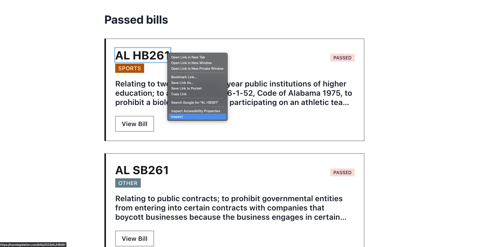
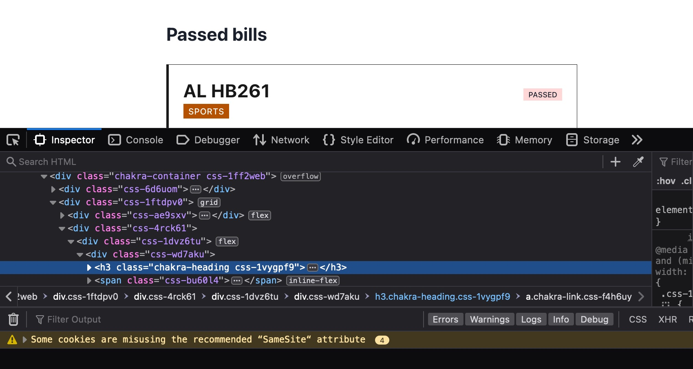

scraping with bs4#
anti-trans legislation#
The past couple of years have seen an explosion in anti-trans legislation that restricts basic rights and recognition for trans people. The number of bills introduced in 2024, like in the year 2023, and 2022 before it, marks new records. These bills prevent trans people from using bathrooms, playing in sports, accessing healthcare, and more in ways that accord with their gender identity. See the Trans Legislation Tracker for more information.
This section uses requests and bs4 to scrape basic metadata about the 80 bills that are being proposed at the federal level. This dataset, which is relatively small in size, will be a starting point for a larger dataset to be used in future lessons in the “cleaning data” and “analyzing data” chapters of this curriculum. For those chapters, you will use Python to gather, clean, and analyze the full text of the bills themselves from congress.gov.
# import the following libraries for our web scraping project
import requests # to make https requests
from bs4 import BeautifulSoup # our web scraping library
# save the data from the website as a "soup" object
site = requests.get('https://translegislation.com/bills/2024/US') # gets the URL
html_code = site.content # saves the HTML code
soup = BeautifulSoup(html_code, 'lxml') # creates a soup object
---------------------------------------------------------------------------
FeatureNotFound Traceback (most recent call last)
Cell In[2], line 5
3 site = requests.get('https://translegislation.com/bills/2024/US') # gets the URL
4 html_code = site.content # saves the HTML code
----> 5 soup = BeautifulSoup(html_code, 'lxml') # creates a soup object
File /opt/anaconda3/envs/jb/lib/python3.13/site-packages/bs4/__init__.py:250, in BeautifulSoup.__init__(self, markup, features, builder, parse_only, from_encoding, exclude_encodings, element_classes, **kwargs)
248 builder_class = builder_registry.lookup(*features)
249 if builder_class is None:
--> 250 raise FeatureNotFound(
251 "Couldn't find a tree builder with the features you "
252 "requested: %s. Do you need to install a parser library?"
253 % ",".join(features))
255 # At this point either we have a TreeBuilder instance in
256 # builder, or we have a builder_class that we can instantiate
257 # with the remaining **kwargs.
258 if builder is None:
FeatureNotFound: Couldn't find a tree builder with the features you requested: lxml. Do you need to install a parser library?
Once we have created our soup, we can use dot syntax to access html elements. Notice the result includes the entire html element (with opening and closing tags) that we are searching for.
# get title
soup.title
<title>United States Bills | Anti-trans legislation</title>
inspecting our page#
Remember that we must inspect pages with our browser’s “Inspector” tool, so we know what elements to scrape with bs4.
First, navigate to the target website, at https://translegislation.com/. Scroll down until you see the “National Anti-Trans Bills” heading. Click on the blue button that says “View 2024 National Bills”. (Alternatively, just navigate directly to the page here).
Once you’re on the page, right click on a bill title, any bill title, and select the inspect element option (or whatever option is closest to that phrase in your menu). The inspector should pop up.

Then, look for that element in the HTML code. The inspector contains everything you need to know about that element, including it’s HTML tag h3, which contains the a and any attributes, like class or href.

Once you identify some elements, append the name of the element to the “soup” using dot syntax.
# checking for third level header element
soup.h3
<h3 class="chakra-heading css-1vygpf9"><style data-emotion="css f4h6uy">.css-f4h6uy{transition-property:var(--chakra-transition-property-common);transition-duration:var(--chakra-transition-duration-fast);transition-timing-function:var(--chakra-transition-easing-ease-out);cursor:pointer;-webkit-text-decoration:none;text-decoration:none;outline:2px solid transparent;outline-offset:2px;color:inherit;}.css-f4h6uy:hover,.css-f4h6uy[data-hover]{-webkit-text-decoration:underline;text-decoration:underline;}.css-f4h6uy:focus,.css-f4h6uy[data-focus]{box-shadow:var(--chakra-shadows-outline);}</style><a class="chakra-link css-f4h6uy" href="/bills/2024/US/HB1064">US<!-- --> <!-- -->HB1064</a></h3>
# checking for division element (the outer element)
soup.div
<div data-reactroot="" id="__next"><style data-emotion="css-global 1o2ia7f">:host,:root{--chakra-ring-inset:var(--chakra-empty,/*!*/ /*!*/);--chakra-ring-offset-width:0px;--chakra-ring-offset-color:#fff;--chakra-ring-color:rgba(66, 153, 225, 0.6);--chakra-ring-offset-shadow:0 0 #0000;--chakra-ring-shadow:0 0 #0000;--chakra-space-x-reverse:0;--chakra-space-y-reverse:0;--chakra-colors-transparent:transparent;--chakra-colors-current:currentColor;--chakra-colors-black:#000000;--chakra-colors-white:#FFFFFF;--chakra-colors-whiteAlpha-50:rgba(255, 255, 255, 0.04);--chakra-colors-whiteAlpha-100:rgba(255, 255, 255, 0.06);--chakra-colors-whiteAlpha-200:rgba(255, 255, 255, 0.08);--chakra-colors-whiteAlpha-300:rgba(255, 255, 255, 0.16);--chakra-colors-whiteAlpha-400:rgba(255, 255, 255, 0.24);--chakra-colors-whiteAlpha-500:rgba(255, 255, 255, 0.36);--chakra-colors-whiteAlpha-600:rgba(255, 255, 255, 0.48);--chakra-colors-whiteAlpha-700:rgba(255, 255, 255, 0.64);--chakra-colors-whiteAlpha-800:rgba(255, 255, 255, 0.80);--chakra-colors-whiteAlpha-900:rgba(255, 255, 255, 0.92);--chakra-colors-blackAlpha-50:rgba(0, 0, 0, 0.04);--chakra-colors-blackAlpha-100:rgba(0, 0, 0, 0.06);--chakra-colors-blackAlpha-200:rgba(0, 0, 0, 0.08);--chakra-colors-blackAlpha-300:rgba(0, 0, 0, 0.16);--chakra-colors-blackAlpha-400:rgba(0, 0, 0, 0.24);--chakra-colors-blackAlpha-500:rgba(0, 0, 0, 0.36);--chakra-colors-blackAlpha-600:rgba(0, 0, 0, 0.48);--chakra-colors-blackAlpha-700:rgba(0, 0, 0, 0.64);--chakra-colors-blackAlpha-800:rgba(0, 0, 0, 0.80);--chakra-colors-blackAlpha-900:rgba(0, 0, 0, 0.92);--chakra-colors-gray-50:#F7FAFC;--chakra-colors-gray-100:#EDF2F7;--chakra-colors-gray-200:#E2E8F0;--chakra-colors-gray-300:#CBD5E0;--chakra-colors-gray-400:#A0AEC0;--chakra-colors-gray-500:#718096;--chakra-colors-gray-600:#4A5568;--chakra-colors-gray-700:#2D3748;--chakra-colors-gray-800:#1A202C;--chakra-colors-gray-900:#171923;--chakra-colors-red-50:#FFF5F5;--chakra-colors-red-100:#FED7D7;--chakra-colors-red-200:#FEB2B2;--chakra-colors-red-300:#FC8181;--chakra-colors-red-400:#F56565;--chakra-colors-red-500:#E53E3E;--chakra-colors-red-600:#C53030;--chakra-colors-red-700:#9B2C2C;--chakra-colors-red-800:#822727;--chakra-colors-red-900:#63171B;--chakra-colors-orange-50:#FFFAF0;--chakra-colors-orange-100:#FEEBC8;--chakra-colors-orange-200:#FBD38D;--chakra-colors-orange-300:#F6AD55;--chakra-colors-orange-400:#ED8936;--chakra-colors-orange-500:#DD6B20;--chakra-colors-orange-600:#C05621;--chakra-colors-orange-700:#9C4221;--chakra-colors-orange-800:#7B341E;--chakra-colors-orange-900:#652B19;--chakra-colors-yellow-50:#FFFFF0;--chakra-colors-yellow-100:#FEFCBF;--chakra-colors-yellow-200:#FAF089;--chakra-colors-yellow-300:#F6E05E;--chakra-colors-yellow-400:#ECC94B;--chakra-colors-yellow-500:#D69E2E;--chakra-colors-yellow-600:#B7791F;--chakra-colors-yellow-700:#975A16;--chakra-colors-yellow-800:#744210;--chakra-colors-yellow-900:#5F370E;--chakra-colors-green-50:#F0FFF4;--chakra-colors-green-100:#C6F6D5;--chakra-colors-green-200:#9AE6B4;--chakra-colors-green-300:#68D391;--chakra-colors-green-400:#48BB78;--chakra-colors-green-500:#38A169;--chakra-colors-green-600:#2F855A;--chakra-colors-green-700:#276749;--chakra-colors-green-800:#22543D;--chakra-colors-green-900:#1C4532;--chakra-colors-teal-50:#E6FFFA;--chakra-colors-teal-100:#B2F5EA;--chakra-colors-teal-200:#81E6D9;--chakra-colors-teal-300:#4FD1C5;--chakra-colors-teal-400:#38B2AC;--chakra-colors-teal-500:#319795;--chakra-colors-teal-600:#2C7A7B;--chakra-colors-teal-700:#285E61;--chakra-colors-teal-800:#234E52;--chakra-colors-teal-900:#1D4044;--chakra-colors-blue-50:#ebf8ff;--chakra-colors-blue-100:#bee3f8;--chakra-colors-blue-200:#90cdf4;--chakra-colors-blue-300:#63b3ed;--chakra-colors-blue-400:#4299e1;--chakra-colors-blue-500:#3182ce;--chakra-colors-blue-600:#2b6cb0;--chakra-colors-blue-700:#2c5282;--chakra-colors-blue-800:#2a4365;--chakra-colors-blue-900:#1A365D;--chakra-colors-cyan-50:#EDFDFD;--chakra-colors-cyan-100:#C4F1F9;--chakra-colors-cyan-200:#9DECF9;--chakra-colors-cyan-300:#76E4F7;--chakra-colors-cyan-400:#0BC5EA;--chakra-colors-cyan-500:#00B5D8;--chakra-colors-cyan-600:#00A3C4;--chakra-colors-cyan-700:#0987A0;--chakra-colors-cyan-800:#086F83;--chakra-colors-cyan-900:#065666;--chakra-colors-purple-50:#FAF5FF;--chakra-colors-purple-100:#E9D8FD;--chakra-colors-purple-200:#D6BCFA;--chakra-colors-purple-300:#B794F4;--chakra-colors-purple-400:#9F7AEA;--chakra-colors-purple-500:#805AD5;--chakra-colors-purple-600:#6B46C1;--chakra-colors-purple-700:#553C9A;--chakra-colors-purple-800:#44337A;--chakra-colors-purple-900:#322659;--chakra-colors-pink-50:#FFF5F7;--chakra-colors-pink-100:#FED7E2;--chakra-colors-pink-200:#FBB6CE;--chakra-colors-pink-300:#F687B3;--chakra-colors-pink-400:#ED64A6;--chakra-colors-pink-500:#D53F8C;--chakra-colors-pink-600:#B83280;--chakra-colors-pink-700:#97266D;--chakra-colors-pink-800:#702459;--chakra-colors-pink-900:#521B41;--chakra-colors-linkedin-50:#E8F4F9;--chakra-colors-linkedin-100:#CFEDFB;--chakra-colors-linkedin-200:#9BDAF3;--chakra-colors-linkedin-300:#68C7EC;--chakra-colors-linkedin-400:#34B3E4;--chakra-colors-linkedin-500:#00A0DC;--chakra-colors-linkedin-600:#008CC9;--chakra-colors-linkedin-700:#0077B5;--chakra-colors-linkedin-800:#005E93;--chakra-colors-linkedin-900:#004471;--chakra-colors-facebook-50:#E8F4F9;--chakra-colors-facebook-100:#D9DEE9;--chakra-colors-facebook-200:#B7C2DA;--chakra-colors-facebook-300:#6482C0;--chakra-colors-facebook-400:#4267B2;--chakra-colors-facebook-500:#385898;--chakra-colors-facebook-600:#314E89;--chakra-colors-facebook-700:#29487D;--chakra-colors-facebook-800:#223B67;--chakra-colors-facebook-900:#1E355B;--chakra-colors-messenger-50:#D0E6FF;--chakra-colors-messenger-100:#B9DAFF;--chakra-colors-messenger-200:#A2CDFF;--chakra-colors-messenger-300:#7AB8FF;--chakra-colors-messenger-400:#2E90FF;--chakra-colors-messenger-500:#0078FF;--chakra-colors-messenger-600:#0063D1;--chakra-colors-messenger-700:#0052AC;--chakra-colors-messenger-800:#003C7E;--chakra-colors-messenger-900:#002C5C;--chakra-colors-whatsapp-50:#dffeec;--chakra-colors-whatsapp-100:#b9f5d0;--chakra-colors-whatsapp-200:#90edb3;--chakra-colors-whatsapp-300:#65e495;--chakra-colors-whatsapp-400:#3cdd78;--chakra-colors-whatsapp-500:#22c35e;--chakra-colors-whatsapp-600:#179848;--chakra-colors-whatsapp-700:#0c6c33;--chakra-colors-whatsapp-800:#01421c;--chakra-colors-whatsapp-900:#001803;--chakra-colors-twitter-50:#E5F4FD;--chakra-colors-twitter-100:#C8E9FB;--chakra-colors-twitter-200:#A8DCFA;--chakra-colors-twitter-300:#83CDF7;--chakra-colors-twitter-400:#57BBF5;--chakra-colors-twitter-500:#1DA1F2;--chakra-colors-twitter-600:#1A94DA;--chakra-colors-twitter-700:#1681BF;--chakra-colors-twitter-800:#136B9E;--chakra-colors-twitter-900:#0D4D71;--chakra-colors-telegram-50:#E3F2F9;--chakra-colors-telegram-100:#C5E4F3;--chakra-colors-telegram-200:#A2D4EC;--chakra-colors-telegram-300:#7AC1E4;--chakra-colors-telegram-400:#47A9DA;--chakra-colors-telegram-500:#0088CC;--chakra-colors-telegram-600:#007AB8;--chakra-colors-telegram-700:#006BA1;--chakra-colors-telegram-800:#005885;--chakra-colors-telegram-900:#003F5E;--chakra-colors-brand-700:#2a69ac;--chakra-colors-brand-800:#153e75;--chakra-colors-brand-900:#1a365d;--chakra-colors-brand-blue:#00a3c4;--chakra-borders-none:0;--chakra-borders-1px:1px solid;--chakra-borders-2px:2px solid;--chakra-borders-4px:4px solid;--chakra-borders-8px:8px solid;--chakra-fonts-heading:-apple-system,BlinkMacSystemFont,"Segoe UI",Helvetica,Arial,sans-serif,"Apple Color Emoji","Segoe UI Emoji","Segoe UI Symbol";--chakra-fonts-body:-apple-system,BlinkMacSystemFont,"Segoe UI",Helvetica,Arial,sans-serif,"Apple Color Emoji","Segoe UI Emoji","Segoe UI Symbol";--chakra-fonts-mono:SFMono-Regular,Menlo,Monaco,Consolas,"Liberation Mono","Courier New",monospace;--chakra-fontSizes-xs:0.75rem;--chakra-fontSizes-sm:0.875rem;--chakra-fontSizes-md:1rem;--chakra-fontSizes-lg:1.125rem;--chakra-fontSizes-xl:1.25rem;--chakra-fontSizes-2xl:1.5rem;--chakra-fontSizes-3xl:1.875rem;--chakra-fontSizes-4xl:2.25rem;--chakra-fontSizes-5xl:3rem;--chakra-fontSizes-6xl:3.75rem;--chakra-fontSizes-7xl:4.5rem;--chakra-fontSizes-8xl:6rem;--chakra-fontSizes-9xl:8rem;--chakra-fontWeights-hairline:100;--chakra-fontWeights-thin:200;--chakra-fontWeights-light:300;--chakra-fontWeights-normal:400;--chakra-fontWeights-medium:500;--chakra-fontWeights-semibold:600;--chakra-fontWeights-bold:700;--chakra-fontWeights-extrabold:800;--chakra-fontWeights-black:900;--chakra-letterSpacings-tighter:-0.05em;--chakra-letterSpacings-tight:-0.025em;--chakra-letterSpacings-normal:0;--chakra-letterSpacings-wide:0.025em;--chakra-letterSpacings-wider:0.05em;--chakra-letterSpacings-widest:0.1em;--chakra-lineHeights-3:.75rem;--chakra-lineHeights-4:1rem;--chakra-lineHeights-5:1.25rem;--chakra-lineHeights-6:1.5rem;--chakra-lineHeights-7:1.75rem;--chakra-lineHeights-8:2rem;--chakra-lineHeights-9:2.25rem;--chakra-lineHeights-10:2.5rem;--chakra-lineHeights-normal:normal;--chakra-lineHeights-none:1;--chakra-lineHeights-shorter:1.25;--chakra-lineHeights-short:1.375;--chakra-lineHeights-base:1.5;--chakra-lineHeights-tall:1.625;--chakra-lineHeights-taller:2;--chakra-radii-none:0;--chakra-radii-sm:0.125rem;--chakra-radii-base:0.25rem;--chakra-radii-md:0.375rem;--chakra-radii-lg:0.5rem;--chakra-radii-xl:0.75rem;--chakra-radii-2xl:1rem;--chakra-radii-3xl:1.5rem;--chakra-radii-full:9999px;--chakra-space-1:0.25rem;--chakra-space-2:0.5rem;--chakra-space-3:0.75rem;--chakra-space-4:1rem;--chakra-space-5:1.25rem;--chakra-space-6:1.5rem;--chakra-space-7:1.75rem;--chakra-space-8:2rem;--chakra-space-9:2.25rem;--chakra-space-10:2.5rem;--chakra-space-12:3rem;--chakra-space-14:3.5rem;--chakra-space-16:4rem;--chakra-space-20:5rem;--chakra-space-24:6rem;--chakra-space-28:7rem;--chakra-space-32:8rem;--chakra-space-36:9rem;--chakra-space-40:10rem;--chakra-space-44:11rem;--chakra-space-48:12rem;--chakra-space-52:13rem;--chakra-space-56:14rem;--chakra-space-60:15rem;--chakra-space-64:16rem;--chakra-space-72:18rem;--chakra-space-80:20rem;--chakra-space-96:24rem;--chakra-space-px:1px;--chakra-space-0-5:0.125rem;--chakra-space-1-5:0.375rem;--chakra-space-2-5:0.625rem;--chakra-space-3-5:0.875rem;--chakra-shadows-xs:0 0 0 1px rgba(0, 0, 0, 0.05);--chakra-shadows-sm:0 1px 2px 0 rgba(0, 0, 0, 0.05);--chakra-shadows-base:0 1px 3px 0 rgba(0, 0, 0, 0.1),0 1px 2px 0 rgba(0, 0, 0, 0.06);--chakra-shadows-md:0 4px 6px -1px rgba(0, 0, 0, 0.1),0 2px 4px -1px rgba(0, 0, 0, 0.06);--chakra-shadows-lg:0 10px 15px -3px rgba(0, 0, 0, 0.1),0 4px 6px -2px rgba(0, 0, 0, 0.05);--chakra-shadows-xl:0 20px 25px -5px rgba(0, 0, 0, 0.1),0 10px 10px -5px rgba(0, 0, 0, 0.04);--chakra-shadows-2xl:0 25px 50px -12px rgba(0, 0, 0, 0.25);--chakra-shadows-outline:0 0 0 3px rgba(66, 153, 225, 0.6);--chakra-shadows-inner:inset 0 2px 4px 0 rgba(0,0,0,0.06);--chakra-shadows-none:none;--chakra-shadows-dark-lg:rgba(0, 0, 0, 0.1) 0px 0px 0px 1px,rgba(0, 0, 0, 0.2) 0px 5px 10px,rgba(0, 0, 0, 0.4) 0px 15px 40px;--chakra-sizes-1:0.25rem;--chakra-sizes-2:0.5rem;--chakra-sizes-3:0.75rem;--chakra-sizes-4:1rem;--chakra-sizes-5:1.25rem;--chakra-sizes-6:1.5rem;--chakra-sizes-7:1.75rem;--chakra-sizes-8:2rem;--chakra-sizes-9:2.25rem;--chakra-sizes-10:2.5rem;--chakra-sizes-12:3rem;--chakra-sizes-14:3.5rem;--chakra-sizes-16:4rem;--chakra-sizes-20:5rem;--chakra-sizes-24:6rem;--chakra-sizes-28:7rem;--chakra-sizes-32:8rem;--chakra-sizes-36:9rem;--chakra-sizes-40:10rem;--chakra-sizes-44:11rem;--chakra-sizes-48:12rem;--chakra-sizes-52:13rem;--chakra-sizes-56:14rem;--chakra-sizes-60:15rem;--chakra-sizes-64:16rem;--chakra-sizes-72:18rem;--chakra-sizes-80:20rem;--chakra-sizes-96:24rem;--chakra-sizes-px:1px;--chakra-sizes-0-5:0.125rem;--chakra-sizes-1-5:0.375rem;--chakra-sizes-2-5:0.625rem;--chakra-sizes-3-5:0.875rem;--chakra-sizes-max:max-content;--chakra-sizes-min:min-content;--chakra-sizes-full:100%;--chakra-sizes-3xs:14rem;--chakra-sizes-2xs:16rem;--chakra-sizes-xs:20rem;--chakra-sizes-sm:24rem;--chakra-sizes-md:28rem;--chakra-sizes-lg:32rem;--chakra-sizes-xl:36rem;--chakra-sizes-2xl:42rem;--chakra-sizes-3xl:48rem;--chakra-sizes-4xl:56rem;--chakra-sizes-5xl:64rem;--chakra-sizes-6xl:72rem;--chakra-sizes-7xl:80rem;--chakra-sizes-8xl:90rem;--chakra-sizes-container-sm:640px;--chakra-sizes-container-md:768px;--chakra-sizes-container-lg:1024px;--chakra-sizes-container-xl:1280px;--chakra-zIndices-hide:-1;--chakra-zIndices-auto:auto;--chakra-zIndices-base:0;--chakra-zIndices-docked:10;--chakra-zIndices-dropdown:1000;--chakra-zIndices-sticky:1100;--chakra-zIndices-banner:1200;--chakra-zIndices-overlay:1300;--chakra-zIndices-modal:1400;--chakra-zIndices-popover:1500;--chakra-zIndices-skipLink:1600;--chakra-zIndices-toast:1700;--chakra-zIndices-tooltip:1800;--chakra-transition-property-common:background-color,border-color,color,fill,stroke,opacity,box-shadow,transform;--chakra-transition-property-colors:background-color,border-color,color,fill,stroke;--chakra-transition-property-dimensions:width,height;--chakra-transition-property-position:left,right,top,bottom;--chakra-transition-property-background:background-color,background-image,background-position;--chakra-transition-easing-ease-in:cubic-bezier(0.4, 0, 1, 1);--chakra-transition-easing-ease-out:cubic-bezier(0, 0, 0.2, 1);--chakra-transition-easing-ease-in-out:cubic-bezier(0.4, 0, 0.2, 1);--chakra-transition-duration-ultra-fast:50ms;--chakra-transition-duration-faster:100ms;--chakra-transition-duration-fast:150ms;--chakra-transition-duration-normal:200ms;--chakra-transition-duration-slow:300ms;--chakra-transition-duration-slower:400ms;--chakra-transition-duration-ultra-slow:500ms;--chakra-blur-none:0;--chakra-blur-sm:4px;--chakra-blur-base:8px;--chakra-blur-md:12px;--chakra-blur-lg:16px;--chakra-blur-xl:24px;--chakra-blur-2xl:40px;--chakra-blur-3xl:64px;}</style><style data-emotion="css-global 1jqlf9g">html{line-height:1.5;-webkit-text-size-adjust:100%;font-family:system-ui,sans-serif;-webkit-font-smoothing:antialiased;text-rendering:optimizeLegibility;-moz-osx-font-smoothing:grayscale;touch-action:manipulation;}body{position:relative;min-height:100%;font-feature-settings:'kern';}*,*::before,*::after{border-width:0;border-style:solid;box-sizing:border-box;}main{display:block;}hr{border-top-width:1px;box-sizing:content-box;height:0;overflow:visible;}pre,code,kbd,samp{font-family:SFMono-Regular,Menlo,Monaco,Consolas,monospace;font-size:1em;}a{background-color:transparent;color:inherit;-webkit-text-decoration:inherit;text-decoration:inherit;}abbr[title]{border-bottom:none;-webkit-text-decoration:underline;text-decoration:underline;-webkit-text-decoration:underline dotted;-webkit-text-decoration:underline dotted;text-decoration:underline dotted;}b,strong{font-weight:bold;}small{font-size:80%;}sub,sup{font-size:75%;line-height:0;position:relative;vertical-align:baseline;}sub{bottom:-0.25em;}sup{top:-0.5em;}img{border-style:none;}button,input,optgroup,select,textarea{font-family:inherit;font-size:100%;line-height:1.15;margin:0;}button,input{overflow:visible;}button,select{text-transform:none;}button::-moz-focus-inner,[type="button"]::-moz-focus-inner,[type="reset"]::-moz-focus-inner,[type="submit"]::-moz-focus-inner{border-style:none;padding:0;}fieldset{padding:0.35em 0.75em 0.625em;}legend{box-sizing:border-box;color:inherit;display:table;max-width:100%;padding:0;white-space:normal;}progress{vertical-align:baseline;}textarea{overflow:auto;}[type="checkbox"],[type="radio"]{box-sizing:border-box;padding:0;}[type="number"]::-webkit-inner-spin-button,[type="number"]::-webkit-outer-spin-button{-webkit-appearance:none!important;}input[type="number"]{-moz-appearance:textfield;}[type="search"]{-webkit-appearance:textfield;outline-offset:-2px;}[type="search"]::-webkit-search-decoration{-webkit-appearance:none!important;}::-webkit-file-upload-button{-webkit-appearance:button;font:inherit;}details{display:block;}summary{display:-webkit-box;display:-webkit-list-item;display:-ms-list-itembox;display:list-item;}template{display:none;}[hidden]{display:none!important;}body,blockquote,dl,dd,h1,h2,h3,h4,h5,h6,hr,figure,p,pre{margin:0;}button{background:transparent;padding:0;}fieldset{margin:0;padding:0;}ol,ul{margin:0;padding:0;}textarea{resize:vertical;}button,[role="button"]{cursor:pointer;}button::-moz-focus-inner{border:0!important;}table{border-collapse:collapse;}h1,h2,h3,h4,h5,h6{font-size:inherit;font-weight:inherit;}button,input,optgroup,select,textarea{padding:0;line-height:inherit;color:inherit;}img,svg,video,canvas,audio,iframe,embed,object{display:block;}img,video{max-width:100%;height:auto;}[data-js-focus-visible] :focus:not([data-focus-visible-added]){outline:none;box-shadow:none;}select::-ms-expand{display:none;}</style><style data-emotion="css-global 1baqkrf">body{font-family:var(--chakra-fonts-body);color:var(--chakra-colors-gray-800);background:var(--chakra-colors-white);transition-property:background-color;transition-duration:var(--chakra-transition-duration-normal);line-height:var(--chakra-lineHeights-base);}*::-webkit-input-placeholder{color:var(--chakra-colors-gray-400);}*::-moz-placeholder{color:var(--chakra-colors-gray-400);}*:-ms-input-placeholder{color:var(--chakra-colors-gray-400);}*::placeholder{color:var(--chakra-colors-gray-400);}*,*::before,::after{border-color:var(--chakra-colors-gray-200);word-wrap:break-word;}</style><div class="css-0"><style data-emotion="css 1v5zkfs">.css-1v5zkfs{display:-webkit-box;display:-webkit-flex;display:-ms-flexbox;display:flex;-webkit-align-items:center;-webkit-box-align:center;-ms-flex-align:center;align-items:center;background:var(--chakra-colors-white);color:var(--chakra-colors-gray-600);min-height:60px;padding-top:var(--chakra-space-2);padding-bottom:var(--chakra-space-2);-webkit-padding-start:var(--chakra-space-4);padding-inline-start:var(--chakra-space-4);-webkit-padding-end:var(--chakra-space-4);padding-inline-end:var(--chakra-space-4);border-bottom:1px;border-style:solid;border-color:var(--chakra-colors-gray-200);}</style><div class="css-1v5zkfs"><style data-emotion="css 1twb9xo">.css-1twb9xo{display:-webkit-box;display:-webkit-flex;display:-ms-flexbox;display:flex;-webkit-flex:1;-ms-flex:1;flex:1;margin-left:calc(var(--chakra-space-2) * -1);}@media screen and (min-width: 48em){.css-1twb9xo{display:none;-webkit-flex:auto;-ms-flex:auto;flex:auto;}}</style><div class="css-1twb9xo"><style data-emotion="css 103jld">.css-103jld{display:-webkit-inline-box;display:-webkit-inline-flex;display:-ms-inline-flexbox;display:inline-flex;-webkit-appearance:none;-moz-appearance:none;-ms-appearance:none;appearance:none;-webkit-align-items:center;-webkit-box-align:center;-ms-flex-align:center;align-items:center;-webkit-box-pack:center;-ms-flex-pack:center;-webkit-justify-content:center;justify-content:center;-webkit-user-select:none;-moz-user-select:none;-ms-user-select:none;user-select:none;position:relative;white-space:nowrap;vertical-align:middle;outline:2px solid transparent;outline-offset:2px;width:auto;line-height:1.2;border-radius:var(--chakra-radii-md);font-weight:var(--chakra-fontWeights-semibold);transition-property:var(--chakra-transition-property-common);transition-duration:var(--chakra-transition-duration-normal);height:var(--chakra-sizes-10);min-width:var(--chakra-sizes-10);font-size:var(--chakra-fontSizes-md);-webkit-padding-start:var(--chakra-space-4);padding-inline-start:var(--chakra-space-4);-webkit-padding-end:var(--chakra-space-4);padding-inline-end:var(--chakra-space-4);color:inherit;padding:0px;}.css-103jld:focus,.css-103jld[data-focus]{box-shadow:var(--chakra-shadows-outline);}.css-103jld[disabled],.css-103jld[aria-disabled=true],.css-103jld[data-disabled]{opacity:0.4;cursor:not-allowed;box-shadow:var(--chakra-shadows-none);}.css-103jld:hover,.css-103jld[data-hover]{background:var(--chakra-colors-gray-100);}.css-103jld:hover[disabled],.css-103jld[data-hover][disabled],.css-103jld:hover[aria-disabled=true],.css-103jld[data-hover][aria-disabled=true],.css-103jld:hover[data-disabled],.css-103jld[data-hover][data-disabled]{background:initial;}.css-103jld:active,.css-103jld[data-active]{background:var(--chakra-colors-gray-200);}</style><button aria-label="Toggle Navigation" class="chakra-button css-103jld" type="button"><style data-emotion="css bokek7">.css-bokek7{width:var(--chakra-sizes-5);height:var(--chakra-sizes-5);display:inline-block;line-height:1em;-webkit-flex-shrink:0;-ms-flex-negative:0;flex-shrink:0;color:currentColor;vertical-align:middle;}</style><svg aria-hidden="true" class="chakra-icon css-bokek7" focusable="false" viewbox="0 0 24 24"><path d="M 3 5 A 1.0001 1.0001 0 1 0 3 7 L 21 7 A 1.0001 1.0001 0 1 0 21 5 L 3 5 z M 3 11 A 1.0001 1.0001 0 1 0 3 13 L 21 13 A 1.0001 1.0001 0 1 0 21 11 L 3 11 z M 3 17 A 1.0001 1.0001 0 1 0 3 19 L 21 19 A 1.0001 1.0001 0 1 0 21 17 L 3 17 z" fill="currentColor"></path></svg></button></div><style data-emotion="css 1ef8uzr">.css-1ef8uzr{display:-webkit-box;display:-webkit-flex;display:-ms-flexbox;display:flex;-webkit-box-pack:center;-ms-flex-pack:center;-webkit-justify-content:center;justify-content:center;-webkit-flex:1;-ms-flex:1;flex:1;}@media screen and (min-width: 48em){.css-1ef8uzr{-webkit-box-pack:start;-ms-flex-pack:start;-webkit-justify-content:start;justify-content:start;}}</style><div class="css-1ef8uzr"><style data-emotion="css 1g6ksko">.css-1g6ksko{text-align:center;font-family:var(--chakra-fonts-heading);color:var(--chakra-colors-gray-800);font-size:var(--chakra-fontSizes-xl);}</style><p class="chakra-text css-1g6ksko" style="line-height:1.2rem;margin-right:15px"><style data-emotion="css f4h6uy">.css-f4h6uy{transition-property:var(--chakra-transition-property-common);transition-duration:var(--chakra-transition-duration-fast);transition-timing-function:var(--chakra-transition-easing-ease-out);cursor:pointer;-webkit-text-decoration:none;text-decoration:none;outline:2px solid transparent;outline-offset:2px;color:inherit;}.css-f4h6uy:hover,.css-f4h6uy[data-hover]{-webkit-text-decoration:underline;text-decoration:underline;}.css-f4h6uy:focus,.css-f4h6uy[data-focus]{box-shadow:var(--chakra-shadows-outline);}</style><a class="chakra-link css-f4h6uy" href="/">Trans Legislation Tracker</a></p><style data-emotion="css 1ynfsgs">.css-1ynfsgs{display:none;margin-left:var(--chakra-space-10);}@media screen and (min-width: 48em){.css-1ynfsgs{display:-webkit-box;display:-webkit-flex;display:-ms-flexbox;display:flex;}}</style><div class="css-1ynfsgs"><style data-emotion="css nd8846">.css-nd8846{display:-webkit-box;display:-webkit-flex;display:-ms-flexbox;display:flex;-webkit-flex-direction:row;-ms-flex-direction:row;flex-direction:row;}.css-nd8846>*:not(style)~*:not(style){margin-top:0px;-webkit-margin-end:0px;margin-inline-end:0px;margin-bottom:0px;-webkit-margin-start:var(--chakra-space-4);margin-inline-start:var(--chakra-space-4);}</style><div class="chakra-stack css-nd8846"><div class="css-0"><style data-emotion="css 1yt6u0r">.css-1yt6u0r{transition-property:var(--chakra-transition-property-common);transition-duration:var(--chakra-transition-duration-fast);transition-timing-function:var(--chakra-transition-easing-ease-out);cursor:pointer;-webkit-text-decoration:none;text-decoration:none;outline:2px solid transparent;outline-offset:2px;color:var(--chakra-colors-gray-600);padding:var(--chakra-space-2);font-size:var(--chakra-fontSizes-sm);font-weight:500;}.css-1yt6u0r:hover,.css-1yt6u0r[data-hover]{-webkit-text-decoration:none;text-decoration:none;color:var(--chakra-colors-gray-800);}.css-1yt6u0r:focus,.css-1yt6u0r[data-focus]{box-shadow:var(--chakra-shadows-outline);}</style><a aria-controls="popover-content-1" aria-expanded="false" aria-haspopup="dialog" class="chakra-link css-1yt6u0r" href="/learn" id="popover-trigger-1">The Rise of Anti-trans Bills</a></div><div class="css-0"><a aria-controls="popover-content-1" aria-expanded="false" aria-haspopup="dialog" class="chakra-link css-1yt6u0r" href="/bills/recent-updates" id="popover-trigger-1">Recent Updates</a></div><div class="css-0"><a aria-controls="popover-content-1" aria-expanded="false" aria-haspopup="dialog" class="chakra-link css-1yt6u0r" href="/legislative-sessions" id="popover-trigger-1">Events</a></div><div class="css-0"><a aria-controls="popover-content-1" aria-expanded="false" aria-haspopup="dialog" class="chakra-link css-1yt6u0r" href="/further-reading" id="popover-trigger-1">Further Reading</a></div><div class="css-0"><a aria-controls="popover-content-1" aria-expanded="false" aria-haspopup="dialog" class="chakra-link css-1yt6u0r" href="/about" id="popover-trigger-1">About</a></div></div></div></div><style data-emotion="css x7x3n6">.css-x7x3n6{display:-webkit-box;display:-webkit-flex;display:-ms-flexbox;display:flex;-webkit-box-pack:end;-ms-flex-pack:end;-webkit-justify-content:flex-end;justify-content:flex-end;-webkit-flex-direction:row;-ms-flex-direction:row;flex-direction:row;-webkit-flex:1;-ms-flex:1;flex:1;margin-right:var(--chakra-space-4);}.css-x7x3n6>*:not(style)~*:not(style){margin-top:0px;-webkit-margin-end:0px;margin-inline-end:0px;margin-bottom:0px;-webkit-margin-start:var(--chakra-space-6);margin-inline-start:var(--chakra-space-6);}@media screen and (min-width: 48em){.css-x7x3n6{-webkit-flex:0;-ms-flex:0;flex:0;}}</style><div class="chakra-stack css-x7x3n6"><style data-emotion="css nzo8h4">.css-nzo8h4{display:-webkit-inline-box;display:-webkit-inline-flex;display:-ms-inline-flexbox;display:inline-flex;-webkit-appearance:none;-moz-appearance:none;-ms-appearance:none;appearance:none;-webkit-align-items:center;-webkit-box-align:center;-ms-flex-align:center;align-items:center;-webkit-box-pack:center;-ms-flex-pack:center;-webkit-justify-content:center;justify-content:center;-webkit-user-select:none;-moz-user-select:none;-ms-user-select:none;user-select:none;position:relative;white-space:nowrap;vertical-align:middle;outline:2px solid transparent;outline-offset:2px;width:100px;line-height:1.2;border-radius:var(--chakra-radii-md);font-weight:var(--chakra-fontWeights-semibold);transition-property:var(--chakra-transition-property-common);transition-duration:var(--chakra-transition-duration-normal);height:var(--chakra-sizes-10);min-width:var(--chakra-sizes-10);font-size:var(--chakra-fontSizes-md);-webkit-padding-start:var(--chakra-space-4);padding-inline-start:var(--chakra-space-4);-webkit-padding-end:var(--chakra-space-4);padding-inline-end:var(--chakra-space-4);background:var(--chakra-colors-gray-100);padding:0px;}.css-nzo8h4:focus,.css-nzo8h4[data-focus]{box-shadow:var(--chakra-shadows-outline);}.css-nzo8h4[disabled],.css-nzo8h4[aria-disabled=true],.css-nzo8h4[data-disabled]{opacity:0.4;cursor:not-allowed;box-shadow:var(--chakra-shadows-none);}.css-nzo8h4:hover,.css-nzo8h4[data-hover]{background:var(--chakra-colors-gray-200);}.css-nzo8h4:hover[disabled],.css-nzo8h4[data-hover][disabled],.css-nzo8h4:hover[aria-disabled=true],.css-nzo8h4[data-hover][aria-disabled=true],.css-nzo8h4:hover[data-disabled],.css-nzo8h4[data-hover][data-disabled]{background:var(--chakra-colors-gray-100);}.css-nzo8h4:active,.css-nzo8h4[data-active]{background:var(--chakra-colors-gray-300);}</style><button aria-label="Support us on Ko-fi" class="chakra-button css-nzo8h4" type="button"><img aria-hidden="true" class="chakra-image css-0" focusable="false" src="/kofi-support-button.png"/></button></div></div><div class="chakra-collapse" style="overflow:hidden;display:none;opacity:0;height:0px"><style data-emotion="css 1lgh1g">.css-1lgh1g{-webkit-flex-direction:column;-ms-flex-direction:column;flex-direction:column;background:var(--chakra-colors-white);padding:var(--chakra-space-4);}.css-1lgh1g>*:not(style)~*:not(style){margin-top:0.5rem;-webkit-margin-end:0px;margin-inline-end:0px;margin-bottom:0px;-webkit-margin-start:0px;margin-inline-start:0px;}@media screen and (min-width: 48em){.css-1lgh1g{display:none;}}</style><div class="chakra-stack css-1lgh1g"><style data-emotion="css egoftb">.css-egoftb{display:-webkit-box;display:-webkit-flex;display:-ms-flexbox;display:flex;-webkit-flex-direction:column;-ms-flex-direction:column;flex-direction:column;}.css-egoftb>*:not(style)~*:not(style){margin-top:var(--chakra-space-4);-webkit-margin-end:0px;margin-inline-end:0px;margin-bottom:0px;-webkit-margin-start:0px;margin-inline-start:0px;}</style><div class="chakra-stack css-egoftb"><style data-emotion="css lxmzlz">.css-lxmzlz{display:-webkit-box;display:-webkit-flex;display:-ms-flexbox;display:flex;-webkit-align-items:center;-webkit-box-align:center;-ms-flex-align:center;align-items:center;-webkit-box-pack:justify;-webkit-justify-content:space-between;justify-content:space-between;padding-top:var(--chakra-space-2);padding-bottom:var(--chakra-space-2);}.css-lxmzlz:hover,.css-lxmzlz[data-hover]{-webkit-text-decoration:none;text-decoration:none;}</style><style data-emotion="css ryc07z">.css-ryc07z{transition-property:var(--chakra-transition-property-common);transition-duration:var(--chakra-transition-duration-fast);transition-timing-function:var(--chakra-transition-easing-ease-out);cursor:pointer;-webkit-text-decoration:none;text-decoration:none;outline:2px solid transparent;outline-offset:2px;color:inherit;display:-webkit-box;display:-webkit-flex;display:-ms-flexbox;display:flex;-webkit-align-items:center;-webkit-box-align:center;-ms-flex-align:center;align-items:center;-webkit-box-pack:justify;-webkit-justify-content:space-between;justify-content:space-between;padding-top:var(--chakra-space-2);padding-bottom:var(--chakra-space-2);}.css-ryc07z:hover,.css-ryc07z[data-hover]{-webkit-text-decoration:underline;text-decoration:underline;}.css-ryc07z:focus,.css-ryc07z[data-focus]{box-shadow:var(--chakra-shadows-outline);}.css-ryc07z:hover,.css-ryc07z[data-hover]{-webkit-text-decoration:none;text-decoration:none;}</style><a class="chakra-link css-ryc07z" href="/"><style data-emotion="css 9y4vnp">.css-9y4vnp{font-weight:600;color:var(--chakra-colors-gray-600);}</style><p class="chakra-text css-9y4vnp">Home</p></a><div class="chakra-collapse" style="overflow:hidden;display:none;margin-top:0!important;opacity:0;height:0px"><style data-emotion="css 11sp92w">.css-11sp92w{display:-webkit-box;display:-webkit-flex;display:-ms-flexbox;display:flex;-webkit-align-items:start;-webkit-box-align:start;-ms-flex-align:start;align-items:start;-webkit-flex-direction:column;-ms-flex-direction:column;flex-direction:column;margin-top:var(--chakra-space-2);padding-left:var(--chakra-space-4);border-left:1px;border-style:solid;border-color:var(--chakra-colors-gray-200);}.css-11sp92w>*:not(style)~*:not(style){margin-top:0.5rem;-webkit-margin-end:0px;margin-inline-end:0px;margin-bottom:0px;-webkit-margin-start:0px;margin-inline-start:0px;}</style><div class="chakra-stack css-11sp92w"></div></div></div><div class="chakra-stack css-egoftb"><a class="chakra-link css-ryc07z" href="/learn"><p class="chakra-text css-9y4vnp">The Rise of Anti-trans Bills</p></a><div class="chakra-collapse" style="overflow:hidden;display:none;margin-top:0!important;opacity:0;height:0px"><div class="chakra-stack css-11sp92w"></div></div></div><div class="chakra-stack css-egoftb"><a class="chakra-link css-ryc07z" href="/bills/recent-updates"><p class="chakra-text css-9y4vnp">Recent Updates</p></a><div class="chakra-collapse" style="overflow:hidden;display:none;margin-top:0!important;opacity:0;height:0px"><div class="chakra-stack css-11sp92w"></div></div></div><div class="chakra-stack css-egoftb"><a class="chakra-link css-ryc07z" href="/legislative-sessions"><p class="chakra-text css-9y4vnp">Events</p></a><div class="chakra-collapse" style="overflow:hidden;display:none;margin-top:0!important;opacity:0;height:0px"><div class="chakra-stack css-11sp92w"></div></div></div><div class="chakra-stack css-egoftb"><a class="chakra-link css-ryc07z" href="/further-reading"><p class="chakra-text css-9y4vnp">Further Reading</p></a><div class="chakra-collapse" style="overflow:hidden;display:none;margin-top:0!important;opacity:0;height:0px"><div class="chakra-stack css-11sp92w"></div></div></div><div class="chakra-stack css-egoftb"><a class="chakra-link css-ryc07z" href="/about"><p class="chakra-text css-9y4vnp">About</p></a><div class="chakra-collapse" style="overflow:hidden;display:none;margin-top:0!important;opacity:0;height:0px"><div class="chakra-stack css-11sp92w"></div></div></div></div></div></div><div><style data-emotion="css 1ff2web">.css-1ff2web{width:100%;-webkit-margin-start:auto;margin-inline-start:auto;-webkit-margin-end:auto;margin-inline-end:auto;max-width:var(--chakra-sizes-container-md);-webkit-padding-start:1rem;padding-inline-start:1rem;-webkit-padding-end:1rem;padding-inline-end:1rem;margin-bottom:var(--chakra-space-20);}</style><div class="chakra-container css-1ff2web"><style data-emotion="css 1gateod">.css-1gateod{margin-top:var(--chakra-space-8);margin-bottom:var(--chakra-space-4);margin-left:inherit;margin-right:inherit;}</style><div class="css-1gateod"><style data-emotion="css q1yqfi">.css-q1yqfi{font-family:var(--chakra-fonts-heading);font-weight:var(--chakra-fontWeights-bold);font-size:var(--chakra-fontSizes-4xl);line-height:1.2;margin-bottom:var(--chakra-space-2);}@media screen and (min-width: 48em){.css-q1yqfi{font-size:var(--chakra-fontSizes-5xl);line-height:1;}}</style><h2 class="chakra-heading css-q1yqfi">United States</h2></div><style data-emotion="css ul6lko">.css-ul6lko{margin-bottom:var(--chakra-space-8);max-width:610px;}</style><div class="css-ul6lko"><style data-emotion="css 1p8a9b1">.css-1p8a9b1{margin-left:inherit;margin-right:inherit;margin-bottom:var(--chakra-space-2);}</style><div class="css-1p8a9b1"><style data-emotion="css 61fv82">.css-61fv82{font-size:var(--chakra-fontSizes-2xl);margin-bottom:var(--chakra-space-2);max-width:var(--chakra-sizes-2xl);}</style><p class="chakra-text css-61fv82">We are tracking <span style="color:#C53030;font-weight:600">80</span> <!-- -->anti-trans bills in <!-- -->United States<!-- --> in <!-- -->2024<!-- -->. The legislation impacts<!-- --> <span style="color:#181818;font-weight:600">8</span> <!-- -->categories<!-- -->:</p><style data-emotion="css 2imjyh">.css-2imjyh{display:-webkit-box;display:-webkit-flex;display:-ms-flexbox;display:flex;-webkit-box-flex-wrap:wrap;-webkit-flex-wrap:wrap;-ms-flex-wrap:wrap;flex-wrap:wrap;}</style><div class="css-2imjyh"><style data-emotion="css i3jkqk">.css-i3jkqk{font-size:var(--chakra-fontSizes-lg);}</style><p class="chakra-text css-i3jkqk"><style data-emotion="css 5jrom">.css-5jrom{display:-webkit-inline-box;display:-webkit-inline-flex;display:-ms-inline-flexbox;display:inline-flex;vertical-align:top;-webkit-align-items:center;-webkit-box-align:center;-ms-flex-align:center;align-items:center;max-width:100%;font-weight:var(--chakra-fontWeights-medium);line-height:1.2;outline:2px solid transparent;outline-offset:2px;min-height:1.5rem;min-width:1.5rem;font-size:var(--chakra-fontSizes-sm);border-radius:0px;-webkit-padding-start:var(--chakra-space-2);padding-inline-start:var(--chakra-space-2);-webkit-padding-end:var(--chakra-space-2);padding-inline-end:var(--chakra-space-2);background:#3E3F30;color:var(--chakra-colors-white);margin:var(--chakra-space-1);}.css-5jrom:focus,.css-5jrom[data-focus]{box-shadow:var(--chakra-shadows-outline);}</style><span class="css-5jrom">MILITARY</span></p><p class="chakra-text css-i3jkqk"><style data-emotion="css 1kcp1uz">.css-1kcp1uz{display:-webkit-inline-box;display:-webkit-inline-flex;display:-ms-inline-flexbox;display:inline-flex;vertical-align:top;-webkit-align-items:center;-webkit-box-align:center;-ms-flex-align:center;align-items:center;max-width:100%;font-weight:var(--chakra-fontWeights-medium);line-height:1.2;outline:2px solid transparent;outline-offset:2px;min-height:1.5rem;min-width:1.5rem;font-size:var(--chakra-fontSizes-sm);border-radius:0px;-webkit-padding-start:var(--chakra-space-2);padding-inline-start:var(--chakra-space-2);-webkit-padding-end:var(--chakra-space-2);padding-inline-end:var(--chakra-space-2);background:#005B99;color:var(--chakra-colors-white);margin:var(--chakra-space-1);}.css-1kcp1uz:focus,.css-1kcp1uz[data-focus]{box-shadow:var(--chakra-shadows-outline);}</style><span class="css-1kcp1uz">HEALTHCARE</span></p><p class="chakra-text css-i3jkqk"><style data-emotion="css 11jclbo">.css-11jclbo{display:-webkit-inline-box;display:-webkit-inline-flex;display:-ms-inline-flexbox;display:inline-flex;vertical-align:top;-webkit-align-items:center;-webkit-box-align:center;-ms-flex-align:center;align-items:center;max-width:100%;font-weight:var(--chakra-fontWeights-medium);line-height:1.2;outline:2px solid transparent;outline-offset:2px;min-height:1.5rem;min-width:1.5rem;font-size:var(--chakra-fontSizes-sm);border-radius:0px;-webkit-padding-start:var(--chakra-space-2);padding-inline-start:var(--chakra-space-2);-webkit-padding-end:var(--chakra-space-2);padding-inline-end:var(--chakra-space-2);background:#3F2A56;color:var(--chakra-colors-white);margin:var(--chakra-space-1);}.css-11jclbo:focus,.css-11jclbo[data-focus]{box-shadow:var(--chakra-shadows-outline);}</style><span class="css-11jclbo">INCARCERATION</span></p><p class="chakra-text css-i3jkqk"><style data-emotion="css f4r7ae">.css-f4r7ae{display:-webkit-inline-box;display:-webkit-inline-flex;display:-ms-inline-flexbox;display:inline-flex;vertical-align:top;-webkit-align-items:center;-webkit-box-align:center;-ms-flex-align:center;align-items:center;max-width:100%;font-weight:var(--chakra-fontWeights-medium);line-height:1.2;outline:2px solid transparent;outline-offset:2px;min-height:1.5rem;min-width:1.5rem;font-size:var(--chakra-fontSizes-sm);border-radius:0px;-webkit-padding-start:var(--chakra-space-2);padding-inline-start:var(--chakra-space-2);-webkit-padding-end:var(--chakra-space-2);padding-inline-end:var(--chakra-space-2);background:#005649;color:var(--chakra-colors-white);margin:var(--chakra-space-1);}.css-f4r7ae:focus,.css-f4r7ae[data-focus]{box-shadow:var(--chakra-shadows-outline);}</style><span class="css-f4r7ae">EDUCATION</span></p><p class="chakra-text css-i3jkqk"><span class="css-5jrom">OTHER</span></p><p class="chakra-text css-i3jkqk"><style data-emotion="css ra7tli">.css-ra7tli{display:-webkit-inline-box;display:-webkit-inline-flex;display:-ms-inline-flexbox;display:inline-flex;vertical-align:top;-webkit-align-items:center;-webkit-box-align:center;-ms-flex-align:center;align-items:center;max-width:100%;font-weight:var(--chakra-fontWeights-medium);line-height:1.2;outline:2px solid transparent;outline-offset:2px;min-height:1.5rem;min-width:1.5rem;font-size:var(--chakra-fontSizes-sm);border-radius:0px;-webkit-padding-start:var(--chakra-space-2);padding-inline-start:var(--chakra-space-2);-webkit-padding-end:var(--chakra-space-2);padding-inline-end:var(--chakra-space-2);background:#269686;color:var(--chakra-colors-white);margin:var(--chakra-space-1);}.css-ra7tli:focus,.css-ra7tli[data-focus]{box-shadow:var(--chakra-shadows-outline);}</style><span class="css-ra7tli">CIVIL RIGHTS</span></p><p class="chakra-text css-i3jkqk"><style data-emotion="css 1whfev9">.css-1whfev9{display:-webkit-inline-box;display:-webkit-inline-flex;display:-ms-inline-flexbox;display:inline-flex;vertical-align:top;-webkit-align-items:center;-webkit-box-align:center;-ms-flex-align:center;align-items:center;max-width:100%;font-weight:var(--chakra-fontWeights-medium);line-height:1.2;outline:2px solid transparent;outline-offset:2px;min-height:1.5rem;min-width:1.5rem;font-size:var(--chakra-fontSizes-sm);border-radius:0px;-webkit-padding-start:var(--chakra-space-2);padding-inline-start:var(--chakra-space-2);-webkit-padding-end:var(--chakra-space-2);padding-inline-end:var(--chakra-space-2);background:#b55202;color:var(--chakra-colors-white);margin:var(--chakra-space-1);}.css-1whfev9:focus,.css-1whfev9[data-focus]{box-shadow:var(--chakra-shadows-outline);}</style><span class="css-1whfev9">SPORTS</span></p><p class="chakra-text css-i3jkqk"><style data-emotion="css yoaqup">.css-yoaqup{display:-webkit-inline-box;display:-webkit-inline-flex;display:-ms-inline-flexbox;display:inline-flex;vertical-align:top;-webkit-align-items:center;-webkit-box-align:center;-ms-flex-align:center;align-items:center;max-width:100%;font-weight:var(--chakra-fontWeights-medium);line-height:1.2;outline:2px solid transparent;outline-offset:2px;min-height:1.5rem;min-width:1.5rem;font-size:var(--chakra-fontSizes-sm);border-radius:0px;-webkit-padding-start:var(--chakra-space-2);padding-inline-start:var(--chakra-space-2);-webkit-padding-end:var(--chakra-space-2);padding-inline-end:var(--chakra-space-2);background:#6D4C41;color:var(--chakra-colors-white);margin:var(--chakra-space-1);}.css-yoaqup:focus,.css-yoaqup[data-focus]{box-shadow:var(--chakra-shadows-outline);}</style><span class="css-yoaqup">MARRIAGE</span></p></div></div></div><style data-emotion="css 1ftdpv0">.css-1ftdpv0{display:grid;grid-gap:var(--chakra-space-8);grid-template-columns:repeat(1, minmax(0, 1fr));-webkit-align-items:left;-webkit-box-align:left;-ms-flex-align:left;align-items:left;}</style><div class="css-1ftdpv0"><style data-emotion="css 4rck61">.css-4rck61{max-width:var(--chakra-sizes-2xl);border:1px solid #181818;padding:var(--chakra-space-6);border-left:4px solid #181818;}</style><div class="css-4rck61"><style data-emotion="css 1dvz6tu">.css-1dvz6tu{display:-webkit-box;display:-webkit-flex;display:-ms-flexbox;display:flex;-webkit-align-items:baseline;-webkit-box-align:baseline;-ms-flex-align:baseline;align-items:baseline;-webkit-box-pack:justify;-webkit-justify-content:space-between;justify-content:space-between;-webkit-box-flex-wrap:wrap;-webkit-flex-wrap:wrap;-ms-flex-wrap:wrap;flex-wrap:wrap;gap:var(--chakra-space-2);margin-left:inherit;margin-right:inherit;margin-bottom:var(--chakra-space-2);}</style><div class="css-1dvz6tu"><style data-emotion="css wd7aku">.css-wd7aku{font-weight:var(--chakra-fontWeights-semibold);letter-spacing:var(--chakra-letterSpacings-wide);margin-bottom:var(--chakra-space-2);}</style><div class="css-wd7aku"><style data-emotion="css 1vygpf9">.css-1vygpf9{font-family:var(--chakra-fonts-heading);font-weight:var(--chakra-fontWeights-bold);font-size:var(--chakra-fontSizes-2xl);line-height:1.33;color:#181818;text-align:left;margin-bottom:var(--chakra-space-1);}@media screen and (min-width: 48em){.css-1vygpf9{font-size:var(--chakra-fontSizes-3xl);line-height:1.2;}}</style><h3 class="chakra-heading css-1vygpf9"><style data-emotion="css f4h6uy">.css-f4h6uy{transition-property:var(--chakra-transition-property-common);transition-duration:var(--chakra-transition-duration-fast);transition-timing-function:var(--chakra-transition-easing-ease-out);cursor:pointer;-webkit-text-decoration:none;text-decoration:none;outline:2px solid transparent;outline-offset:2px;color:inherit;}.css-f4h6uy:hover,.css-f4h6uy[data-hover]{-webkit-text-decoration:underline;text-decoration:underline;}.css-f4h6uy:focus,.css-f4h6uy[data-focus]{box-shadow:var(--chakra-shadows-outline);}</style><a class="chakra-link css-f4h6uy" href="/bills/2024/US/HB1064">US<!-- --> <!-- -->HB1064</a></h3><style data-emotion="css iyw6hm">.css-iyw6hm{display:-webkit-inline-box;display:-webkit-inline-flex;display:-ms-inline-flexbox;display:inline-flex;vertical-align:top;-webkit-align-items:center;-webkit-box-align:center;-ms-flex-align:center;align-items:center;max-width:100%;font-weight:var(--chakra-fontWeights-medium);line-height:1.2;outline:2px solid transparent;outline-offset:2px;min-height:1.5rem;min-width:1.5rem;font-size:var(--chakra-fontSizes-sm);border-radius:0px;-webkit-padding-start:var(--chakra-space-2);padding-inline-start:var(--chakra-space-2);-webkit-padding-end:var(--chakra-space-2);padding-inline-end:var(--chakra-space-2);background:#3E3F30;color:var(--chakra-colors-white);}.css-iyw6hm:focus,.css-iyw6hm[data-focus]{box-shadow:var(--chakra-shadows-outline);}</style><span class="css-iyw6hm">MILITARY</span></div><style data-emotion="css spvtcf">.css-spvtcf{display:-webkit-inline-box;display:-webkit-inline-flex;display:-ms-inline-flexbox;display:inline-flex;vertical-align:top;-webkit-align-items:center;-webkit-box-align:center;-ms-flex-align:center;align-items:center;max-width:100%;font-weight:var(--chakra-fontWeights-medium);line-height:1.2;outline:2px solid transparent;outline-offset:2px;min-height:1.25rem;min-width:1.25rem;font-size:var(--chakra-fontSizes-xs);-webkit-padding-start:var(--chakra-space-2);padding-inline-start:var(--chakra-space-2);-webkit-padding-end:var(--chakra-space-2);padding-inline-end:var(--chakra-space-2);border-radius:0px;background:var(--chakra-colors-blue-100);color:var(--chakra-colors-gray-800);}.css-spvtcf:focus,.css-spvtcf[data-focus]{box-shadow:var(--chakra-shadows-outline);}</style><span class="css-spvtcf">INTRODUCED</span></div><style data-emotion="css bp9bt3">.css-bp9bt3{font-family:var(--chakra-fonts-heading);font-weight:var(--chakra-fontWeights-semibold);font-size:var(--chakra-fontSizes-xl);line-height:1.2;margin-left:inherit;margin-right:inherit;overflow:hidden;text-overflow:ellipsis;display:-webkit-box;-webkit-box-orient:vertical;-webkit-line-clamp:var(--chakra-line-clamp);--chakra-line-clamp:3;margin-bottom:var(--chakra-space-2);}</style><h2 class="chakra-heading css-bp9bt3">Ensuring Military Readiness Act of 2023</h2><style data-emotion="css bxak8j">.css-bxak8j{margin-bottom:var(--chakra-space-2);}</style><div class="css-bxak8j"><style data-emotion="css 1anmcl7">.css-1anmcl7{overflow:hidden;text-overflow:ellipsis;display:-webkit-box;-webkit-box-orient:vertical;-webkit-line-clamp:var(--chakra-line-clamp);--chakra-line-clamp:5;margin-left:inherit;margin-right:inherit;margin-bottom:var(--chakra-space-4);}</style><p class="chakra-text css-1anmcl7">To provide requirements related to the eligibility of transgender individuals from serving in the Armed Forces.</p><style data-emotion="css 3vjk35">.css-3vjk35{display:-webkit-box;display:-webkit-flex;display:-ms-flexbox;display:flex;margin-bottom:var(--chakra-space-4);}</style><div class="css-3vjk35"><style data-emotion="css zfp3v8">.css-zfp3v8{width:45px;height:45px;display:inline-block;line-height:1em;-webkit-flex-shrink:0;-ms-flex-negative:0;flex-shrink:0;color:currentColor;vertical-align:middle;}</style><svg class="chakra-icon css-zfp3v8" focusable="false" viewbox="0 0 200 200"><svg fill="none" viewbox="0 0 59 59" xmlns="http://www.w3.org/2000/svg"><path d="M26.0421 29.7075V48.38H7.50793V43.539C7.50793 35.9777 8.06119 30.3529 9.16771 26.6645C10.3664 22.8839 13.4555 17.5357 18.4348 10.62L26.3188 15.0461C22.1693 22.1462 19.7719 27.0334 19.1264 29.7075H26.0421ZM51.2155 29.7075V48.38H32.6813V43.539C32.6813 35.9777 33.2345 30.3529 34.341 26.6645C35.5398 22.8839 38.6288 17.5357 43.6082 10.62L51.4921 15.0461C47.3427 22.1462 44.9452 27.0334 44.2997 29.7075H51.2155Z" fill="#4A5568"></path></svg></svg><style data-emotion="css 1vlkgh2">.css-1vlkgh2{font-family:Courier;margin:var(--chakra-space-2);margin-left:var(--chakra-space-4);text-align:justify;overflow:hidden;text-overflow:ellipsis;display:-webkit-box;-webkit-box-orient:vertical;-webkit-line-clamp:var(--chakra-line-clamp);--chakra-line-clamp:6;}</style><p class="chakra-text css-1vlkgh2">Transgender persons who require or have undergone gender transition are disqualified from military service.</p></div></div><a class="chakra-link css-f4h6uy" href="/bills/2024/US/HB1064"><style data-emotion="css 1952nyr">.css-1952nyr{display:-webkit-inline-box;display:-webkit-inline-flex;display:-ms-inline-flexbox;display:inline-flex;-webkit-appearance:none;-moz-appearance:none;-ms-appearance:none;appearance:none;-webkit-align-items:center;-webkit-box-align:center;-ms-flex-align:center;align-items:center;-webkit-box-pack:center;-ms-flex-pack:center;-webkit-justify-content:center;justify-content:center;-webkit-user-select:none;-moz-user-select:none;-ms-user-select:none;user-select:none;position:relative;white-space:nowrap;vertical-align:middle;outline:2px solid transparent;outline-offset:2px;width:auto;line-height:1.2;border-radius:0px;font-weight:var(--chakra-fontWeights-semibold);transition-property:var(--chakra-transition-property-common);transition-duration:var(--chakra-transition-duration-normal);height:var(--chakra-sizes-10);min-width:var(--chakra-sizes-10);font-size:var(--chakra-fontSizes-md);-webkit-padding-start:var(--chakra-space-4);padding-inline-start:var(--chakra-space-4);-webkit-padding-end:var(--chakra-space-4);padding-inline-end:var(--chakra-space-4);background:var(--chakra-colors-gray-100);border:1px solid #181818;background-color:var(--chakra-colors-white);}.css-1952nyr:focus,.css-1952nyr[data-focus]{box-shadow:var(--chakra-shadows-outline);}.css-1952nyr[disabled],.css-1952nyr[aria-disabled=true],.css-1952nyr[data-disabled]{opacity:0.4;cursor:not-allowed;box-shadow:var(--chakra-shadows-none);}.css-1952nyr:hover,.css-1952nyr[data-hover]{background:var(--chakra-colors-gray-200);}.css-1952nyr:hover[disabled],.css-1952nyr[data-hover][disabled],.css-1952nyr:hover[aria-disabled=true],.css-1952nyr[data-hover][aria-disabled=true],.css-1952nyr:hover[data-disabled],.css-1952nyr[data-hover][data-disabled]{background:var(--chakra-colors-gray-100);}.css-1952nyr:active,.css-1952nyr[data-active]{background:var(--chakra-colors-gray-300);}</style><button class="chakra-button css-1952nyr" type="button">View Bill</button></a></div><div class="css-4rck61"><div class="css-1dvz6tu"><div class="css-wd7aku"><h3 class="chakra-heading css-1vygpf9"><a class="chakra-link css-f4h6uy" href="/bills/2024/US/HB1112">US<!-- --> <!-- -->HB1112</a></h3><span class="css-iyw6hm">MILITARY</span></div><span class="css-spvtcf">INTRODUCED</span></div><h2 class="chakra-heading css-bp9bt3">Ensuring Military Readiness Act of 2023</h2><div class="css-bxak8j"><p class="chakra-text css-1anmcl7">To provide requirements related to the eligibility of individuals who identify as transgender from serving in the Armed Forces.</p></div><a class="chakra-link css-f4h6uy" href="/bills/2024/US/HB1112"><button class="chakra-button css-1952nyr" type="button">View Bill</button></a></div><div class="css-4rck61"><div class="css-1dvz6tu"><div class="css-wd7aku"><h3 class="chakra-heading css-1vygpf9"><a class="chakra-link css-f4h6uy" href="/bills/2024/US/HB1276">US<!-- --> <!-- -->HB1276</a></h3><style data-emotion="css p7xsfh">.css-p7xsfh{display:-webkit-inline-box;display:-webkit-inline-flex;display:-ms-inline-flexbox;display:inline-flex;vertical-align:top;-webkit-align-items:center;-webkit-box-align:center;-ms-flex-align:center;align-items:center;max-width:100%;font-weight:var(--chakra-fontWeights-medium);line-height:1.2;outline:2px solid transparent;outline-offset:2px;min-height:1.5rem;min-width:1.5rem;font-size:var(--chakra-fontSizes-sm);border-radius:0px;-webkit-padding-start:var(--chakra-space-2);padding-inline-start:var(--chakra-space-2);-webkit-padding-end:var(--chakra-space-2);padding-inline-end:var(--chakra-space-2);background:#005B99;color:var(--chakra-colors-white);}.css-p7xsfh:focus,.css-p7xsfh[data-focus]{box-shadow:var(--chakra-shadows-outline);}</style><span class="css-p7xsfh">HEALTHCARE</span></div><span class="css-spvtcf">INTRODUCED</span></div><h2 class="chakra-heading css-bp9bt3">Protect Minors from Medical Malpractice Act of 2023</h2><div class="css-bxak8j"><p class="chakra-text css-1anmcl7">To protect children from medical malpractice in the form of gender transition procedures.</p><div class="css-3vjk35"><svg class="chakra-icon css-zfp3v8" focusable="false" viewbox="0 0 200 200"><svg fill="none" viewbox="0 0 59 59" xmlns="http://www.w3.org/2000/svg"><path d="M26.0421 29.7075V48.38H7.50793V43.539C7.50793 35.9777 8.06119 30.3529 9.16771 26.6645C10.3664 22.8839 13.4555 17.5357 18.4348 10.62L26.3188 15.0461C22.1693 22.1462 19.7719 27.0334 19.1264 29.7075H26.0421ZM51.2155 29.7075V48.38H32.6813V43.539C32.6813 35.9777 33.2345 30.3529 34.341 26.6645C35.5398 22.8839 38.6288 17.5357 43.6082 10.62L51.4921 15.0461C47.3427 22.1462 44.9452 27.0334 44.2997 29.7075H51.2155Z" fill="#4A5568"></path></svg></svg><p class="chakra-text css-1vlkgh2">A medical practitioner, in any circumstance described in subsection (c), who performs a gender-transition procedure on an individual who is less than 18 years of age shall, as described in subsection (b), be liable to the individual if injured (including any physical, psychological, emotional, or physiological harms) by such procedure, related treatment, or the after effects of the procedure or treatment.</p></div></div><a class="chakra-link css-f4h6uy" href="/bills/2024/US/HB1276"><button class="chakra-button css-1952nyr" type="button">View Bill</button></a></div><div class="css-4rck61"><div class="css-1dvz6tu"><div class="css-wd7aku"><h3 class="chakra-heading css-1vygpf9"><a class="chakra-link css-f4h6uy" href="/bills/2024/US/HB1399">US<!-- --> <!-- -->HB1399</a></h3><span class="css-p7xsfh">HEALTHCARE</span></div><span class="css-spvtcf">INTRODUCED</span></div><h2 class="chakra-heading css-bp9bt3">Protect Children’s Innocence Act</h2><div class="css-bxak8j"><p class="chakra-text css-1anmcl7">To amend chapter 110 of title 18, United States Code, to prohibit gender affirming care on minors, and for other purposes.</p><div class="css-3vjk35"><svg class="chakra-icon css-zfp3v8" focusable="false" viewbox="0 0 200 200"><svg fill="none" viewbox="0 0 59 59" xmlns="http://www.w3.org/2000/svg"><path d="M26.0421 29.7075V48.38H7.50793V43.539C7.50793 35.9777 8.06119 30.3529 9.16771 26.6645C10.3664 22.8839 13.4555 17.5357 18.4348 10.62L26.3188 15.0461C22.1693 22.1462 19.7719 27.0334 19.1264 29.7075H26.0421ZM51.2155 29.7075V48.38H32.6813V43.539C32.6813 35.9777 33.2345 30.3529 34.341 26.6645C35.5398 22.8839 38.6288 17.5357 43.6082 10.62L51.4921 15.0461C47.3427 22.1462 44.9452 27.0334 44.2997 29.7075H51.2155Z" fill="#4A5568"></path></svg></svg><p class="chakra-text css-1vlkgh2">Whoever, in any circumstance described in subsection (e), knowingly performs any gender-affirming care on a minor is guilty of a class C felony.</p></div></div><a class="chakra-link css-f4h6uy" href="/bills/2024/US/HB1399"><button class="chakra-button css-1952nyr" type="button">View Bill</button></a></div><div class="css-4rck61"><div class="css-1dvz6tu"><div class="css-wd7aku"><h3 class="chakra-heading css-1vygpf9"><a class="chakra-link css-f4h6uy" href="/bills/2024/US/HB1490">US<!-- --> <!-- -->HB1490</a></h3><style data-emotion="css cfam9x">.css-cfam9x{display:-webkit-inline-box;display:-webkit-inline-flex;display:-ms-inline-flexbox;display:inline-flex;vertical-align:top;-webkit-align-items:center;-webkit-box-align:center;-ms-flex-align:center;align-items:center;max-width:100%;font-weight:var(--chakra-fontWeights-medium);line-height:1.2;outline:2px solid transparent;outline-offset:2px;min-height:1.5rem;min-width:1.5rem;font-size:var(--chakra-fontSizes-sm);border-radius:0px;-webkit-padding-start:var(--chakra-space-2);padding-inline-start:var(--chakra-space-2);-webkit-padding-end:var(--chakra-space-2);padding-inline-end:var(--chakra-space-2);background:#3F2A56;color:var(--chakra-colors-white);}.css-cfam9x:focus,.css-cfam9x[data-focus]{box-shadow:var(--chakra-shadows-outline);}</style><span class="css-cfam9x">INCARCERATION</span></div><span class="css-spvtcf">INTRODUCED</span></div><h2 class="chakra-heading css-bp9bt3">Preventing Violence Against Female Inmates Act of 2023</h2><div class="css-bxak8j"><p class="chakra-text css-1anmcl7">To secure the dignity and safety of incarcerated women.</p><div class="css-3vjk35"><svg class="chakra-icon css-zfp3v8" focusable="false" viewbox="0 0 200 200"><svg fill="none" viewbox="0 0 59 59" xmlns="http://www.w3.org/2000/svg"><path d="M26.0421 29.7075V48.38H7.50793V43.539C7.50793 35.9777 8.06119 30.3529 9.16771 26.6645C10.3664 22.8839 13.4555 17.5357 18.4348 10.62L26.3188 15.0461C22.1693 22.1462 19.7719 27.0334 19.1264 29.7075H26.0421ZM51.2155 29.7075V48.38H32.6813V43.539C32.6813 35.9777 33.2345 30.3529 34.341 26.6645C35.5398 22.8839 38.6288 17.5357 43.6082 10.62L51.4921 15.0461C47.3427 22.1462 44.9452 27.0334 44.2997 29.7075H51.2155Z" fill="#4A5568"></path></svg></svg><p class="chakra-text css-1vlkgh2">The Bureau of Prisons— shall not co-locate in detention facilities persons charged with or convicted of offenses [...] if those persons are not of the same biological sex.</p></div></div><a class="chakra-link css-f4h6uy" href="/bills/2024/US/HB1490"><button class="chakra-button css-1952nyr" type="button">View Bill</button></a></div><div class="css-4rck61"><div class="css-1dvz6tu"><div class="css-wd7aku"><h3 class="chakra-heading css-1vygpf9"><a class="chakra-link css-f4h6uy" href="/bills/2024/US/HB1585">US<!-- --> <!-- -->HB1585</a></h3><style data-emotion="css 9x1vkf">.css-9x1vkf{display:-webkit-inline-box;display:-webkit-inline-flex;display:-ms-inline-flexbox;display:inline-flex;vertical-align:top;-webkit-align-items:center;-webkit-box-align:center;-ms-flex-align:center;align-items:center;max-width:100%;font-weight:var(--chakra-fontWeights-medium);line-height:1.2;outline:2px solid transparent;outline-offset:2px;min-height:1.5rem;min-width:1.5rem;font-size:var(--chakra-fontSizes-sm);border-radius:0px;-webkit-padding-start:var(--chakra-space-2);padding-inline-start:var(--chakra-space-2);-webkit-padding-end:var(--chakra-space-2);padding-inline-end:var(--chakra-space-2);background:#005649;color:var(--chakra-colors-white);}.css-9x1vkf:focus,.css-9x1vkf[data-focus]{box-shadow:var(--chakra-shadows-outline);}</style><span class="css-9x1vkf">EDUCATION</span></div><span class="css-spvtcf">INTRODUCED</span></div><h2 class="chakra-heading css-bp9bt3">Prohibiting Parental Secrecy Policies In Schools Act of 2023</h2><div class="css-bxak8j"><p class="chakra-text css-1anmcl7">To require a State receiving funds pursuant to title II of the Elementary and Secondary Education Act of 1965 to implement a State policy to prohibit a school employee from conducting certain social gender transition interventions.</p><div class="css-3vjk35"><svg class="chakra-icon css-zfp3v8" focusable="false" viewbox="0 0 200 200"><svg fill="none" viewbox="0 0 59 59" xmlns="http://www.w3.org/2000/svg"><path d="M26.0421 29.7075V48.38H7.50793V43.539C7.50793 35.9777 8.06119 30.3529 9.16771 26.6645C10.3664 22.8839 13.4555 17.5357 18.4348 10.62L26.3188 15.0461C22.1693 22.1462 19.7719 27.0334 19.1264 29.7075H26.0421ZM51.2155 29.7075V48.38H32.6813V43.539C32.6813 35.9777 33.2345 30.3529 34.341 26.6645C35.5398 22.8839 38.6288 17.5357 43.6082 10.62L51.4921 15.0461C47.3427 22.1462 44.9452 27.0334 44.2997 29.7075H51.2155Z" fill="#4A5568"></path></svg></svg><p class="chakra-text css-1vlkgh2">prohibiting a school employee from (1) using pronouns for a minor that are inconsistent with the minor’s biological sex [...] without the consent of a custodial parent or legal guardian; (2) providing, promoting, referring to, or otherwise [...] promote changes to the minor‚ physical appearance so that it aligns with the opposite biological sex for the purpose of recognizing or promoting a self-professed identity that is incongruent with their biological sex, without the consent of a custodial parent or legal guardian</p></div></div><a class="chakra-link css-f4h6uy" href="/bills/2024/US/HB1585"><button class="chakra-button css-1952nyr" type="button">View Bill</button></a></div><div class="css-4rck61"><div class="css-1dvz6tu"><div class="css-wd7aku"><h3 class="chakra-heading css-1vygpf9"><a class="chakra-link css-f4h6uy" href="/bills/2024/US/HB216">US<!-- --> <!-- -->HB216</a></h3><span class="css-9x1vkf">EDUCATION</span></div><span class="css-spvtcf">INTRODUCED</span></div><h2 class="chakra-heading css-bp9bt3">My Child, My Choice Act of 2023</h2><div class="css-bxak8j"><p class="chakra-text css-1anmcl7">To prohibit Federal education funds from being provided to elementary schools that do not require teachers to obtain written parental consent prior to teaching lessons specifically related to gender identity, sexual orientation, or transgender studies, and for other purposes.</p></div><a class="chakra-link css-f4h6uy" href="/bills/2024/US/HB216"><button class="chakra-button css-1952nyr" type="button">View Bill</button></a></div><div class="css-4rck61"><div class="css-1dvz6tu"><div class="css-wd7aku"><h3 class="chakra-heading css-1vygpf9"><a class="chakra-link css-f4h6uy" href="/bills/2024/US/HB3101">US<!-- --> <!-- -->HB3101</a></h3><span class="css-iyw6hm">OTHER</span></div><span class="css-spvtcf">INTRODUCED</span></div><h2 class="chakra-heading css-bp9bt3">TPA Act Traditional Passport Act</h2><div class="css-bxak8j"><p class="chakra-text css-1anmcl7">To prohibit the issuance of a passport with any gender designation other than "male" or "female", and for other purposes.</p><div class="css-3vjk35"><svg class="chakra-icon css-zfp3v8" focusable="false" viewbox="0 0 200 200"><svg fill="none" viewbox="0 0 59 59" xmlns="http://www.w3.org/2000/svg"><path d="M26.0421 29.7075V48.38H7.50793V43.539C7.50793 35.9777 8.06119 30.3529 9.16771 26.6645C10.3664 22.8839 13.4555 17.5357 18.4348 10.62L26.3188 15.0461C22.1693 22.1462 19.7719 27.0334 19.1264 29.7075H26.0421ZM51.2155 29.7075V48.38H32.6813V43.539C32.6813 35.9777 33.2345 30.3529 34.341 26.6645C35.5398 22.8839 38.6288 17.5357 43.6082 10.62L51.4921 15.0461C47.3427 22.1462 44.9452 27.0334 44.2997 29.7075H51.2155Z" fill="#4A5568"></path></svg></svg><p class="chakra-text css-1vlkgh2">The Secretary of State may not issue any passport that contains a gender designation other than "male" or "female", and may permit applicants for passports to select, between such designations, only the designation that matches the biological gender of the applicant.</p></div></div><a class="chakra-link css-f4h6uy" href="/bills/2024/US/HB3101"><button class="chakra-button css-1952nyr" type="button">View Bill</button></a></div><div class="css-4rck61"><div class="css-1dvz6tu"><div class="css-wd7aku"><h3 class="chakra-heading css-1vygpf9"><a class="chakra-link css-f4h6uy" href="/bills/2024/US/HB3102">US<!-- --> <!-- -->HB3102</a></h3><span class="css-iyw6hm">OTHER</span></div><span class="css-spvtcf">INTRODUCED</span></div><h2 class="chakra-heading css-bp9bt3">TSA Act Traditional Screening Application Act</h2><div class="css-bxak8j"><p class="chakra-text css-1anmcl7">To prohibit the Transportation Security Administration from using the "X" gender designation in the TSA PreCheck advanced security program, and for other purposes.</p><div class="css-3vjk35"><svg class="chakra-icon css-zfp3v8" focusable="false" viewbox="0 0 200 200"><svg fill="none" viewbox="0 0 59 59" xmlns="http://www.w3.org/2000/svg"><path d="M26.0421 29.7075V48.38H7.50793V43.539C7.50793 35.9777 8.06119 30.3529 9.16771 26.6645C10.3664 22.8839 13.4555 17.5357 18.4348 10.62L26.3188 15.0461C22.1693 22.1462 19.7719 27.0334 19.1264 29.7075H26.0421ZM51.2155 29.7075V48.38H32.6813V43.539C32.6813 35.9777 33.2345 30.3529 34.341 26.6645C35.5398 22.8839 38.6288 17.5357 43.6082 10.62L51.4921 15.0461C47.3427 22.1462 44.9452 27.0334 44.2997 29.7075H51.2155Z" fill="#4A5568"></path></svg></svg><p class="chakra-text css-1vlkgh2">The Administrator of the Transportation Security Administration may not use the "X" gender designation in the TSA PreCheck advanced security program. The Administrator may permit applicants to and participants in such program to select from only "Male" or "Female".</p></div></div><a class="chakra-link css-f4h6uy" href="/bills/2024/US/HB3102"><button class="chakra-button css-1952nyr" type="button">View Bill</button></a></div><div class="css-4rck61"><div class="css-1dvz6tu"><div class="css-wd7aku"><h3 class="chakra-heading css-1vygpf9"><a class="chakra-link css-f4h6uy" href="/bills/2024/US/HB3328">US<!-- --> <!-- -->HB3328</a></h3><span class="css-p7xsfh">HEALTHCARE</span></div><span class="css-spvtcf">INTRODUCED</span></div><h2 class="chakra-heading css-bp9bt3">Protecting Children From Experimentation Act of 2023</h2><div class="css-bxak8j"><p class="chakra-text css-1anmcl7">To amend chapter 110 of title 18, United States Code, to prohibit gender transition procedures on minors, and for other purposes.</p><div class="css-3vjk35"><svg class="chakra-icon css-zfp3v8" focusable="false" viewbox="0 0 200 200"><svg fill="none" viewbox="0 0 59 59" xmlns="http://www.w3.org/2000/svg"><path d="M26.0421 29.7075V48.38H7.50793V43.539C7.50793 35.9777 8.06119 30.3529 9.16771 26.6645C10.3664 22.8839 13.4555 17.5357 18.4348 10.62L26.3188 15.0461C22.1693 22.1462 19.7719 27.0334 19.1264 29.7075H26.0421ZM51.2155 29.7075V48.38H32.6813V43.539C32.6813 35.9777 33.2345 30.3529 34.341 26.6645C35.5398 22.8839 38.6288 17.5357 43.6082 10.62L51.4921 15.0461C47.3427 22.1462 44.9452 27.0334 44.2997 29.7075H51.2155Z" fill="#4A5568"></path></svg></svg><p class="chakra-text css-1vlkgh2">Any physical or mental healthcare professional who knowingly performs or provides a referral for any gender transition procedure on a minor shall be fined under this title, imprisoned not more than 5 years, or both.</p></div></div><a class="chakra-link css-f4h6uy" href="/bills/2024/US/HB3328"><button class="chakra-button css-1952nyr" type="button">View Bill</button></a></div><div class="css-4rck61"><div class="css-1dvz6tu"><div class="css-wd7aku"><h3 class="chakra-heading css-1vygpf9"><a class="chakra-link css-f4h6uy" href="/bills/2024/US/HB3329">US<!-- --> <!-- -->HB3329</a></h3><span class="css-p7xsfh">HEALTHCARE</span></div><span class="css-spvtcf">INTRODUCED</span></div><h2 class="chakra-heading css-bp9bt3">End Taxpayer Funding of Gender Experimentation Act of 2023</h2><div class="css-bxak8j"><p class="chakra-text css-1anmcl7">To prohibit taxpayer-funded gender transition procedures, and for other purposes.</p><div class="css-3vjk35"><svg class="chakra-icon css-zfp3v8" focusable="false" viewbox="0 0 200 200"><svg fill="none" viewbox="0 0 59 59" xmlns="http://www.w3.org/2000/svg"><path d="M26.0421 29.7075V48.38H7.50793V43.539C7.50793 35.9777 8.06119 30.3529 9.16771 26.6645C10.3664 22.8839 13.4555 17.5357 18.4348 10.62L26.3188 15.0461C22.1693 22.1462 19.7719 27.0334 19.1264 29.7075H26.0421ZM51.2155 29.7075V48.38H32.6813V43.539C32.6813 35.9777 33.2345 30.3529 34.341 26.6645C35.5398 22.8839 38.6288 17.5357 43.6082 10.62L51.4921 15.0461C47.3427 22.1462 44.9452 27.0334 44.2997 29.7075H51.2155Z" fill="#4A5568"></path></svg></svg><p class="chakra-text css-1vlkgh2">No funds authorized or appropriated by Federal law, and none of the funds in any trust fund to which funds are authorized or appropriated by Federal law, shall be expended for any gender transition procedures [or...] for health benefits coverage that includes coverage of gender transition procedures.</p></div></div><a class="chakra-link css-f4h6uy" href="/bills/2024/US/HB3329"><button class="chakra-button css-1952nyr" type="button">View Bill</button></a></div><div class="css-4rck61"><div class="css-1dvz6tu"><div class="css-wd7aku"><h3 class="chakra-heading css-1vygpf9"><a class="chakra-link css-f4h6uy" href="/bills/2024/US/HB3462">US<!-- --> <!-- -->HB3462</a></h3><span class="css-9x1vkf">EDUCATION</span></div><span class="css-spvtcf">INTRODUCED</span></div><h2 class="chakra-heading css-bp9bt3">Empower Parents to Protect Their Kids Act of 2023</h2><div class="css-bxak8j"><p class="chakra-text css-1anmcl7">To require elementary schools and secondary schools that receive Federal funds to obtain parental consent before facilitating a child's gender transition in any form, and for other purposes.</p><div class="css-3vjk35"><svg class="chakra-icon css-zfp3v8" focusable="false" viewbox="0 0 200 200"><svg fill="none" viewbox="0 0 59 59" xmlns="http://www.w3.org/2000/svg"><path d="M26.0421 29.7075V48.38H7.50793V43.539C7.50793 35.9777 8.06119 30.3529 9.16771 26.6645C10.3664 22.8839 13.4555 17.5357 18.4348 10.62L26.3188 15.0461C22.1693 22.1462 19.7719 27.0334 19.1264 29.7075H26.0421ZM51.2155 29.7075V48.38H32.6813V43.539C32.6813 35.9777 33.2345 30.3529 34.341 26.6645C35.5398 22.8839 38.6288 17.5357 43.6082 10.62L51.4921 15.0461C47.3427 22.1462 44.9452 27.0334 44.2997 29.7075H51.2155Z" fill="#4A5568"></path></svg></svg><p class="chakra-text css-1vlkgh2">Contrary to the unfounded assertions of activists, "socially transitioning" a child is not an evidence-based practice and it is not a neutral or uncontroversial decision. This practice is an experimental social and psychological intervention that has immediate effects on a child's psychology and a high likelihood of changing the life path of a child. A "social gender transition" may make it more difficult for a child to reverse course later on, thereby increasing the likelihood that the child will continue on to a "medical transition", resulting in life-changing, irreversible consequences. (4) Any policies that attempt to circumvent parental authority are a violation of parents' constitutionally protected rights to direct the care, custody, and upbringing of their children as recognized by the Supreme Court.</p></div></div><a class="chakra-link css-f4h6uy" href="/bills/2024/US/HB3462"><button class="chakra-button css-1952nyr" type="button">View Bill</button></a></div><div class="css-4rck61"><div class="css-1dvz6tu"><div class="css-wd7aku"><h3 class="chakra-heading css-1vygpf9"><a class="chakra-link css-f4h6uy" href="/bills/2024/US/HB3887">US<!-- --> <!-- -->HB3887</a></h3><span class="css-p7xsfh">HEALTHCARE</span></div><span class="css-spvtcf">INTRODUCED</span></div><h2 class="chakra-heading css-bp9bt3">Children’s Hospital GME Support Reauthorization Act of 2023</h2><div class="css-bxak8j"><p class="chakra-text css-1anmcl7">To amend title III of the Public Health Service Act to reauthorize the program of payments to children's hospitals that operate graduate medical education programs, and for other purposes.</p><div class="css-3vjk35"><svg class="chakra-icon css-zfp3v8" focusable="false" viewbox="0 0 200 200"><svg fill="none" viewbox="0 0 59 59" xmlns="http://www.w3.org/2000/svg"><path d="M26.0421 29.7075V48.38H7.50793V43.539C7.50793 35.9777 8.06119 30.3529 9.16771 26.6645C10.3664 22.8839 13.4555 17.5357 18.4348 10.62L26.3188 15.0461C22.1693 22.1462 19.7719 27.0334 19.1264 29.7075H26.0421ZM51.2155 29.7075V48.38H32.6813V43.539C32.6813 35.9777 33.2345 30.3529 34.341 26.6645C35.5398 22.8839 38.6288 17.5357 43.6082 10.62L51.4921 15.0461C47.3427 22.1462 44.9452 27.0334 44.2997 29.7075H51.2155Z" fill="#4A5568"></path></svg></svg><p class="chakra-text css-1vlkgh2">No payment may be made under this section to a children’s hospital for a fiscal year [...] if, at any point during the preceding fiscal year, such hospital furnished gender-affirming care [...] to an individual under 18 years of age.</p></div></div><a class="chakra-link css-f4h6uy" href="/bills/2024/US/HB3887"><button class="chakra-button css-1952nyr" type="button">View Bill</button></a></div><div class="css-4rck61"><div class="css-1dvz6tu"><div class="css-wd7aku"><h3 class="chakra-heading css-1vygpf9"><a class="chakra-link css-f4h6uy" href="/bills/2024/US/HB429">US<!-- --> <!-- -->HB429</a></h3><span class="css-p7xsfh">HEALTHCARE</span></div><span class="css-spvtcf">INTRODUCED</span></div><h2 class="chakra-heading css-bp9bt3">No Tax Breaks for Radical Corporate Activism Act</h2><div class="css-bxak8j"><p class="chakra-text css-1anmcl7">To amend the Internal Revenue Code of 1986 to deny the trade or business expense deduction for the reimbursement of employee costs of child gender transition procedure or travel to obtain an abortion.</p><div class="css-3vjk35"><svg class="chakra-icon css-zfp3v8" focusable="false" viewbox="0 0 200 200"><svg fill="none" viewbox="0 0 59 59" xmlns="http://www.w3.org/2000/svg"><path d="M26.0421 29.7075V48.38H7.50793V43.539C7.50793 35.9777 8.06119 30.3529 9.16771 26.6645C10.3664 22.8839 13.4555 17.5357 18.4348 10.62L26.3188 15.0461C22.1693 22.1462 19.7719 27.0334 19.1264 29.7075H26.0421ZM51.2155 29.7075V48.38H32.6813V43.539C32.6813 35.9777 33.2345 30.3529 34.341 26.6645C35.5398 22.8839 38.6288 17.5357 43.6082 10.62L51.4921 15.0461C47.3427 22.1462 44.9452 27.0334 44.2997 29.7075H51.2155Z" fill="#4A5568"></path></svg></svg><p class="chakra-text css-1vlkgh2">No deduction shall be allowed under this chapter to an employer for any amount paid or incurred to reimburse an employee for, or to otherwise pay, expenses in connection with [...] any gender transition procedure for a minor child of the employee.</p></div></div><a class="chakra-link css-f4h6uy" href="/bills/2024/US/HB429"><button class="chakra-button css-1952nyr" type="button">View Bill</button></a></div><div class="css-4rck61"><div class="css-1dvz6tu"><div class="css-wd7aku"><h3 class="chakra-heading css-1vygpf9"><a class="chakra-link css-f4h6uy" href="/bills/2024/US/HB4365">US<!-- --> <!-- -->HB4365</a></h3><span class="css-p7xsfh">HEALTHCARE</span></div><style data-emotion="css 1nc3r9p">.css-1nc3r9p{display:-webkit-inline-box;display:-webkit-inline-flex;display:-ms-inline-flexbox;display:inline-flex;vertical-align:top;-webkit-align-items:center;-webkit-box-align:center;-ms-flex-align:center;align-items:center;max-width:100%;font-weight:var(--chakra-fontWeights-medium);line-height:1.2;outline:2px solid transparent;outline-offset:2px;min-height:1.25rem;min-width:1.25rem;font-size:var(--chakra-fontSizes-xs);-webkit-padding-start:var(--chakra-space-2);padding-inline-start:var(--chakra-space-2);-webkit-padding-end:var(--chakra-space-2);padding-inline-end:var(--chakra-space-2);border-radius:0px;background:var(--chakra-colors-orange-100);color:var(--chakra-colors-gray-800);}.css-1nc3r9p:focus,.css-1nc3r9p[data-focus]{box-shadow:var(--chakra-shadows-outline);}</style><span class="css-1nc3r9p">ENGROSSED</span></div><h2 class="chakra-heading css-bp9bt3">Department of Defense Appropriations Act, 2024</h2><div class="css-bxak8j"><p class="chakra-text css-1anmcl7">Making appropriations for the Department of Defense for the fiscal year ending September 30, 2024, and for other purposes.</p><div class="css-3vjk35"><svg class="chakra-icon css-zfp3v8" focusable="false" viewbox="0 0 200 200"><svg fill="none" viewbox="0 0 59 59" xmlns="http://www.w3.org/2000/svg"><path d="M26.0421 29.7075V48.38H7.50793V43.539C7.50793 35.9777 8.06119 30.3529 9.16771 26.6645C10.3664 22.8839 13.4555 17.5357 18.4348 10.62L26.3188 15.0461C22.1693 22.1462 19.7719 27.0334 19.1264 29.7075H26.0421ZM51.2155 29.7075V48.38H32.6813V43.539C32.6813 35.9777 33.2345 30.3529 34.341 26.6645C35.5398 22.8839 38.6288 17.5357 43.6082 10.62L51.4921 15.0461C47.3427 22.1462 44.9452 27.0334 44.2997 29.7075H51.2155Z" fill="#4A5568"></path></svg></svg><p class="chakra-text css-1vlkgh2">None of the funds made available by this Act may be used for surgical procedures or hormone therapies for the purposes of gender affirming care.</p></div></div><a class="chakra-link css-f4h6uy" href="/bills/2024/US/HB4365"><button class="chakra-button css-1952nyr" type="button">View Bill</button></a></div><div class="css-4rck61"><div class="css-1dvz6tu"><div class="css-wd7aku"><h3 class="chakra-heading css-1vygpf9"><a class="chakra-link css-f4h6uy" href="/bills/2024/US/HB4367">US<!-- --> <!-- -->HB4367</a></h3><span class="css-p7xsfh">HEALTHCARE</span></div><span class="css-spvtcf">INTRODUCED</span></div><h2 class="chakra-heading css-bp9bt3">Department of Homeland Security Appropriations Act, 2024</h2><div class="css-bxak8j"><p class="chakra-text css-1anmcl7">Making appropriations for the Department of Homeland Security for the fiscal year ending September 30, 2024, and for other purposes.</p><div class="css-3vjk35"><svg class="chakra-icon css-zfp3v8" focusable="false" viewbox="0 0 200 200"><svg fill="none" viewbox="0 0 59 59" xmlns="http://www.w3.org/2000/svg"><path d="M26.0421 29.7075V48.38H7.50793V43.539C7.50793 35.9777 8.06119 30.3529 9.16771 26.6645C10.3664 22.8839 13.4555 17.5357 18.4348 10.62L26.3188 15.0461C22.1693 22.1462 19.7719 27.0334 19.1264 29.7075H26.0421ZM51.2155 29.7075V48.38H32.6813V43.539C32.6813 35.9777 33.2345 30.3529 34.341 26.6645C35.5398 22.8839 38.6288 17.5357 43.6082 10.62L51.4921 15.0461C47.3427 22.1462 44.9452 27.0334 44.2997 29.7075H51.2155Z" fill="#4A5568"></path></svg></svg><p class="chakra-text css-1vlkgh2">None of the funds appropriated or otherwise made available by this Act may be made available to administer hormone therapy medication or perform or facilitate any surgery for any person in custody of U.S. Immigration and Customs Enforcement for the purpose of gender-affirming care.</p></div></div><a class="chakra-link css-f4h6uy" href="/bills/2024/US/HB4367"><button class="chakra-button css-1952nyr" type="button">View Bill</button></a></div><div class="css-4rck61"><div class="css-1dvz6tu"><div class="css-wd7aku"><h3 class="chakra-heading css-1vygpf9"><a class="chakra-link css-f4h6uy" href="/bills/2024/US/HB4398">US<!-- --> <!-- -->HB4398</a></h3><span class="css-iyw6hm">OTHER</span></div><span class="css-spvtcf">INTRODUCED</span></div><h2 class="chakra-heading css-bp9bt3">Patriotism Not Pride Act</h2><div class="css-bxak8j"><p class="chakra-text css-1anmcl7">To prohibit certain Federal activity with respect to the promotion of Lesbian, Gay, Bisexual, Transgender, Queer, and Intersex Pride Month and the display of flags representing sexual orientation or gender identity on Federal property or grounds, and for other purposes.</p><div class="css-3vjk35"><svg class="chakra-icon css-zfp3v8" focusable="false" viewbox="0 0 200 200"><svg fill="none" viewbox="0 0 59 59" xmlns="http://www.w3.org/2000/svg"><path d="M26.0421 29.7075V48.38H7.50793V43.539C7.50793 35.9777 8.06119 30.3529 9.16771 26.6645C10.3664 22.8839 13.4555 17.5357 18.4348 10.62L26.3188 15.0461C22.1693 22.1462 19.7719 27.0334 19.1264 29.7075H26.0421ZM51.2155 29.7075V48.38H32.6813V43.539C32.6813 35.9777 33.2345 30.3529 34.341 26.6645C35.5398 22.8839 38.6288 17.5357 43.6082 10.62L51.4921 15.0461C47.3427 22.1462 44.9452 27.0334 44.2997 29.7075H51.2155Z" fill="#4A5568"></path></svg></svg><p class="chakra-text css-1vlkgh2">No Federal funds may be used by an agency to develop, organize, administer, engage in, promote, or endorse any activity, including any event, initiative, official communication, social media post, educational program, or public campaign, that aims to promote or recognize Lesbian, Gay, Bisexual, Transgender, Queer, and Intersex Pride Month or any event with a similar theme.</p></div></div><a class="chakra-link css-f4h6uy" href="/bills/2024/US/HB4398"><button class="chakra-button css-1952nyr" type="button">View Bill</button></a></div><div class="css-4rck61"><div class="css-1dvz6tu"><div class="css-wd7aku"><h3 class="chakra-heading css-1vygpf9"><a class="chakra-link css-f4h6uy" href="/bills/2024/US/HB4665">US<!-- --> <!-- -->HB4665</a></h3><span class="css-p7xsfh">HEALTHCARE</span></div><span class="css-1nc3r9p">ENGROSSED</span></div><h2 class="chakra-heading css-bp9bt3">Department of State, Foreign Operations, and Related Programs Appropriations Act, 2024</h2><div class="css-bxak8j"><p class="chakra-text css-1anmcl7">Making appropriations for the Department of State, foreign operations, and related programs for the fiscal year ending September 30, 2024, and for other purposes.</p><div class="css-3vjk35"><svg class="chakra-icon css-zfp3v8" focusable="false" viewbox="0 0 200 200"><svg fill="none" viewbox="0 0 59 59" xmlns="http://www.w3.org/2000/svg"><path d="M26.0421 29.7075V48.38H7.50793V43.539C7.50793 35.9777 8.06119 30.3529 9.16771 26.6645C10.3664 22.8839 13.4555 17.5357 18.4348 10.62L26.3188 15.0461C22.1693 22.1462 19.7719 27.0334 19.1264 29.7075H26.0421ZM51.2155 29.7075V48.38H32.6813V43.539C32.6813 35.9777 33.2345 30.3529 34.341 26.6645C35.5398 22.8839 38.6288 17.5357 43.6082 10.62L51.4921 15.0461C47.3427 22.1462 44.9452 27.0334 44.2997 29.7075H51.2155Z" fill="#4A5568"></path></svg></svg><p class="chakra-text css-1vlkgh2">None of the funds made available by this Act or any other Act shall be used or transferred to another Federal Agency, board, or commission to fund any domestic or international non-governmental organization or any other program, organization, or association coordinated or operated by such non-governmental organization that either offers counseling regarding sex change surgeries, promotes sex change surgeries for any reason as an option, conducts or subsidizes sex change surgeries, promotes the use of medications or other substances to halt the onset of puberty or sexual development of minors, or otherwise promotes transgenderism.</p></div></div><a class="chakra-link css-f4h6uy" href="/bills/2024/US/HB4665"><button class="chakra-button css-1952nyr" type="button">View Bill</button></a></div><div class="css-4rck61"><div class="css-1dvz6tu"><div class="css-wd7aku"><h3 class="chakra-heading css-1vygpf9"><a class="chakra-link css-f4h6uy" href="/bills/2024/US/HB4821">US<!-- --> <!-- -->HB4821</a></h3><span class="css-iyw6hm">OTHER</span></div><span class="css-1nc3r9p">ENGROSSED</span></div><h2 class="chakra-heading css-bp9bt3">Department of the Interior, Environment, and Related Agencies Appropriations Act, 2024</h2><div class="css-bxak8j"><p class="chakra-text css-1anmcl7">Making appropriations for the Department of the Interior, environment, and related agencies for the fiscal year ending September 30, 2024, and for other purposes.</p><div class="css-3vjk35"><svg class="chakra-icon css-zfp3v8" focusable="false" viewbox="0 0 200 200"><svg fill="none" viewbox="0 0 59 59" xmlns="http://www.w3.org/2000/svg"><path d="M26.0421 29.7075V48.38H7.50793V43.539C7.50793 35.9777 8.06119 30.3529 9.16771 26.6645C10.3664 22.8839 13.4555 17.5357 18.4348 10.62L26.3188 15.0461C22.1693 22.1462 19.7719 27.0334 19.1264 29.7075H26.0421ZM51.2155 29.7075V48.38H32.6813V43.539C32.6813 35.9777 33.2345 30.3529 34.341 26.6645C35.5398 22.8839 38.6288 17.5357 43.6082 10.62L51.4921 15.0461C47.3427 22.1462 44.9452 27.0334 44.2997 29.7075H51.2155Z" fill="#4A5568"></path></svg></svg><p class="chakra-text css-1vlkgh2">SEC. 454. None of the funds appropriated or otherwise made available by this Act may be made available to implement, administer, apply, enforce, or carry out Executive Order No. 13985 of January 20, 2021 (86 Fed. Reg. 7009, relating to advancing racial equity and support for underserved communities through the Federal Government), Executive Order No. 14035 of June 25, 2021 (86 Fed. Reg. 34593, relating to diversity, equity, inclusion, and accessibility in the Federal workforce), or Executive Order No. 14091 of February 16, 2023 (88 Fed. Reg. 10825, relating to further advancing racial equity and support for underserved communities through the Federal Government).</p></div></div><a class="chakra-link css-f4h6uy" href="/bills/2024/US/HB4821"><button class="chakra-button css-1952nyr" type="button">View Bill</button></a></div><div class="css-4rck61"><div class="css-1dvz6tu"><div class="css-wd7aku"><h3 class="chakra-heading css-1vygpf9"><a class="chakra-link css-f4h6uy" href="/bills/2024/US/HB5">US<!-- --> <!-- -->HB5</a></h3><span class="css-9x1vkf">EDUCATION</span></div><span class="css-1nc3r9p">ENGROSSED</span></div><h2 class="chakra-heading css-bp9bt3">Parents Bill of Rights Act</h2><div class="css-bxak8j"><p class="chakra-text css-1anmcl7">To ensure the rights of parents are honored and protected in the Nation's public schools.</p></div><a class="chakra-link css-f4h6uy" href="/bills/2024/US/HB5"><button class="chakra-button css-1952nyr" type="button">View Bill</button></a></div><div class="css-4rck61"><div class="css-1dvz6tu"><div class="css-wd7aku"><h3 class="chakra-heading css-1vygpf9"><a class="chakra-link css-f4h6uy" href="/bills/2024/US/HB5327">US<!-- --> <!-- -->HB5327</a></h3><span class="css-9x1vkf">EDUCATION</span></div><span class="css-spvtcf">INTRODUCED</span></div><h2 class="chakra-heading css-bp9bt3">Empowering Parents Act</h2><div class="css-bxak8j"><p class="chakra-text css-1anmcl7">To establish a private right of action for parents with respect to the teaching of racial discrimination theory and other actions by covered schools, and for other purposes.</p><div class="css-3vjk35"><svg class="chakra-icon css-zfp3v8" focusable="false" viewbox="0 0 200 200"><svg fill="none" viewbox="0 0 59 59" xmlns="http://www.w3.org/2000/svg"><path d="M26.0421 29.7075V48.38H7.50793V43.539C7.50793 35.9777 8.06119 30.3529 9.16771 26.6645C10.3664 22.8839 13.4555 17.5357 18.4348 10.62L26.3188 15.0461C22.1693 22.1462 19.7719 27.0334 19.1264 29.7075H26.0421ZM51.2155 29.7075V48.38H32.6813V43.539C32.6813 35.9777 33.2345 30.3529 34.341 26.6645C35.5398 22.8839 38.6288 17.5357 43.6082 10.62L51.4921 15.0461C47.3427 22.1462 44.9452 27.0334 44.2997 29.7075H51.2155Z" fill="#4A5568"></path></svg></svg><p class="chakra-text css-1vlkgh2">A covered school shall not [...] intentionally expose a student to radical gender theory; A covered school shall not [...] require a biological woman and a biological man to share a private facility; [shall prohibit] instruct or require an employee of such school to refer to a student using a pronoun not as associated with the biological sex of such student, without obtaining consent to do so from a parent of such student.</p></div></div><a class="chakra-link css-f4h6uy" href="/bills/2024/US/HB5327"><button class="chakra-button css-1952nyr" type="button">View Bill</button></a></div><div class="css-4rck61"><div class="css-1dvz6tu"><div class="css-wd7aku"><h3 class="chakra-heading css-1vygpf9"><a class="chakra-link css-f4h6uy" href="/bills/2024/US/HB5636">US<!-- --> <!-- -->HB5636</a></h3><span class="css-p7xsfh">HEALTHCARE</span></div><span class="css-spvtcf">INTRODUCED</span></div><h2 class="chakra-heading css-bp9bt3">Protect Children’s Innocence Act</h2><div class="css-bxak8j"><p class="chakra-text css-1anmcl7">To amend chapter 110 of title 18, United States Code, to prohibit gender affirming care on minors.</p><div class="css-3vjk35"><svg class="chakra-icon css-zfp3v8" focusable="false" viewbox="0 0 200 200"><svg fill="none" viewbox="0 0 59 59" xmlns="http://www.w3.org/2000/svg"><path d="M26.0421 29.7075V48.38H7.50793V43.539C7.50793 35.9777 8.06119 30.3529 9.16771 26.6645C10.3664 22.8839 13.4555 17.5357 18.4348 10.62L26.3188 15.0461C22.1693 22.1462 19.7719 27.0334 19.1264 29.7075H26.0421ZM51.2155 29.7075V48.38H32.6813V43.539C32.6813 35.9777 33.2345 30.3529 34.341 26.6645C35.5398 22.8839 38.6288 17.5357 43.6082 10.62L51.4921 15.0461C47.3427 22.1462 44.9452 27.0334 44.2997 29.7075H51.2155Z" fill="#4A5568"></path></svg></svg><p class="chakra-text css-1vlkgh2">Whoever [...] knowingly performs any gender affirming care on a minor is guilty of a class C felony.</p></div></div><a class="chakra-link css-f4h6uy" href="/bills/2024/US/HB5636"><button class="chakra-button css-1952nyr" type="button">View Bill</button></a></div><div class="css-4rck61"><div class="css-1dvz6tu"><div class="css-wd7aku"><h3 class="chakra-heading css-1vygpf9"><a class="chakra-link css-f4h6uy" href="/bills/2024/US/HB5893">US<!-- --> <!-- -->HB5893</a></h3><style data-emotion="css 1lgty6a">.css-1lgty6a{display:-webkit-inline-box;display:-webkit-inline-flex;display:-ms-inline-flexbox;display:inline-flex;vertical-align:top;-webkit-align-items:center;-webkit-box-align:center;-ms-flex-align:center;align-items:center;max-width:100%;font-weight:var(--chakra-fontWeights-medium);line-height:1.2;outline:2px solid transparent;outline-offset:2px;min-height:1.5rem;min-width:1.5rem;font-size:var(--chakra-fontSizes-sm);border-radius:0px;-webkit-padding-start:var(--chakra-space-2);padding-inline-start:var(--chakra-space-2);-webkit-padding-end:var(--chakra-space-2);padding-inline-end:var(--chakra-space-2);background:#269686;color:var(--chakra-colors-white);}.css-1lgty6a:focus,.css-1lgty6a[data-focus]{box-shadow:var(--chakra-shadows-outline);}</style><span class="css-1lgty6a">CIVIL RIGHTS</span></div><span class="css-spvtcf">INTRODUCED</span></div><h2 class="chakra-heading css-bp9bt3">Commerce, Justice, Science, and Related Agencies Appropriations Act, 2024</h2><div class="css-bxak8j"><p class="chakra-text css-1anmcl7">Making appropriations for the Departments of Commerce and Justice, Science, and Related Agencies for the fiscal year ending September 30, 2024, and for other purposes.</p><div class="css-3vjk35"><svg class="chakra-icon css-zfp3v8" focusable="false" viewbox="0 0 200 200"><svg fill="none" viewbox="0 0 59 59" xmlns="http://www.w3.org/2000/svg"><path d="M26.0421 29.7075V48.38H7.50793V43.539C7.50793 35.9777 8.06119 30.3529 9.16771 26.6645C10.3664 22.8839 13.4555 17.5357 18.4348 10.62L26.3188 15.0461C22.1693 22.1462 19.7719 27.0334 19.1264 29.7075H26.0421ZM51.2155 29.7075V48.38H32.6813V43.539C32.6813 35.9777 33.2345 30.3529 34.341 26.6645C35.5398 22.8839 38.6288 17.5357 43.6082 10.62L51.4921 15.0461C47.3427 22.1462 44.9452 27.0334 44.2997 29.7075H51.2155Z" fill="#4A5568"></path></svg></svg><p class="chakra-text css-1vlkgh2">SEC. 581. None of the funds made available by this Act may be used to sue any State or local government over any law relating to transgender issues, or to intervene or file an amicus brief in such a case.</p></div></div><a class="chakra-link css-f4h6uy" href="/bills/2024/US/HB5893"><button class="chakra-button css-1952nyr" type="button">View Bill</button></a></div><div class="css-4rck61"><div class="css-1dvz6tu"><div class="css-wd7aku"><h3 class="chakra-heading css-1vygpf9"><a class="chakra-link css-f4h6uy" href="/bills/2024/US/HB5894">US<!-- --> <!-- -->HB5894</a></h3><span class="css-p7xsfh">HEALTHCARE</span></div><span class="css-spvtcf">INTRODUCED</span></div><h2 class="chakra-heading css-bp9bt3">Department of Education Appropriations Act, 2024 Department of Health and Human Services Appropriations Act, 2024 Department of Labor Appropriations Act, 2024</h2><div class="css-bxak8j"><p class="chakra-text css-1anmcl7">Making appropriations for the Departments of Labor, Health and Human Services, and Education, and related agencies for the fiscal year ending September 30, 2024, and for other purposes.</p><div class="css-3vjk35"><svg class="chakra-icon css-zfp3v8" focusable="false" viewbox="0 0 200 200"><svg fill="none" viewbox="0 0 59 59" xmlns="http://www.w3.org/2000/svg"><path d="M26.0421 29.7075V48.38H7.50793V43.539C7.50793 35.9777 8.06119 30.3529 9.16771 26.6645C10.3664 22.8839 13.4555 17.5357 18.4348 10.62L26.3188 15.0461C22.1693 22.1462 19.7719 27.0334 19.1264 29.7075H26.0421ZM51.2155 29.7075V48.38H32.6813V43.539C32.6813 35.9777 33.2345 30.3529 34.341 26.6645C35.5398 22.8839 38.6288 17.5357 43.6082 10.62L51.4921 15.0461C47.3427 22.1462 44.9452 27.0334 44.2997 29.7075H51.2155Z" fill="#4A5568"></path></svg></svg><p class="chakra-text css-1vlkgh2">None of the funds in this Act may be used to implement, administer, or enforce Executive Order 13988, entitled ‘Preventing and Combating Discrimination on the Basis of Gender Identity or Sexual Orientation,’ published by the Executive Office of the President on January 25, 2021 (86 Fed. Reg. 7023).</p></div></div><a class="chakra-link css-f4h6uy" href="/bills/2024/US/HB5894"><button class="chakra-button css-1952nyr" type="button">View Bill</button></a></div><div class="css-4rck61"><div class="css-1dvz6tu"><div class="css-wd7aku"><h3 class="chakra-heading css-1vygpf9"><a class="chakra-link css-f4h6uy" href="/bills/2024/US/HB6040">US<!-- --> <!-- -->HB6040</a></h3><span class="css-p7xsfh">HEALTHCARE</span></div><span class="css-spvtcf">INTRODUCED</span></div><h2 class="chakra-heading css-bp9bt3">Protecting Our Kids from Harmful Research Act</h2><div class="css-bxak8j"><p class="chakra-text css-1anmcl7">To prohibit the use of Federal funds for gender transition in minors.</p><div class="css-3vjk35"><svg class="chakra-icon css-zfp3v8" focusable="false" viewbox="0 0 200 200"><svg fill="none" viewbox="0 0 59 59" xmlns="http://www.w3.org/2000/svg"><path d="M26.0421 29.7075V48.38H7.50793V43.539C7.50793 35.9777 8.06119 30.3529 9.16771 26.6645C10.3664 22.8839 13.4555 17.5357 18.4348 10.62L26.3188 15.0461C22.1693 22.1462 19.7719 27.0334 19.1264 29.7075H26.0421ZM51.2155 29.7075V48.38H32.6813V43.539C32.6813 35.9777 33.2345 30.3529 34.341 26.6645C35.5398 22.8839 38.6288 17.5357 43.6082 10.62L51.4921 15.0461C47.3427 22.1462 44.9452 27.0334 44.2997 29.7075H51.2155Z" fill="#4A5568"></path></svg></svg><p class="chakra-text css-1vlkgh2">No Federal funds may be used to fund research or publications relating to gender transition in individuals under the age of 18, including any observational studies that gather evidence on the provision of hormonal treatments or surgical procedures on minors, for the purpose of— (1) affirming a minor’s perception of his or her sex, if that perception is incongruent with such minor’s sex; or (2) affirming a minor’s asserted identity, if the asserted identity is incongruent with such minor’s sex.</p></div></div><a class="chakra-link css-f4h6uy" href="/bills/2024/US/HB6040"><button class="chakra-button css-1952nyr" type="button">View Bill</button></a></div><div class="css-4rck61"><div class="css-1dvz6tu"><div class="css-wd7aku"><h3 class="chakra-heading css-1vygpf9"><a class="chakra-link css-f4h6uy" href="/bills/2024/US/HB6258">US<!-- --> <!-- -->HB6258</a></h3><span class="css-p7xsfh">HEALTHCARE</span></div><span class="css-spvtcf">INTRODUCED</span></div><h2 class="chakra-heading css-bp9bt3">GUARD Act Guaranteeing Unalienable and Anatomical Rights for Dependents Act</h2><div class="css-bxak8j"><p class="chakra-text css-1anmcl7">To amend the Child Abuse Prevention and Treatment Act to disqualify any State that discriminates against parents or guardians who oppose medical, surgical, pharmacological, psychological treatment, or clothing and social changes related to affirming the subjective claims of gender identity expressed by any minor if such claimed identity is inconsistent with such minor's biological sex from receiving funding under such Act.</p><div class="css-3vjk35"><svg class="chakra-icon css-zfp3v8" focusable="false" viewbox="0 0 200 200"><svg fill="none" viewbox="0 0 59 59" xmlns="http://www.w3.org/2000/svg"><path d="M26.0421 29.7075V48.38H7.50793V43.539C7.50793 35.9777 8.06119 30.3529 9.16771 26.6645C10.3664 22.8839 13.4555 17.5357 18.4348 10.62L26.3188 15.0461C22.1693 22.1462 19.7719 27.0334 19.1264 29.7075H26.0421ZM51.2155 29.7075V48.38H32.6813V43.539C32.6813 35.9777 33.2345 30.3529 34.341 26.6645C35.5398 22.8839 38.6288 17.5357 43.6082 10.62L51.4921 15.0461C47.3427 22.1462 44.9452 27.0334 44.2997 29.7075H51.2155Z" fill="#4A5568"></path></svg></svg><p class="chakra-text css-1vlkgh2">No State may receive funding under this Act if such State takes any adverse action or otherwise discriminates against parents, guardians, or legal representatives who oppose medical, surgical, pharmacological, psychological treatment, or other medical intervention, or clothing, name or pronoun use, or other social changes or practices related to transitioning to or affirming the claims or expressions of gender identity of any minor under the charge, care, or supervision of the parent, guardian, or legal representative, if such gender identity is inconsistent, in such parent’s, guardian’s, or legal representative’s estimation, with such minor’s biological sex, as determined definitively at or before birth, regardless of any medical diagnosis or indication of gender dysphoria, body dysphoria, dissociative identity disorder, or social anxiety disorder.</p></div></div><a class="chakra-link css-f4h6uy" href="/bills/2024/US/HB6258"><button class="chakra-button css-1952nyr" type="button">View Bill</button></a></div><div class="css-4rck61"><div class="css-1dvz6tu"><div class="css-wd7aku"><h3 class="chakra-heading css-1vygpf9"><a class="chakra-link css-f4h6uy" href="/bills/2024/US/HB6658">US<!-- --> <!-- -->HB6658</a></h3><span class="css-iyw6hm">OTHER</span></div><span class="css-spvtcf">INTRODUCED</span></div><h2 class="chakra-heading css-bp9bt3">SAFE Home Act Sensible Adoption For Every Home Act</h2><div class="css-bxak8j"><p class="chakra-text css-1anmcl7">To prohibit entities receiving Federal assistance that are involved in adoption or foster care placements from delaying or denying placements under certain conditions.</p><div class="css-3vjk35"><svg class="chakra-icon css-zfp3v8" focusable="false" viewbox="0 0 200 200"><svg fill="none" viewbox="0 0 59 59" xmlns="http://www.w3.org/2000/svg"><path d="M26.0421 29.7075V48.38H7.50793V43.539C7.50793 35.9777 8.06119 30.3529 9.16771 26.6645C10.3664 22.8839 13.4555 17.5357 18.4348 10.62L26.3188 15.0461C22.1693 22.1462 19.7719 27.0334 19.1264 29.7075H26.0421ZM51.2155 29.7075V48.38H32.6813V43.539C32.6813 35.9777 33.2345 30.3529 34.341 26.6645C35.5398 22.8839 38.6288 17.5357 43.6082 10.62L51.4921 15.0461C47.3427 22.1462 44.9452 27.0334 44.2997 29.7075H51.2155Z" fill="#4A5568"></path></svg></svg><p class="chakra-text css-1vlkgh2">Prohibits any entity that receives Federal assistance and is involved in adoption or foster care placements from delaying or denying the placement of a minor child for adoption or into foster care, or otherwise discriminating in making a placement decision with a prospective or actual adoptive or foster parent, for any of the following reasons:</p></div></div><a class="chakra-link css-f4h6uy" href="/bills/2024/US/HB6658"><button class="chakra-button css-1952nyr" type="button">View Bill</button></a></div><div class="css-4rck61"><div class="css-1dvz6tu"><div class="css-wd7aku"><h3 class="chakra-heading css-1vygpf9"><a class="chakra-link css-f4h6uy" href="/bills/2024/US/HB6728">US<!-- --> <!-- -->HB6728</a></h3><style data-emotion="css bu60l4">.css-bu60l4{display:-webkit-inline-box;display:-webkit-inline-flex;display:-ms-inline-flexbox;display:inline-flex;vertical-align:top;-webkit-align-items:center;-webkit-box-align:center;-ms-flex-align:center;align-items:center;max-width:100%;font-weight:var(--chakra-fontWeights-medium);line-height:1.2;outline:2px solid transparent;outline-offset:2px;min-height:1.5rem;min-width:1.5rem;font-size:var(--chakra-fontSizes-sm);border-radius:0px;-webkit-padding-start:var(--chakra-space-2);padding-inline-start:var(--chakra-space-2);-webkit-padding-end:var(--chakra-space-2);padding-inline-end:var(--chakra-space-2);background:#b55202;color:var(--chakra-colors-white);}.css-bu60l4:focus,.css-bu60l4[data-focus]{box-shadow:var(--chakra-shadows-outline);}</style><span class="css-bu60l4">SPORTS</span></div><span class="css-spvtcf">INTRODUCED</span></div><h2 class="chakra-heading css-bp9bt3">Save Women’s Sports Act of 2023</h2><div class="css-bxak8j"><p class="chakra-text css-1anmcl7">To require public school, and public institution of higher education, athletic teams and clubs to be designated for membership based on biological sex, and for other purposes.</p><div class="css-3vjk35"><svg class="chakra-icon css-zfp3v8" focusable="false" viewbox="0 0 200 200"><svg fill="none" viewbox="0 0 59 59" xmlns="http://www.w3.org/2000/svg"><path d="M26.0421 29.7075V48.38H7.50793V43.539C7.50793 35.9777 8.06119 30.3529 9.16771 26.6645C10.3664 22.8839 13.4555 17.5357 18.4348 10.62L26.3188 15.0461C22.1693 22.1462 19.7719 27.0334 19.1264 29.7075H26.0421ZM51.2155 29.7075V48.38H32.6813V43.539C32.6813 35.9777 33.2345 30.3529 34.341 26.6645C35.5398 22.8839 38.6288 17.5357 43.6082 10.62L51.4921 15.0461C47.3427 22.1462 44.9452 27.0334 44.2997 29.7075H51.2155Z" fill="#4A5568"></path></svg></svg><p class="chakra-text css-1vlkgh2">An intercollegiate, intramural, or club athletic team or sport that is sponsored by a public school, or a public institution of higher education, or that is a competing team or sport sponsored by a non-public school or institution, and that receives Federal financial assistance, shall be expressly designated as, and composed of students of, only 1 of the following categories of team or club members based on biological sex at birth: (1) Males. (2) Females. (3) Coed members described in paragraphs (1) and (2). [...] REQUIREMENT. The membership of athletic teams or sports designated only for females shall only be open to biological females at birth.</p></div></div><a class="chakra-link css-f4h6uy" href="/bills/2024/US/HB6728"><button class="chakra-button css-1952nyr" type="button">View Bill</button></a></div><div class="css-4rck61"><div class="css-1dvz6tu"><div class="css-wd7aku"><h3 class="chakra-heading css-1vygpf9"><a class="chakra-link css-f4h6uy" href="/bills/2024/US/HB7183">US<!-- --> <!-- -->HB7183</a></h3><span class="css-p7xsfh">HEALTHCARE</span></div><span class="css-spvtcf">INTRODUCED</span></div><h2 class="chakra-heading css-bp9bt3">PROTECTS Act of 2024 Protecting Resources Of Taxpayers to Eliminate Childhood Transgender Surgeries Act of 2024</h2><div class="css-bxak8j"><p class="chakra-text css-1anmcl7">To prohibit Federal funds from being used to provide certain gender transition procedures to minors.</p><div class="css-3vjk35"><svg class="chakra-icon css-zfp3v8" focusable="false" viewbox="0 0 200 200"><svg fill="none" viewbox="0 0 59 59" xmlns="http://www.w3.org/2000/svg"><path d="M26.0421 29.7075V48.38H7.50793V43.539C7.50793 35.9777 8.06119 30.3529 9.16771 26.6645C10.3664 22.8839 13.4555 17.5357 18.4348 10.62L26.3188 15.0461C22.1693 22.1462 19.7719 27.0334 19.1264 29.7075H26.0421ZM51.2155 29.7075V48.38H32.6813V43.539C32.6813 35.9777 33.2345 30.3529 34.341 26.6645C35.5398 22.8839 38.6288 17.5357 43.6082 10.62L51.4921 15.0461C47.3427 22.1462 44.9452 27.0334 44.2997 29.7075H51.2155Z" fill="#4A5568"></path></svg></svg><p class="chakra-text css-1vlkgh2">PROHIBITING FEDERAL FUNDS FROM BEING USED TO PROVIDE CERTAIN GENDER TRANSITION PROCEDURES TO MINORS.</p></div></div><a class="chakra-link css-f4h6uy" href="/bills/2024/US/HB7183"><button class="chakra-button css-1952nyr" type="button">View Bill</button></a></div><div class="css-4rck61"><div class="css-1dvz6tu"><div class="css-wd7aku"><h3 class="chakra-heading css-1vygpf9"><a class="chakra-link css-f4h6uy" href="/bills/2024/US/HB7187">US<!-- --> <!-- -->HB7187</a></h3><span class="css-bu60l4">SPORTS</span></div><span class="css-spvtcf">INTRODUCED</span></div><h2 class="chakra-heading css-bp9bt3">Protection of Women in Olympic and Amateur Sports Act</h2><div class="css-bxak8j"><p class="chakra-text css-1anmcl7">To modify eligibility requirements for amateur sports governing organizations.</p><div class="css-3vjk35"><svg class="chakra-icon css-zfp3v8" focusable="false" viewbox="0 0 200 200"><svg fill="none" viewbox="0 0 59 59" xmlns="http://www.w3.org/2000/svg"><path d="M26.0421 29.7075V48.38H7.50793V43.539C7.50793 35.9777 8.06119 30.3529 9.16771 26.6645C10.3664 22.8839 13.4555 17.5357 18.4348 10.62L26.3188 15.0461C22.1693 22.1462 19.7719 27.0334 19.1264 29.7075H26.0421ZM51.2155 29.7075V48.38H32.6813V43.539C32.6813 35.9777 33.2345 30.3529 34.341 26.6645C35.5398 22.8839 38.6288 17.5357 43.6082 10.62L51.4921 15.0461C47.3427 22.1462 44.9452 27.0334 44.2997 29.7075H51.2155Z" fill="#4A5568"></path></svg></svg><p class="chakra-text css-1vlkgh2">To modify eligibility requirements for amateur sports governing organizations.</p></div></div><a class="chakra-link css-f4h6uy" href="/bills/2024/US/HB7187"><button class="chakra-button css-1952nyr" type="button">View Bill</button></a></div><div class="css-4rck61"><div class="css-1dvz6tu"><div class="css-wd7aku"><h3 class="chakra-heading css-1vygpf9"><a class="chakra-link css-f4h6uy" href="/bills/2024/US/HB734">US<!-- --> <!-- -->HB734</a></h3><span class="css-bu60l4">SPORTS</span></div><span class="css-1nc3r9p">ENGROSSED</span></div><h2 class="chakra-heading css-bp9bt3">Protection of Women and Girls in Sports Act of 2023</h2><div class="css-bxak8j"><p class="chakra-text css-1anmcl7">To amend the Education Amendments of 1972 to provide that for purposes of determining compliance with title IX of such Act in athletics, sex shall be recognized based solely on a person's reproductive biology and genetics at birth.</p></div><a class="chakra-link css-f4h6uy" href="/bills/2024/US/HB734"><button class="chakra-button css-1952nyr" type="button">View Bill</button></a></div><div class="css-4rck61"><div class="css-1dvz6tu"><div class="css-wd7aku"><h3 class="chakra-heading css-1vygpf9"><a class="chakra-link css-f4h6uy" href="/bills/2024/US/HB736">US<!-- --> <!-- -->HB736</a></h3><span class="css-9x1vkf">EDUCATION</span></div><span class="css-spvtcf">INTRODUCED</span></div><h2 class="chakra-heading css-bp9bt3">PROTECT Kids Act Parental Rights Over The Education and Care of Their Kids Act</h2><div class="css-bxak8j"><p class="chakra-text css-1anmcl7">To require elementary and middle schools that receive Federal funds to obtain parental consent before changing a minor child's gender markers, pronouns, or preferred name on any school form or allowing a child to change the child's sex-based accommodations, including locker rooms or bathrooms.</p></div><a class="chakra-link css-f4h6uy" href="/bills/2024/US/HB736"><button class="chakra-button css-1952nyr" type="button">View Bill</button></a></div><div class="css-4rck61"><div class="css-1dvz6tu"><div class="css-wd7aku"><h3 class="chakra-heading css-1vygpf9"><a class="chakra-link css-f4h6uy" href="/bills/2024/US/HB7725">US<!-- --> <!-- -->HB7725</a></h3><span class="css-9x1vkf">EDUCATION</span></div><span class="css-spvtcf">INTRODUCED</span></div><h2 class="chakra-heading css-bp9bt3">To amend the Higher Education Act of 1965 to prohibit graduate medical schools from receiving Federal financial assistance if such schools adopt certain policies and requirements relating to diversity, equity, and inclusion.</h2><div class="css-bxak8j"><div class="css-3vjk35"><svg class="chakra-icon css-zfp3v8" focusable="false" viewbox="0 0 200 200"><svg fill="none" viewbox="0 0 59 59" xmlns="http://www.w3.org/2000/svg"><path d="M26.0421 29.7075V48.38H7.50793V43.539C7.50793 35.9777 8.06119 30.3529 9.16771 26.6645C10.3664 22.8839 13.4555 17.5357 18.4348 10.62L26.3188 15.0461C22.1693 22.1462 19.7719 27.0334 19.1264 29.7075H26.0421ZM51.2155 29.7075V48.38H32.6813V43.539C32.6813 35.9777 33.2345 30.3529 34.341 26.6645C35.5398 22.8839 38.6288 17.5357 43.6082 10.62L51.4921 15.0461C47.3427 22.1462 44.9452 27.0334 44.2997 29.7075H51.2155Z" fill="#4A5568"></path></svg></svg><p class="chakra-text css-1vlkgh2">No graduate medical school at an institution of higher education shall be eligible to receive funds or any other form of financial assistance under any Federal program, including participation in any federally funded or guaranteed student loan program, unless the institution certifies to the Secretary that the institution does not, and will not, do any of the following: [...] (4) Establish, maintain, or contract with a diversity, equity, and inclusion office, or any other functional equivalent of such an office, to serve the medical school. (5) Require or incentivize an individual to complete a diversity statement professing or adhering to diversity, equity, and inclusion as a condition of, or benefit in, admission or employment at such school.</p></div></div><a class="chakra-link css-f4h6uy" href="/bills/2024/US/HB7725"><button class="chakra-button css-1952nyr" type="button">View Bill</button></a></div><div class="css-4rck61"><div class="css-1dvz6tu"><div class="css-wd7aku"><h3 class="chakra-heading css-1vygpf9"><a class="chakra-link css-f4h6uy" href="/bills/2024/US/HB8070">US<!-- --> <!-- -->HB8070</a></h3><span class="css-p7xsfh">HEALTHCARE</span></div><span class="css-1nc3r9p">ENGROSSED</span></div><h2 class="chakra-heading css-bp9bt3">Servicemember Quality of Life Improvement and National Defense Authorization Act for Fiscal Year 2025</h2><div class="css-bxak8j"><p class="chakra-text css-1anmcl7">To authorize appropriations for fiscal year 2025 for military activities of the Department of Defense, for military construction, and for defense activities of the Department of Energy, to prescribe military personnel strengths for such fiscal year, and for other purposes.</p><div class="css-3vjk35"><svg class="chakra-icon css-zfp3v8" focusable="false" viewbox="0 0 200 200"><svg fill="none" viewbox="0 0 59 59" xmlns="http://www.w3.org/2000/svg"><path d="M26.0421 29.7075V48.38H7.50793V43.539C7.50793 35.9777 8.06119 30.3529 9.16771 26.6645C10.3664 22.8839 13.4555 17.5357 18.4348 10.62L26.3188 15.0461C22.1693 22.1462 19.7719 27.0334 19.1264 29.7075H26.0421ZM51.2155 29.7075V48.38H32.6813V43.539C32.6813 35.9777 33.2345 30.3529 34.341 26.6645C35.5398 22.8839 38.6288 17.5357 43.6082 10.62L51.4921 15.0461C47.3427 22.1462 44.9452 27.0334 44.2997 29.7075H51.2155Z" fill="#4A5568"></path></svg></svg><p class="chakra-text css-1vlkgh2">PROHIBITION ON [...] RADICAL GENDER IDEOLOGY. —None of the funds authorized to be appropriated by this Act or otherwise mad available for fiscal year 2025 or any fiscal year thereafter for the Department of Defense Education Activity may be obligated or expended to purchase, maintain, or display in a school library or classroom— [...] (2) any material that espouses, advocates, or promotes radical gender ideology.</p></div></div><a class="chakra-link css-f4h6uy" href="/bills/2024/US/HB8070"><button class="chakra-button css-1952nyr" type="button">View Bill</button></a></div><div class="css-4rck61"><div class="css-1dvz6tu"><div class="css-wd7aku"><h3 class="chakra-heading css-1vygpf9"><a class="chakra-link css-f4h6uy" href="/bills/2024/US/HB8433">US<!-- --> <!-- -->HB8433</a></h3><span class="css-9x1vkf">EDUCATION</span></div><span class="css-spvtcf">INTRODUCED</span></div><h2 class="chakra-heading css-bp9bt3">Abolishing Woke Awards for Research and Development Act of 2024</h2><div class="css-bxak8j"><p class="chakra-text css-1anmcl7">To amend the Public Health Service Act to require the National Institutes of Health to select awardees based on merit, and for other purposes.</p><div class="css-3vjk35"><svg class="chakra-icon css-zfp3v8" focusable="false" viewbox="0 0 200 200"><svg fill="none" viewbox="0 0 59 59" xmlns="http://www.w3.org/2000/svg"><path d="M26.0421 29.7075V48.38H7.50793V43.539C7.50793 35.9777 8.06119 30.3529 9.16771 26.6645C10.3664 22.8839 13.4555 17.5357 18.4348 10.62L26.3188 15.0461C22.1693 22.1462 19.7719 27.0334 19.1264 29.7075H26.0421ZM51.2155 29.7075V48.38H32.6813V43.539C32.6813 35.9777 33.2345 30.3529 34.341 26.6645C35.5398 22.8839 38.6288 17.5357 43.6082 10.62L51.4921 15.0461C47.3427 22.1462 44.9452 27.0334 44.2997 29.7075H51.2155Z" fill="#4A5568"></path></svg></svg><p class="chakra-text css-1vlkgh2">The National Institutes of Health (including any officer thereof)— [...] (2) shall not mandate the use of diversity statements or any other diversity, equity, and inclusion material or documentation as a qualification for, or condition of receipt of, an award.</p></div></div><a class="chakra-link css-f4h6uy" href="/bills/2024/US/HB8433"><button class="chakra-button css-1952nyr" type="button">View Bill</button></a></div><div class="css-4rck61"><div class="css-1dvz6tu"><div class="css-wd7aku"><h3 class="chakra-heading css-1vygpf9"><a class="chakra-link css-f4h6uy" href="/bills/2024/US/HB8580">US<!-- --> <!-- -->HB8580</a></h3><span class="css-p7xsfh">HEALTHCARE</span></div><span class="css-1nc3r9p">ENGROSSED</span></div><h2 class="chakra-heading css-bp9bt3">Military Construction, Veterans Affairs, and Related Agencies Appropriations Act, 2025</h2><div class="css-bxak8j"><p class="chakra-text css-1anmcl7">Making appropriations for military construction, the Department of Veterans Affairs, and related agencies for the fiscal year ending September 30, 2025, and for other purposes.</p><div class="css-3vjk35"><svg class="chakra-icon css-zfp3v8" focusable="false" viewbox="0 0 200 200"><svg fill="none" viewbox="0 0 59 59" xmlns="http://www.w3.org/2000/svg"><path d="M26.0421 29.7075V48.38H7.50793V43.539C7.50793 35.9777 8.06119 30.3529 9.16771 26.6645C10.3664 22.8839 13.4555 17.5357 18.4348 10.62L26.3188 15.0461C22.1693 22.1462 19.7719 27.0334 19.1264 29.7075H26.0421ZM51.2155 29.7075V48.38H32.6813V43.539C32.6813 35.9777 33.2345 30.3529 34.341 26.6645C35.5398 22.8839 38.6288 17.5357 43.6082 10.62L51.4921 15.0461C47.3427 22.1462 44.9452 27.0334 44.2997 29.7075H51.2155Z" fill="#4A5568"></path></svg></svg><p class="chakra-text css-1vlkgh2">None of the funds made available by this Act may be used for surgical procedures or hormone therapies for the purposes of gender affirming care.</p></div></div><a class="chakra-link css-f4h6uy" href="/bills/2024/US/HB8580"><button class="chakra-button css-1952nyr" type="button">View Bill</button></a></div><div class="css-4rck61"><div class="css-1dvz6tu"><div class="css-wd7aku"><h3 class="chakra-heading css-1vygpf9"><a class="chakra-link css-f4h6uy" href="/bills/2024/US/HB8708">US<!-- --> <!-- -->HB8708</a></h3><span class="css-9x1vkf">EDUCATION</span></div><span class="css-spvtcf">INTRODUCED</span></div><h2 class="chakra-heading css-bp9bt3">Eliminate DEI in Colleges Act</h2><div class="css-bxak8j"><p class="chakra-text css-1anmcl7">To prohibit Federal funding for institutions of higher education that carry out diversity, equity, and inclusion initiatives, and for other purposes.</p></div><a class="chakra-link css-f4h6uy" href="/bills/2024/US/HB8708"><button class="chakra-button css-1952nyr" type="button">View Bill</button></a></div><div class="css-4rck61"><div class="css-1dvz6tu"><div class="css-wd7aku"><h3 class="chakra-heading css-1vygpf9"><a class="chakra-link css-f4h6uy" href="/bills/2024/US/HB8752">US<!-- --> <!-- -->HB8752</a></h3><span class="css-p7xsfh">HEALTHCARE</span></div><span class="css-spvtcf">INTRODUCED</span></div><h2 class="chakra-heading css-bp9bt3">Department of Homeland Security Appropriations Act, 2025</h2><div class="css-bxak8j"><p class="chakra-text css-1anmcl7">Making appropriations for the Department of Homeland Security for the fiscal year ending September 30, 2025, and for other purposes.</p><div class="css-3vjk35"><svg class="chakra-icon css-zfp3v8" focusable="false" viewbox="0 0 200 200"><svg fill="none" viewbox="0 0 59 59" xmlns="http://www.w3.org/2000/svg"><path d="M26.0421 29.7075V48.38H7.50793V43.539C7.50793 35.9777 8.06119 30.3529 9.16771 26.6645C10.3664 22.8839 13.4555 17.5357 18.4348 10.62L26.3188 15.0461C22.1693 22.1462 19.7719 27.0334 19.1264 29.7075H26.0421ZM51.2155 29.7075V48.38H32.6813V43.539C32.6813 35.9777 33.2345 30.3529 34.341 26.6645C35.5398 22.8839 38.6288 17.5357 43.6082 10.62L51.4921 15.0461C47.3427 22.1462 44.9452 27.0334 44.2997 29.7075H51.2155Z" fill="#4A5568"></path></svg></svg><p class="chakra-text css-1vlkgh2">None of the funds appropriated or otherwise made available by this Act may be made available to administer hormone therapy medication or perform or facilitate any surgery for any person in custody of U.S. Immigration and Customs Enforcement for the purpose of gender-affirming care.</p></div></div><a class="chakra-link css-f4h6uy" href="/bills/2024/US/HB8752"><button class="chakra-button css-1952nyr" type="button">View Bill</button></a></div><div class="css-4rck61"><div class="css-1dvz6tu"><div class="css-wd7aku"><h3 class="chakra-heading css-1vygpf9"><a class="chakra-link css-f4h6uy" href="/bills/2024/US/HB8771">US<!-- --> <!-- -->HB8771</a></h3><span class="css-p7xsfh">HEALTHCARE</span></div><span class="css-1nc3r9p">ENGROSSED</span></div><h2 class="chakra-heading css-bp9bt3">Department of State, Foreign Operations, and Related Programs Appropriations Act, 2025</h2><div class="css-bxak8j"><p class="chakra-text css-1anmcl7">Making appropriations for the Department of State, foreign operations, and related programs for the fiscal year ending September 30, 2025, and for other purposes.</p><div class="css-3vjk35"><svg class="chakra-icon css-zfp3v8" focusable="false" viewbox="0 0 200 200"><svg fill="none" viewbox="0 0 59 59" xmlns="http://www.w3.org/2000/svg"><path d="M26.0421 29.7075V48.38H7.50793V43.539C7.50793 35.9777 8.06119 30.3529 9.16771 26.6645C10.3664 22.8839 13.4555 17.5357 18.4348 10.62L26.3188 15.0461C22.1693 22.1462 19.7719 27.0334 19.1264 29.7075H26.0421ZM51.2155 29.7075V48.38H32.6813V43.539C32.6813 35.9777 33.2345 30.3529 34.341 26.6645C35.5398 22.8839 38.6288 17.5357 43.6082 10.62L51.4921 15.0461C47.3427 22.1462 44.9452 27.0334 44.2997 29.7075H51.2155Z" fill="#4A5568"></path></svg></svg><p class="chakra-text css-1vlkgh2">None of the funds made available by this Act or any other Act shall be used or transferred to another Federal Agency, board, or commission to fund any domestic or international non-governmental organization or any other program, organization, or association coordinated or operated by such non-governmental organization that either offers counseling regarding sex change surgeries, promotes sex change surgeries for any reason as an option, conducts or subsidizes sex change surgeries, promotes the use of medications or other substances to halt the onset of puberty or sexual development of minors, or otherwise promotes transgenderism.</p></div></div><a class="chakra-link css-f4h6uy" href="/bills/2024/US/HB8771"><button class="chakra-button css-1952nyr" type="button">View Bill</button></a></div><div class="css-4rck61"><div class="css-1dvz6tu"><div class="css-wd7aku"><h3 class="chakra-heading css-1vygpf9"><a class="chakra-link css-f4h6uy" href="/bills/2024/US/HB8774">US<!-- --> <!-- -->HB8774</a></h3><span class="css-p7xsfh">HEALTHCARE</span></div><span class="css-1nc3r9p">ENGROSSED</span></div><h2 class="chakra-heading css-bp9bt3">Department of Defense Appropriations Act, 2025</h2><div class="css-bxak8j"><p class="chakra-text css-1anmcl7">Making appropriations for the Department of Defense for the fiscal year ending September 30, 2025, and for other purposes.</p><div class="css-3vjk35"><svg class="chakra-icon css-zfp3v8" focusable="false" viewbox="0 0 200 200"><svg fill="none" viewbox="0 0 59 59" xmlns="http://www.w3.org/2000/svg"><path d="M26.0421 29.7075V48.38H7.50793V43.539C7.50793 35.9777 8.06119 30.3529 9.16771 26.6645C10.3664 22.8839 13.4555 17.5357 18.4348 10.62L26.3188 15.0461C22.1693 22.1462 19.7719 27.0334 19.1264 29.7075H26.0421ZM51.2155 29.7075V48.38H32.6813V43.539C32.6813 35.9777 33.2345 30.3529 34.341 26.6645C35.5398 22.8839 38.6288 17.5357 43.6082 10.62L51.4921 15.0461C47.3427 22.1462 44.9452 27.0334 44.2997 29.7075H51.2155Z" fill="#4A5568"></path></svg></svg><p class="chakra-text css-1vlkgh2">None of the funds appropriated or otherwise made available by this Act may be used, with regards to a member of the Armed Forces with a minor dependent child enrolled in an Exceptional Family Member Program (EFMP)— (1) to provide gender transition procedures, including surgery or medication, to such child through such EFMP; (2) to provide a referral for a procedure described in paragraph (1) to such child through such EFMP; or (3) to approve a change of duty station for such member through such EFMP for the purpose of providing such child with access to procedures described in paragraph (1).</p></div></div><a class="chakra-link css-f4h6uy" href="/bills/2024/US/HB8774"><button class="chakra-button css-1952nyr" type="button">View Bill</button></a></div><div class="css-4rck61"><div class="css-1dvz6tu"><div class="css-wd7aku"><h3 class="chakra-heading css-1vygpf9"><a class="chakra-link css-f4h6uy" href="/bills/2024/US/HB8997">US<!-- --> <!-- -->HB8997</a></h3><style data-emotion="css jhjiif">.css-jhjiif{display:-webkit-inline-box;display:-webkit-inline-flex;display:-ms-inline-flexbox;display:inline-flex;vertical-align:top;-webkit-align-items:center;-webkit-box-align:center;-ms-flex-align:center;align-items:center;max-width:100%;font-weight:var(--chakra-fontWeights-medium);line-height:1.2;outline:2px solid transparent;outline-offset:2px;min-height:1.5rem;min-width:1.5rem;font-size:var(--chakra-fontSizes-sm);border-radius:0px;-webkit-padding-start:var(--chakra-space-2);padding-inline-start:var(--chakra-space-2);-webkit-padding-end:var(--chakra-space-2);padding-inline-end:var(--chakra-space-2);background:#6D4C41;color:var(--chakra-colors-white);}.css-jhjiif:focus,.css-jhjiif[data-focus]{box-shadow:var(--chakra-shadows-outline);}</style><span class="css-jhjiif">MARRIAGE</span></div><span class="css-spvtcf">INTRODUCED</span></div><h2 class="chakra-heading css-bp9bt3">Energy and Water Development and Related Agencies Appropriations Act, 2025</h2><div class="css-bxak8j"><p class="chakra-text css-1anmcl7">Making appropriations for energy and water development and related agencies for the fiscal year ending September 30, 2025, and for other purposes.</p><div class="css-3vjk35"><svg class="chakra-icon css-zfp3v8" focusable="false" viewbox="0 0 200 200"><svg fill="none" viewbox="0 0 59 59" xmlns="http://www.w3.org/2000/svg"><path d="M26.0421 29.7075V48.38H7.50793V43.539C7.50793 35.9777 8.06119 30.3529 9.16771 26.6645C10.3664 22.8839 13.4555 17.5357 18.4348 10.62L26.3188 15.0461C22.1693 22.1462 19.7719 27.0334 19.1264 29.7075H26.0421ZM51.2155 29.7075V48.38H32.6813V43.539C32.6813 35.9777 33.2345 30.3529 34.341 26.6645C35.5398 22.8839 38.6288 17.5357 43.6082 10.62L51.4921 15.0461C47.3427 22.1462 44.9452 27.0334 44.2997 29.7075H51.2155Z" fill="#4A5568"></path></svg></svg><p class="chakra-text css-1vlkgh2">None of the funds provided by this Act, or previous appropriations Acts, shall be used in whole or in part to take any discriminatory action against a person, wholly or partially, on the basis that such person speaks, or acts, in accordance with a sincerely held religious belief, or moral conviction, that marriage is, or should be recognized as, a union of one man and one woman.</p></div></div><a class="chakra-link css-f4h6uy" href="/bills/2024/US/HB8997"><button class="chakra-button css-1952nyr" type="button">View Bill</button></a></div><div class="css-4rck61"><div class="css-1dvz6tu"><div class="css-wd7aku"><h3 class="chakra-heading css-1vygpf9"><a class="chakra-link css-f4h6uy" href="/bills/2024/US/HB8998">US<!-- --> <!-- -->HB8998</a></h3><span class="css-jhjiif">MARRIAGE</span></div><span class="css-1nc3r9p">ENGROSSED</span></div><h2 class="chakra-heading css-bp9bt3">Department of the Interior, Environment, and Related Agencies Appropriations Act, 2025</h2><div class="css-bxak8j"><p class="chakra-text css-1anmcl7">Making appropriations for the Department of the Interior, environment, and related agencies for the fiscal year ending September 30, 2025, and for other purposes.</p><div class="css-3vjk35"><svg class="chakra-icon css-zfp3v8" focusable="false" viewbox="0 0 200 200"><svg fill="none" viewbox="0 0 59 59" xmlns="http://www.w3.org/2000/svg"><path d="M26.0421 29.7075V48.38H7.50793V43.539C7.50793 35.9777 8.06119 30.3529 9.16771 26.6645C10.3664 22.8839 13.4555 17.5357 18.4348 10.62L26.3188 15.0461C22.1693 22.1462 19.7719 27.0334 19.1264 29.7075H26.0421ZM51.2155 29.7075V48.38H32.6813V43.539C32.6813 35.9777 33.2345 30.3529 34.341 26.6645C35.5398 22.8839 38.6288 17.5357 43.6082 10.62L51.4921 15.0461C47.3427 22.1462 44.9452 27.0334 44.2997 29.7075H51.2155Z" fill="#4A5568"></path></svg></svg><p class="chakra-text css-1vlkgh2">None of the funds provided by this Act, or previous appropriations Acts, shall be used in whole or in part to take any discriminatory action against a person, wholly or partially, on the basis that such person speaks, or acts, in accordance with a sincerely held religious belief, or moral conviction, that marriage is, or should be recognized as, a union of one man and one woman.</p></div></div><a class="chakra-link css-f4h6uy" href="/bills/2024/US/HB8998"><button class="chakra-button css-1952nyr" type="button">View Bill</button></a></div><div class="css-4rck61"><div class="css-1dvz6tu"><div class="css-wd7aku"><h3 class="chakra-heading css-1vygpf9"><a class="chakra-link css-f4h6uy" href="/bills/2024/US/HB9026">US<!-- --> <!-- -->HB9026</a></h3><span class="css-p7xsfh">HEALTHCARE</span></div><span class="css-spvtcf">INTRODUCED</span></div><h2 class="chakra-heading css-bp9bt3">Science Appropriations Act, 2025 Department of Justice Appropriations Act, 2025 Department of Commerce Appropriations Act, 2025</h2><div class="css-bxak8j"><p class="chakra-text css-1anmcl7">Making appropriations for the Departments of Commerce and Justice, Science, and Related Agencies for the fiscal year ending September 30, 2025, and for other purposes.</p><div class="css-3vjk35"><svg class="chakra-icon css-zfp3v8" focusable="false" viewbox="0 0 200 200"><svg fill="none" viewbox="0 0 59 59" xmlns="http://www.w3.org/2000/svg"><path d="M26.0421 29.7075V48.38H7.50793V43.539C7.50793 35.9777 8.06119 30.3529 9.16771 26.6645C10.3664 22.8839 13.4555 17.5357 18.4348 10.62L26.3188 15.0461C22.1693 22.1462 19.7719 27.0334 19.1264 29.7075H26.0421ZM51.2155 29.7075V48.38H32.6813V43.539C32.6813 35.9777 33.2345 30.3529 34.341 26.6645C35.5398 22.8839 38.6288 17.5357 43.6082 10.62L51.4921 15.0461C47.3427 22.1462 44.9452 27.0334 44.2997 29.7075H51.2155Z" fill="#4A5568"></path></svg></svg><p class="chakra-text css-1vlkgh2">SEC. 565. None of the funds made available by this or any other Act may be used to investigate, litigate, or advocate against any person or recipient, as currently defined at section 106.2 of title 34, Code of Federal Regulations, for defining ‘‘sex’’ as currently used in, inter alia, section 1681 of title 20, United States Code, and sections 106.21, 22, 23, 30, 31, 32, 33, 34, 35, 37, 39, 40, 41, 44, and 45 of title 34, Code of Federal Regulations, to mean biological sex, male or female, as determined by the type of gamete an individual produces; and for defining "boys and girls" to mean only biological boys, whose DNA consists of one X sex chromosome and one Y sex chromosome, and biological girls, whose DNA consists of two X sex chromosomes.</p></div></div><a class="chakra-link css-f4h6uy" href="/bills/2024/US/HB9026"><button class="chakra-button css-1952nyr" type="button">View Bill</button></a></div><div class="css-4rck61"><div class="css-1dvz6tu"><div class="css-wd7aku"><h3 class="chakra-heading css-1vygpf9"><a class="chakra-link css-f4h6uy" href="/bills/2024/US/HB9027">US<!-- --> <!-- -->HB9027</a></h3><span class="css-jhjiif">MARRIAGE</span></div><span class="css-spvtcf">INTRODUCED</span></div><h2 class="chakra-heading css-bp9bt3">Agriculture, Rural Development, Food and Drug Administration, and Related Agencies Appropriations Act, 2025</h2><div class="css-bxak8j"><p class="chakra-text css-1anmcl7">Making appropriations for Agriculture, Rural Development, Food and Drug Administration, and Related Agencies programs for the fiscal year ending September 30, 2025, and for other purposes.</p><div class="css-3vjk35"><svg class="chakra-icon css-zfp3v8" focusable="false" viewbox="0 0 200 200"><svg fill="none" viewbox="0 0 59 59" xmlns="http://www.w3.org/2000/svg"><path d="M26.0421 29.7075V48.38H7.50793V43.539C7.50793 35.9777 8.06119 30.3529 9.16771 26.6645C10.3664 22.8839 13.4555 17.5357 18.4348 10.62L26.3188 15.0461C22.1693 22.1462 19.7719 27.0334 19.1264 29.7075H26.0421ZM51.2155 29.7075V48.38H32.6813V43.539C32.6813 35.9777 33.2345 30.3529 34.341 26.6645C35.5398 22.8839 38.6288 17.5357 43.6082 10.62L51.4921 15.0461C47.3427 22.1462 44.9452 27.0334 44.2997 29.7075H51.2155Z" fill="#4A5568"></path></svg></svg><p class="chakra-text css-1vlkgh2">None of the funds provided by this Act, or previous appropriations Acts, shall be used in whole or in part to take any discriminatory action against a person, wholly or partially, on the basis that such person speaks, or acts, in accordance with a sincerely held religious belief, or moral conviction, that marriage is, or should be recognized as, a union of one man and one woman.</p></div></div><a class="chakra-link css-f4h6uy" href="/bills/2024/US/HB9027"><button class="chakra-button css-1952nyr" type="button">View Bill</button></a></div><div class="css-4rck61"><div class="css-1dvz6tu"><div class="css-wd7aku"><h3 class="chakra-heading css-1vygpf9"><a class="chakra-link css-f4h6uy" href="/bills/2024/US/HB9028">US<!-- --> <!-- -->HB9028</a></h3><span class="css-jhjiif">MARRIAGE</span></div><span class="css-spvtcf">INTRODUCED</span></div><h2 class="chakra-heading css-bp9bt3">Department of Transportation Appropriations Act, 2025 Department of Housing and Urban Development Appropriations Act, 2025</h2><div class="css-bxak8j"><p class="chakra-text css-1anmcl7">Making appropriations for the Departments of Transportation, and Housing and Urban Development, and related agencies for the fiscal year ending September 30, 2025, and for other purposes.</p><div class="css-3vjk35"><svg class="chakra-icon css-zfp3v8" focusable="false" viewbox="0 0 200 200"><svg fill="none" viewbox="0 0 59 59" xmlns="http://www.w3.org/2000/svg"><path d="M26.0421 29.7075V48.38H7.50793V43.539C7.50793 35.9777 8.06119 30.3529 9.16771 26.6645C10.3664 22.8839 13.4555 17.5357 18.4348 10.62L26.3188 15.0461C22.1693 22.1462 19.7719 27.0334 19.1264 29.7075H26.0421ZM51.2155 29.7075V48.38H32.6813V43.539C32.6813 35.9777 33.2345 30.3529 34.341 26.6645C35.5398 22.8839 38.6288 17.5357 43.6082 10.62L51.4921 15.0461C47.3427 22.1462 44.9452 27.0334 44.2997 29.7075H51.2155Z" fill="#4A5568"></path></svg></svg><p class="chakra-text css-1vlkgh2">None of the funds provided by this Act, or previous appropriations Acts, shall be used in whole or in part to take any discriminatory action against a person, wholly or partially, on the basis that such person speaks, or acts, in accordance with a sincerely held religious belief, or moral conviction, that marriage is, or should be recognized as, a union of one man and one woman.</p></div></div><a class="chakra-link css-f4h6uy" href="/bills/2024/US/HB9028"><button class="chakra-button css-1952nyr" type="button">View Bill</button></a></div><div class="css-4rck61"><div class="css-1dvz6tu"><div class="css-wd7aku"><h3 class="chakra-heading css-1vygpf9"><a class="chakra-link css-f4h6uy" href="/bills/2024/US/HB9029">US<!-- --> <!-- -->HB9029</a></h3><span class="css-p7xsfh">HEALTHCARE</span></div><span class="css-spvtcf">INTRODUCED</span></div><h2 class="chakra-heading css-bp9bt3">Department of Education Appropriations Act, 2025 Department of Health and Human Services Appropriations Act, 2025 Department of Labor Appropriations Act, 2025</h2><div class="css-bxak8j"><p class="chakra-text css-1anmcl7">Making appropriations for the Departments of Labor, Health and Human Services, and Education, and related agencies for the fiscal year ending September 30, 2025, and for other purposes.</p><div class="css-3vjk35"><svg class="chakra-icon css-zfp3v8" focusable="false" viewbox="0 0 200 200"><svg fill="none" viewbox="0 0 59 59" xmlns="http://www.w3.org/2000/svg"><path d="M26.0421 29.7075V48.38H7.50793V43.539C7.50793 35.9777 8.06119 30.3529 9.16771 26.6645C10.3664 22.8839 13.4555 17.5357 18.4348 10.62L26.3188 15.0461C22.1693 22.1462 19.7719 27.0334 19.1264 29.7075H26.0421ZM51.2155 29.7075V48.38H32.6813V43.539C32.6813 35.9777 33.2345 30.3529 34.341 26.6645C35.5398 22.8839 38.6288 17.5357 43.6082 10.62L51.4921 15.0461C47.3427 22.1462 44.9452 27.0334 44.2997 29.7075H51.2155Z" fill="#4A5568"></path></svg></svg><p class="chakra-text css-1vlkgh2">None of the funds made available by this Act may be used to implement, administer, or enforce Executive Order 13988, entitled "Preventing and Combating Discrimination on the Basis of Gender Identity or Sexual Orientation," published by the Executive Office of the President on January 25, 2021 (86 Fed. Reg. 7023). SEC. 247.</p></div></div><a class="chakra-link css-f4h6uy" href="/bills/2024/US/HB9029"><button class="chakra-button css-1952nyr" type="button">View Bill</button></a></div><div class="css-4rck61"><div class="css-1dvz6tu"><div class="css-wd7aku"><h3 class="chakra-heading css-1vygpf9"><a class="chakra-link css-f4h6uy" href="/bills/2024/US/HB9218">US<!-- --> <!-- -->HB9218</a></h3><span class="css-1lgty6a">CIVIL RIGHTS</span></div><span class="css-spvtcf">INTRODUCED</span></div><h2 class="chakra-heading css-bp9bt3">Defining Male and Female Act of 2024</h2><div class="css-bxak8j"><p class="chakra-text css-1anmcl7">To establish a clear and consistent biological definition of male and female.</p></div><a class="chakra-link css-f4h6uy" href="/bills/2024/US/HB9218"><button class="chakra-button css-1952nyr" type="button">View Bill</button></a></div><div class="css-4rck61"><div class="css-1dvz6tu"><div class="css-wd7aku"><h3 class="chakra-heading css-1vygpf9"><a class="chakra-link css-f4h6uy" href="/bills/2024/US/HB9586">US<!-- --> <!-- -->HB9586</a></h3><span class="css-p7xsfh">HEALTHCARE</span></div><span class="css-spvtcf">INTRODUCED</span></div><h2 class="chakra-heading css-bp9bt3">To prohibit Federal funds from being used to provide certain gender transition procedures to individuals in the custody of the Department of Homeland Security and the Department of Health and Human Services.</h2><div class="css-bxak8j"></div><a class="chakra-link css-f4h6uy" href="/bills/2024/US/HB9586"><button class="chakra-button css-1952nyr" type="button">View Bill</button></a></div><div class="css-4rck61"><div class="css-1dvz6tu"><div class="css-wd7aku"><h3 class="chakra-heading css-1vygpf9"><a class="chakra-link css-f4h6uy" href="/bills/2024/US/HB985">US<!-- --> <!-- -->HB985</a></h3><span class="css-iyw6hm">OTHER</span></div><span class="css-spvtcf">INTRODUCED</span></div><h2 class="chakra-heading css-bp9bt3">Productivity Over Pronouns Act</h2><div class="css-bxak8j"><p class="chakra-text css-1anmcl7">To prohibit the use of Federal funds in any program, project, or activity of any agency in the Executive Branch to provide principles, resources, or specific suggestions for gender neutral or inclusive language or inclusive communication principles to help inform an inclusive approach to carrying out any such program, project, and activity.</p><div class="css-3vjk35"><svg class="chakra-icon css-zfp3v8" focusable="false" viewbox="0 0 200 200"><svg fill="none" viewbox="0 0 59 59" xmlns="http://www.w3.org/2000/svg"><path d="M26.0421 29.7075V48.38H7.50793V43.539C7.50793 35.9777 8.06119 30.3529 9.16771 26.6645C10.3664 22.8839 13.4555 17.5357 18.4348 10.62L26.3188 15.0461C22.1693 22.1462 19.7719 27.0334 19.1264 29.7075H26.0421ZM51.2155 29.7075V48.38H32.6813V43.539C32.6813 35.9777 33.2345 30.3529 34.341 26.6645C35.5398 22.8839 38.6288 17.5357 43.6082 10.62L51.4921 15.0461C47.3427 22.1462 44.9452 27.0334 44.2997 29.7075H51.2155Z" fill="#4A5568"></path></svg></svg><p class="chakra-text css-1vlkgh2">Amounts may not be appropriated for use in any program, project, or activity of any agency, and funds made available [...] to provide principles, resources, or specific suggestions for gender neutral or inclusive language or inclusive communication principles to help inform an inclusive approach to carrying out any such program, project, and activity.</p></div></div><a class="chakra-link css-f4h6uy" href="/bills/2024/US/HB985"><button class="chakra-button css-1952nyr" type="button">View Bill</button></a></div><div class="css-4rck61"><div class="css-1dvz6tu"><div class="css-wd7aku"><h3 class="chakra-heading css-1vygpf9"><a class="chakra-link css-f4h6uy" href="/bills/2024/US/HJR160">US<!-- --> <!-- -->HJR160</a></h3><span class="css-p7xsfh">HEALTHCARE</span></div><span class="css-spvtcf">INTRODUCED</span></div><h2 class="chakra-heading css-bp9bt3">Providing for congressional disapproval under chapter 8 of title 5, United States Code, of the rule submitted by the Department of Health and Human Services relating to "Nondiscrimination in Health Programs and Activities".</h2><div class="css-bxak8j"><div class="css-3vjk35"><svg class="chakra-icon css-zfp3v8" focusable="false" viewbox="0 0 200 200"><svg fill="none" viewbox="0 0 59 59" xmlns="http://www.w3.org/2000/svg"><path d="M26.0421 29.7075V48.38H7.50793V43.539C7.50793 35.9777 8.06119 30.3529 9.16771 26.6645C10.3664 22.8839 13.4555 17.5357 18.4348 10.62L26.3188 15.0461C22.1693 22.1462 19.7719 27.0334 19.1264 29.7075H26.0421ZM51.2155 29.7075V48.38H32.6813V43.539C32.6813 35.9777 33.2345 30.3529 34.341 26.6645C35.5398 22.8839 38.6288 17.5357 43.6082 10.62L51.4921 15.0461C47.3427 22.1462 44.9452 27.0334 44.2997 29.7075H51.2155Z" fill="#4A5568"></path></svg></svg><p class="chakra-text css-1vlkgh2">Resolved by the Senate and House of Representatives of the United States of America in Congress assembled, That Congress disapproves the rule submitted by the Department of Health and Human Services relating to "Nondiscrimination in Health Programs and Activities" (89 Fed. Reg. 37522 (May 6, 2024)), and such rule shall have no force or effect.</p></div></div><a class="chakra-link css-f4h6uy" href="/bills/2024/US/HJR160"><button class="chakra-button css-1952nyr" type="button">View Bill</button></a></div><div class="css-4rck61"><div class="css-1dvz6tu"><div class="css-wd7aku"><h3 class="chakra-heading css-1vygpf9"><a class="chakra-link css-f4h6uy" href="/bills/2024/US/HJR165">US<!-- --> <!-- -->HJR165</a></h3><span class="css-9x1vkf">EDUCATION</span></div><span class="css-1nc3r9p">ENGROSSED</span></div><h2 class="chakra-heading css-bp9bt3">Providing for congressional disapproval under chapter 8 of title 5, United States Code, of the rule submitted by the Department of Education relating to "Nondiscrimination on the Basis of Sex in Education Programs or Activities Receiving Federal Financial Assistance".</h2><div class="css-bxak8j"><div class="css-3vjk35"><svg class="chakra-icon css-zfp3v8" focusable="false" viewbox="0 0 200 200"><svg fill="none" viewbox="0 0 59 59" xmlns="http://www.w3.org/2000/svg"><path d="M26.0421 29.7075V48.38H7.50793V43.539C7.50793 35.9777 8.06119 30.3529 9.16771 26.6645C10.3664 22.8839 13.4555 17.5357 18.4348 10.62L26.3188 15.0461C22.1693 22.1462 19.7719 27.0334 19.1264 29.7075H26.0421ZM51.2155 29.7075V48.38H32.6813V43.539C32.6813 35.9777 33.2345 30.3529 34.341 26.6645C35.5398 22.8839 38.6288 17.5357 43.6082 10.62L51.4921 15.0461C47.3427 22.1462 44.9452 27.0334 44.2997 29.7075H51.2155Z" fill="#4A5568"></path></svg></svg><p class="chakra-text css-1vlkgh2">That Congress disapproves the rule submitted by the Department of Education relating to "Nondiscrimination on the Basis of Sex in Education Programs or Activities Receiving Federal Financial Assistance" (89 Fed. Reg. 33474; published April 29, 2024), and such rule shall have no force or effect.</p></div></div><a class="chakra-link css-f4h6uy" href="/bills/2024/US/HJR165"><button class="chakra-button css-1952nyr" type="button">View Bill</button></a></div><div class="css-4rck61"><div class="css-1dvz6tu"><div class="css-wd7aku"><h3 class="chakra-heading css-1vygpf9"><a class="chakra-link css-f4h6uy" href="/bills/2024/US/HR115">US<!-- --> <!-- -->HR115</a></h3><span class="css-1lgty6a">CIVIL RIGHTS</span></div><span class="css-spvtcf">INTRODUCED</span></div><h2 class="chakra-heading css-bp9bt3">Establishing a Women's Bill of Rights to reaffirm legal protections afforded to women under Federal law.</h2><div class="css-bxak8j"></div><a class="chakra-link css-f4h6uy" href="/bills/2024/US/HR115"><button class="chakra-button css-1952nyr" type="button">View Bill</button></a></div><div class="css-4rck61"><div class="css-1dvz6tu"><div class="css-wd7aku"><h3 class="chakra-heading css-1vygpf9"><a class="chakra-link css-f4h6uy" href="/bills/2024/US/HR1223">US<!-- --> <!-- -->HR1223</a></h3><span class="css-bu60l4">SPORTS</span></div><span class="css-spvtcf">INTRODUCED</span></div><h2 class="chakra-heading css-bp9bt3">Designating October, 10, 2024, as "American Girls in Sports Day".</h2><div class="css-bxak8j"><div class="css-3vjk35"><svg class="chakra-icon css-zfp3v8" focusable="false" viewbox="0 0 200 200"><svg fill="none" viewbox="0 0 59 59" xmlns="http://www.w3.org/2000/svg"><path d="M26.0421 29.7075V48.38H7.50793V43.539C7.50793 35.9777 8.06119 30.3529 9.16771 26.6645C10.3664 22.8839 13.4555 17.5357 18.4348 10.62L26.3188 15.0461C22.1693 22.1462 19.7719 27.0334 19.1264 29.7075H26.0421ZM51.2155 29.7075V48.38H32.6813V43.539C32.6813 35.9777 33.2345 30.3529 34.341 26.6645C35.5398 22.8839 38.6288 17.5357 43.6082 10.62L51.4921 15.0461C47.3427 22.1462 44.9452 27.0334 44.2997 29.7075H51.2155Z" fill="#4A5568"></path></svg></svg><p class="chakra-text css-1vlkgh2">Whereas October 10th, as represented by the Roman numerals "XX", signifies the female XX chromosomes: Now, therefore, be it Resolved, That the Senate— (1) recognizes October 10, 2024, as "American 2 Girls in Sports Day" [...] calls on sports-governing bodies in the United States and abroad to protect biological women and girls in sports.</p></div></div><a class="chakra-link css-f4h6uy" href="/bills/2024/US/HR1223"><button class="chakra-button css-1952nyr" type="button">View Bill</button></a></div><div class="css-4rck61"><div class="css-1dvz6tu"><div class="css-wd7aku"><h3 class="chakra-heading css-1vygpf9"><a class="chakra-link css-f4h6uy" href="/bills/2024/US/HR282">US<!-- --> <!-- -->HR282</a></h3><span class="css-9x1vkf">EDUCATION</span></div><span class="css-spvtcf">INTRODUCED</span></div><h2 class="chakra-heading css-bp9bt3">Expressing that compelled political litmus tests used by public institutions to require individuals to identify with specific ideological views are directly at odds with the principles of academic freedom and free speech and in violation of the First Amendment of the Constitution.</h2><div class="css-bxak8j"><div class="css-3vjk35"><svg class="chakra-icon css-zfp3v8" focusable="false" viewbox="0 0 200 200"><svg fill="none" viewbox="0 0 59 59" xmlns="http://www.w3.org/2000/svg"><path d="M26.0421 29.7075V48.38H7.50793V43.539C7.50793 35.9777 8.06119 30.3529 9.16771 26.6645C10.3664 22.8839 13.4555 17.5357 18.4348 10.62L26.3188 15.0461C22.1693 22.1462 19.7719 27.0334 19.1264 29.7075H26.0421ZM51.2155 29.7075V48.38H32.6813V43.539C32.6813 35.9777 33.2345 30.3529 34.341 26.6645C35.5398 22.8839 38.6288 17.5357 43.6082 10.62L51.4921 15.0461C47.3427 22.1462 44.9452 27.0334 44.2997 29.7075H51.2155Z" fill="#4A5568"></path></svg></svg><p class="chakra-text css-1vlkgh2">That the House of Representatives condemns public institutions of higher education for conditioning admission to any student applicant, or the hiring, reappointment, or promotion of any faculty member, on the applicant or faculty member [...] making a pledge or statement regarding diversity, equity, and inclusion, or related topics</p></div></div><a class="chakra-link css-f4h6uy" href="/bills/2024/US/HR282"><button class="chakra-button css-1952nyr" type="button">View Bill</button></a></div><div class="css-4rck61"><div class="css-1dvz6tu"><div class="css-wd7aku"><h3 class="chakra-heading css-1vygpf9"><a class="chakra-link css-f4h6uy" href="/bills/2024/US/HR298">US<!-- --> <!-- -->HR298</a></h3><span class="css-bu60l4">SPORTS</span></div><span class="css-spvtcf">INTRODUCED</span></div><h2 class="chakra-heading css-bp9bt3">Providing for consideration of the bill (H.R. 734) to amend the Education Amendments of 1972 to provide that for purposes of determining compliance with title IX of such Act in athletics, sex shall be recognized based solely on a person's reproductive biology and genetics at birth, and providing for consideration of the joint resolution (H.J. Res. 42) disapproving the action of the District of Columbia Council in approving the Comprehensive Policing and Justice Reform Amendment Act of 2022.</h2><div class="css-bxak8j"><div class="css-3vjk35"><svg class="chakra-icon css-zfp3v8" focusable="false" viewbox="0 0 200 200"><svg fill="none" viewbox="0 0 59 59" xmlns="http://www.w3.org/2000/svg"><path d="M26.0421 29.7075V48.38H7.50793V43.539C7.50793 35.9777 8.06119 30.3529 9.16771 26.6645C10.3664 22.8839 13.4555 17.5357 18.4348 10.62L26.3188 15.0461C22.1693 22.1462 19.7719 27.0334 19.1264 29.7075H26.0421ZM51.2155 29.7075V48.38H32.6813V43.539C32.6813 35.9777 33.2345 30.3529 34.341 26.6645C35.5398 22.8839 38.6288 17.5357 43.6082 10.62L51.4921 15.0461C47.3427 22.1462 44.9452 27.0334 44.2997 29.7075H51.2155Z" fill="#4A5568"></path></svg></svg><p class="chakra-text css-1vlkgh2">Providing for consideration of the bill (H.R. 734) to amend the Education Amendments of 1972 to provide that for purposes of determining compliance with title IX of such Act in athletics, sex shall be recognized based solely on a person’s reproductive biology and genetics at birth</p></div></div><a class="chakra-link css-f4h6uy" href="/bills/2024/US/HR298"><button class="chakra-button css-1952nyr" type="button">View Bill</button></a></div><div class="css-4rck61"><div class="css-1dvz6tu"><div class="css-wd7aku"><h3 class="chakra-heading css-1vygpf9"><a class="chakra-link css-f4h6uy" href="/bills/2024/US/HR518">US<!-- --> <!-- -->HR518</a></h3><span class="css-9x1vkf">EDUCATION</span></div><span class="css-spvtcf">INTRODUCED</span></div><h2 class="chakra-heading css-bp9bt3">Pushing back against the labeling of attempts by parents to ensure school curriculum and sports are age and sex appropriate as extreme.</h2><div class="css-bxak8j"><div class="css-3vjk35"><svg class="chakra-icon css-zfp3v8" focusable="false" viewbox="0 0 200 200"><svg fill="none" viewbox="0 0 59 59" xmlns="http://www.w3.org/2000/svg"><path d="M26.0421 29.7075V48.38H7.50793V43.539C7.50793 35.9777 8.06119 30.3529 9.16771 26.6645C10.3664 22.8839 13.4555 17.5357 18.4348 10.62L26.3188 15.0461C22.1693 22.1462 19.7719 27.0334 19.1264 29.7075H26.0421ZM51.2155 29.7075V48.38H32.6813V43.539C32.6813 35.9777 33.2345 30.3529 34.341 26.6645C35.5398 22.8839 38.6288 17.5357 43.6082 10.62L51.4921 15.0461C47.3427 22.1462 44.9452 27.0334 44.2997 29.7075H51.2155Z" fill="#4A5568"></path></svg></svg><p class="chakra-text css-1vlkgh2">Pushing back against the labeling of attempts by parents to ensure school curriculum and sports are age and sex appropriate as extreme. Whereas all students should feel welcome in their classroom, but radical far-left ideas inappropriate for minors should not; Whereas it is not extreme or hateful to believe children as young as 6 should not be subject to discussion about sexual orientation or gender ideology in the classroom; Whereas it is not extreme or hateful to believe biological men should not compete against biological women in sports;</p></div></div><a class="chakra-link css-f4h6uy" href="/bills/2024/US/HR518"><button class="chakra-button css-1952nyr" type="button">View Bill</button></a></div><div class="css-4rck61"><div class="css-1dvz6tu"><div class="css-wd7aku"><h3 class="chakra-heading css-1vygpf9"><a class="chakra-link css-f4h6uy" href="/bills/2024/US/HR536">US<!-- --> <!-- -->HR536</a></h3><span class="css-bu60l4">SPORTS</span></div><span class="css-spvtcf">INTRODUCED</span></div><h2 class="chakra-heading css-bp9bt3">Supporting the designation of the week including June 23, 2023, as "National Women's Sports Week" to celebrate the anniversary of the passage of title IX and the growth of women's sports.</h2><div class="css-bxak8j"><div class="css-3vjk35"><svg class="chakra-icon css-zfp3v8" focusable="false" viewbox="0 0 200 200"><svg fill="none" viewbox="0 0 59 59" xmlns="http://www.w3.org/2000/svg"><path d="M26.0421 29.7075V48.38H7.50793V43.539C7.50793 35.9777 8.06119 30.3529 9.16771 26.6645C10.3664 22.8839 13.4555 17.5357 18.4348 10.62L26.3188 15.0461C22.1693 22.1462 19.7719 27.0334 19.1264 29.7075H26.0421ZM51.2155 29.7075V48.38H32.6813V43.539C32.6813 35.9777 33.2345 30.3529 34.341 26.6645C35.5398 22.8839 38.6288 17.5357 43.6082 10.62L51.4921 15.0461C47.3427 22.1462 44.9452 27.0334 44.2997 29.7075H51.2155Z" fill="#4A5568"></path></svg></svg><p class="chakra-text css-1vlkgh2">Whereas title IX’s purpose and benefit are negated for women whenever men claiming to be women are granted access to female sports;</p></div></div><a class="chakra-link css-f4h6uy" href="/bills/2024/US/HR536"><button class="chakra-button css-1952nyr" type="button">View Bill</button></a></div><div class="css-4rck61"><div class="css-1dvz6tu"><div class="css-wd7aku"><h3 class="chakra-heading css-1vygpf9"><a class="chakra-link css-f4h6uy" href="/bills/2024/US/HR769">US<!-- --> <!-- -->HR769</a></h3><span class="css-1lgty6a">CIVIL RIGHTS</span></div><span class="css-spvtcf">INTRODUCED</span></div><h2 class="chakra-heading css-bp9bt3">Expressing support for the designation of October 10, 2023, as "Real Women's Day".</h2><div class="css-bxak8j"><div class="css-3vjk35"><svg class="chakra-icon css-zfp3v8" focusable="false" viewbox="0 0 200 200"><svg fill="none" viewbox="0 0 59 59" xmlns="http://www.w3.org/2000/svg"><path d="M26.0421 29.7075V48.38H7.50793V43.539C7.50793 35.9777 8.06119 30.3529 9.16771 26.6645C10.3664 22.8839 13.4555 17.5357 18.4348 10.62L26.3188 15.0461C22.1693 22.1462 19.7719 27.0334 19.1264 29.7075H26.0421ZM51.2155 29.7075V48.38H32.6813V43.539C32.6813 35.9777 33.2345 30.3529 34.341 26.6645C35.5398 22.8839 38.6288 17.5357 43.6082 10.62L51.4921 15.0461C47.3427 22.1462 44.9452 27.0334 44.2997 29.7075H51.2155Z" fill="#4A5568"></path></svg></svg><p class="chakra-text css-1vlkgh2">Whereas October 10th is symbolized by the Roman numerals "XX": Now, therefore, be it Resolved, That the House of Representatives— (1) opposes forcing biological women and girls to compete against biological boys and men in girls' and women's sports; (2) opposes the weakening of Title IX protections; and (3) supports the designation of a "Real Women's Day".</p></div></div><a class="chakra-link css-f4h6uy" href="/bills/2024/US/HR769"><button class="chakra-button css-1952nyr" type="button">View Bill</button></a></div><div class="css-4rck61"><div class="css-1dvz6tu"><div class="css-wd7aku"><h3 class="chakra-heading css-1vygpf9"><a class="chakra-link css-f4h6uy" href="/bills/2024/US/SB1595">US<!-- --> <!-- -->SB1595</a></h3><span class="css-p7xsfh">HEALTHCARE</span></div><span class="css-spvtcf">INTRODUCED</span></div><h2 class="chakra-heading css-bp9bt3">End Taxpayer Funding of Gender Experimentation Act of 2023</h2><div class="css-bxak8j"><p class="chakra-text css-1anmcl7">A bill to prohibit taxpayer-funded gender transition procedures, and for other purposes.</p><div class="css-3vjk35"><svg class="chakra-icon css-zfp3v8" focusable="false" viewbox="0 0 200 200"><svg fill="none" viewbox="0 0 59 59" xmlns="http://www.w3.org/2000/svg"><path d="M26.0421 29.7075V48.38H7.50793V43.539C7.50793 35.9777 8.06119 30.3529 9.16771 26.6645C10.3664 22.8839 13.4555 17.5357 18.4348 10.62L26.3188 15.0461C22.1693 22.1462 19.7719 27.0334 19.1264 29.7075H26.0421ZM51.2155 29.7075V48.38H32.6813V43.539C32.6813 35.9777 33.2345 30.3529 34.341 26.6645C35.5398 22.8839 38.6288 17.5357 43.6082 10.62L51.4921 15.0461C47.3427 22.1462 44.9452 27.0334 44.2997 29.7075H51.2155Z" fill="#4A5568"></path></svg></svg><p class="chakra-text css-1vlkgh2">No funds authorized or appropriated by Federal law, and none of the funds in any trust fund to which funds are authorized or appropriated by Federal law, shall be expended for any gender transition procedures [or...] for health benefits coverage that includes coverage of gender transition procedures.</p></div></div><a class="chakra-link css-f4h6uy" href="/bills/2024/US/SB1595"><button class="chakra-button css-1952nyr" type="button">View Bill</button></a></div><div class="css-4rck61"><div class="css-1dvz6tu"><div class="css-wd7aku"><h3 class="chakra-heading css-1vygpf9"><a class="chakra-link css-f4h6uy" href="/bills/2024/US/SB1597">US<!-- --> <!-- -->SB1597</a></h3><span class="css-p7xsfh">HEALTHCARE</span></div><span class="css-spvtcf">INTRODUCED</span></div><h2 class="chakra-heading css-bp9bt3">Protecting Children From Experimentation Act of 2023</h2><div class="css-bxak8j"><p class="chakra-text css-1anmcl7">A bill to amend chapter 110 of title 18, United States Code, to prohibit gender transition procedures on minors, and for other purposes.</p><div class="css-3vjk35"><svg class="chakra-icon css-zfp3v8" focusable="false" viewbox="0 0 200 200"><svg fill="none" viewbox="0 0 59 59" xmlns="http://www.w3.org/2000/svg"><path d="M26.0421 29.7075V48.38H7.50793V43.539C7.50793 35.9777 8.06119 30.3529 9.16771 26.6645C10.3664 22.8839 13.4555 17.5357 18.4348 10.62L26.3188 15.0461C22.1693 22.1462 19.7719 27.0334 19.1264 29.7075H26.0421ZM51.2155 29.7075V48.38H32.6813V43.539C32.6813 35.9777 33.2345 30.3529 34.341 26.6645C35.5398 22.8839 38.6288 17.5357 43.6082 10.62L51.4921 15.0461C47.3427 22.1462 44.9452 27.0334 44.2997 29.7075H51.2155Z" fill="#4A5568"></path></svg></svg><p class="chakra-text css-1vlkgh2">Any physical or mental healthcare professional who knowingly performs or provides a referral for any gender transition procedure on a minor shall be fined under this title, imprisoned not more than 5 years, or both.</p></div></div><a class="chakra-link css-f4h6uy" href="/bills/2024/US/SB1597"><button class="chakra-button css-1952nyr" type="button">View Bill</button></a></div><div class="css-4rck61"><div class="css-1dvz6tu"><div class="css-wd7aku"><h3 class="chakra-heading css-1vygpf9"><a class="chakra-link css-f4h6uy" href="/bills/2024/US/SB1709">US<!-- --> <!-- -->SB1709</a></h3><span class="css-9x1vkf">EDUCATION</span></div><span class="css-spvtcf">INTRODUCED</span></div><h2 class="chakra-heading css-bp9bt3">Empower Parents to Protect Their Kids Act of 2023</h2><div class="css-bxak8j"><p class="chakra-text css-1anmcl7">A bill to require elementary schools and secondary schools that receive Federal funds to obtain parental consent before facilitating a child's gender transition in any form, and for other purposes.</p><div class="css-3vjk35"><svg class="chakra-icon css-zfp3v8" focusable="false" viewbox="0 0 200 200"><svg fill="none" viewbox="0 0 59 59" xmlns="http://www.w3.org/2000/svg"><path d="M26.0421 29.7075V48.38H7.50793V43.539C7.50793 35.9777 8.06119 30.3529 9.16771 26.6645C10.3664 22.8839 13.4555 17.5357 18.4348 10.62L26.3188 15.0461C22.1693 22.1462 19.7719 27.0334 19.1264 29.7075H26.0421ZM51.2155 29.7075V48.38H32.6813V43.539C32.6813 35.9777 33.2345 30.3529 34.341 26.6645C35.5398 22.8839 38.6288 17.5357 43.6082 10.62L51.4921 15.0461C47.3427 22.1462 44.9452 27.0334 44.2997 29.7075H51.2155Z" fill="#4A5568"></path></svg></svg><p class="chakra-text css-1vlkgh2">Contrary to the unfounded assertions of activists, "socially transitioning" a child is not an evidence-based practice and it is not a neutral or uncontroversial decision. This practice is an experimental social and psychological intervention that has immediate effects on a child's psychology and a high likelihood of changing the life path of a child. A "social gender transition" may make it more difficult for a child to reverse course later on, thereby increasing the likelihood that the child will continue on to a "medical transition", resulting in life-changing, irreversible consequences. (4) Any policies that attempt to circumvent parental authority are a violation of parents' constitutionally protected rights to direct the care, custody, and upbringing of their children as recognized by the Supreme Court.</p></div></div><a class="chakra-link css-f4h6uy" href="/bills/2024/US/SB1709"><button class="chakra-button css-1952nyr" type="button">View Bill</button></a></div><div class="css-4rck61"><div class="css-1dvz6tu"><div class="css-wd7aku"><h3 class="chakra-heading css-1vygpf9"><a class="chakra-link css-f4h6uy" href="/bills/2024/US/SB187">US<!-- --> <!-- -->SB187</a></h3><span class="css-p7xsfh">HEALTHCARE</span></div><span class="css-spvtcf">INTRODUCED</span></div><h2 class="chakra-heading css-bp9bt3">No Tax Breaks for Radical Corporate Activism Act of 2023</h2><div class="css-bxak8j"><p class="chakra-text css-1anmcl7">A bill to amend the Internal Revenue Code of 1986 to deny the trade or business expense deduction for the reimbursement of employee costs of child gender transition procedure or travel to obtain an abortion.</p><div class="css-3vjk35"><svg class="chakra-icon css-zfp3v8" focusable="false" viewbox="0 0 200 200"><svg fill="none" viewbox="0 0 59 59" xmlns="http://www.w3.org/2000/svg"><path d="M26.0421 29.7075V48.38H7.50793V43.539C7.50793 35.9777 8.06119 30.3529 9.16771 26.6645C10.3664 22.8839 13.4555 17.5357 18.4348 10.62L26.3188 15.0461C22.1693 22.1462 19.7719 27.0334 19.1264 29.7075H26.0421ZM51.2155 29.7075V48.38H32.6813V43.539C32.6813 35.9777 33.2345 30.3529 34.341 26.6645C35.5398 22.8839 38.6288 17.5357 43.6082 10.62L51.4921 15.0461C47.3427 22.1462 44.9452 27.0334 44.2997 29.7075H51.2155Z" fill="#4A5568"></path></svg></svg><p class="chakra-text css-1vlkgh2">No deduction shall be allowed under this chapter to an employer for any amount paid or incurred to reimburse an employee for, or to otherwise pay, expenses in connection with [...] any gender transition procedure for a minor child of the employee.</p></div></div><a class="chakra-link css-f4h6uy" href="/bills/2024/US/SB187"><button class="chakra-button css-1952nyr" type="button">View Bill</button></a></div><div class="css-4rck61"><div class="css-1dvz6tu"><div class="css-wd7aku"><h3 class="chakra-heading css-1vygpf9"><a class="chakra-link css-f4h6uy" href="/bills/2024/US/SB200">US<!-- --> <!-- -->SB200</a></h3><span class="css-9x1vkf">EDUCATION</span></div><span class="css-spvtcf">INTRODUCED</span></div><h2 class="chakra-heading css-bp9bt3">PROTECT Kids Act Parental Rights Over The Education and Care of Their Kids Act</h2><div class="css-bxak8j"><p class="chakra-text css-1anmcl7">A bill to require elementary and middle schools that receive Federal funds to obtain parental consent before changing a minor child's gender markers, pronouns, or preferred name on any school form or allowing a child to change the child's sex-based accommodations, including locker rooms or bathrooms.</p></div><a class="chakra-link css-f4h6uy" href="/bills/2024/US/SB200"><button class="chakra-button css-1952nyr" type="button">View Bill</button></a></div><div class="css-4rck61"><div class="css-1dvz6tu"><div class="css-wd7aku"><h3 class="chakra-heading css-1vygpf9"><a class="chakra-link css-f4h6uy" href="/bills/2024/US/SB2357">US<!-- --> <!-- -->SB2357</a></h3><span class="css-p7xsfh">HEALTHCARE</span></div><span class="css-spvtcf">INTRODUCED</span></div><h2 class="chakra-heading css-bp9bt3">Protect Children’s Innocence Act</h2><div class="css-bxak8j"><p class="chakra-text css-1anmcl7">A bill to amend chapter 110 of title 18, United States Code, to prohibit gender-affirming care on minors, and for other purposes.</p><div class="css-3vjk35"><svg class="chakra-icon css-zfp3v8" focusable="false" viewbox="0 0 200 200"><svg fill="none" viewbox="0 0 59 59" xmlns="http://www.w3.org/2000/svg"><path d="M26.0421 29.7075V48.38H7.50793V43.539C7.50793 35.9777 8.06119 30.3529 9.16771 26.6645C10.3664 22.8839 13.4555 17.5357 18.4348 10.62L26.3188 15.0461C22.1693 22.1462 19.7719 27.0334 19.1264 29.7075H26.0421ZM51.2155 29.7075V48.38H32.6813V43.539C32.6813 35.9777 33.2345 30.3529 34.341 26.6645C35.5398 22.8839 38.6288 17.5357 43.6082 10.62L51.4921 15.0461C47.3427 22.1462 44.9452 27.0334 44.2997 29.7075H51.2155Z" fill="#4A5568"></path></svg></svg><p class="chakra-text css-1vlkgh2">Whoever, in any circumstance described in subsection (e), knowingly performs any gender-affirming care on a minor is guilty of a class C felony.</p></div></div><a class="chakra-link css-f4h6uy" href="/bills/2024/US/SB2357"><button class="chakra-button css-1952nyr" type="button">View Bill</button></a></div><div class="css-4rck61"><div class="css-1dvz6tu"><div class="css-wd7aku"><h3 class="chakra-heading css-1vygpf9"><a class="chakra-link css-f4h6uy" href="/bills/2024/US/SB2394">US<!-- --> <!-- -->SB2394</a></h3><span class="css-p7xsfh">HEALTHCARE</span></div><span class="css-spvtcf">INTRODUCED</span></div><h2 class="chakra-heading css-bp9bt3">GUARD Act Guaranteeing Unalienable and Anatomical Rights for Dependents</h2><div class="css-bxak8j"><p class="chakra-text css-1anmcl7">A bill to amend the Child Abuse Prevention and Treatment Act to disqualify any State that discriminates against parents or guardians who oppose medical, surgical, pharmacological, psychological treatment, or clothing and social changes related to affirming the subjective claims of gender identity expressed by any minor if such claimed identity is inconsistent with such minor's biological sex from receiving funding under such Act.</p><div class="css-3vjk35"><svg class="chakra-icon css-zfp3v8" focusable="false" viewbox="0 0 200 200"><svg fill="none" viewbox="0 0 59 59" xmlns="http://www.w3.org/2000/svg"><path d="M26.0421 29.7075V48.38H7.50793V43.539C7.50793 35.9777 8.06119 30.3529 9.16771 26.6645C10.3664 22.8839 13.4555 17.5357 18.4348 10.62L26.3188 15.0461C22.1693 22.1462 19.7719 27.0334 19.1264 29.7075H26.0421ZM51.2155 29.7075V48.38H32.6813V43.539C32.6813 35.9777 33.2345 30.3529 34.341 26.6645C35.5398 22.8839 38.6288 17.5357 43.6082 10.62L51.4921 15.0461C47.3427 22.1462 44.9452 27.0334 44.2997 29.7075H51.2155Z" fill="#4A5568"></path></svg></svg><p class="chakra-text css-1vlkgh2">No State may receive funding under this Act if such State takes any adverse action or otherwise discriminates against parents, guardians, or legal representatives who oppose medical, surgical, pharmacological, psychological treatment, or other medical intervention, or clothing, name or pronoun use, or other social changes or practices related to transitioning to or affirming the claims or expressions of gender identity of any minor under the charge, care, or supervision of the parent, guardian, or legal representative, if such gender identity is inconsistent, in such parent’s, guardian’s, or legal representative’s estimation, with such minor’s biological sex, as determined definitively at or before birth, regardless of any medical diagnosis or indication of gender dysphoria, body dysphoria, dissociative identity disorder, or social anxiety disorder.</p></div></div><a class="chakra-link css-f4h6uy" href="/bills/2024/US/SB2394"><button class="chakra-button css-1952nyr" type="button">View Bill</button></a></div><div class="css-4rck61"><div class="css-1dvz6tu"><div class="css-wd7aku"><h3 class="chakra-heading css-1vygpf9"><a class="chakra-link css-f4h6uy" href="/bills/2024/US/SB2797">US<!-- --> <!-- -->SB2797</a></h3><span class="css-p7xsfh">HEALTHCARE</span></div><span class="css-spvtcf">INTRODUCED</span></div><h2 class="chakra-heading css-bp9bt3">Protecting Conscience in Our Health Care Act</h2><div class="css-bxak8j"><p class="chakra-text css-1anmcl7">A bill to ensure religious freedom and rights of conscience for health care workers and other government employees, and to protect health care workers and other government employees from various forms of compelled speech.</p><div class="css-3vjk35"><svg class="chakra-icon css-zfp3v8" focusable="false" viewbox="0 0 200 200"><svg fill="none" viewbox="0 0 59 59" xmlns="http://www.w3.org/2000/svg"><path d="M26.0421 29.7075V48.38H7.50793V43.539C7.50793 35.9777 8.06119 30.3529 9.16771 26.6645C10.3664 22.8839 13.4555 17.5357 18.4348 10.62L26.3188 15.0461C22.1693 22.1462 19.7719 27.0334 19.1264 29.7075H26.0421ZM51.2155 29.7075V48.38H32.6813V43.539C32.6813 35.9777 33.2345 30.3529 34.341 26.6645C35.5398 22.8839 38.6288 17.5357 43.6082 10.62L51.4921 15.0461C47.3427 22.1462 44.9452 27.0334 44.2997 29.7075H51.2155Z" fill="#4A5568"></path></svg></svg><p class="chakra-text css-1vlkgh2">No Federal or State government or agency, or covered entity shall: (1) require an employee to participate in a seminar, workshop, training, or other educational or professional activity, or in using a curriculum, that advocates for the idea that an individual can have an identity that is incongruent with their sex; (2) require an employee to attend or participate in an event or activity affirming, celebrating, or supporting an identity that is incongruent with an individual's sex; [...] (6) require an employee to affirm and use preferred pronouns of another, including a medical patient, without regard for whether those pronouns conflict with the employee's religious or moral beliefs, or the employee's understanding of the relationship between sex and identity; (7) require an employee to share the employee's preferred pronouns upon meeting or interacting with another individual or patient.</p></div></div><a class="chakra-link css-f4h6uy" href="/bills/2024/US/SB2797"><button class="chakra-button css-1952nyr" type="button">View Bill</button></a></div><div class="css-4rck61"><div class="css-1dvz6tu"><div class="css-wd7aku"><h3 class="chakra-heading css-1vygpf9"><a class="chakra-link css-f4h6uy" href="/bills/2024/US/SB3035">US<!-- --> <!-- -->SB3035</a></h3><span class="css-p7xsfh">HEALTHCARE</span></div><span class="css-spvtcf">INTRODUCED</span></div><h2 class="chakra-heading css-bp9bt3">Protecting Our Kids from Harmful Research Act</h2><div class="css-bxak8j"><p class="chakra-text css-1anmcl7">A bill to prohibit the use of Federal funds for gender transition in minors.</p><div class="css-3vjk35"><svg class="chakra-icon css-zfp3v8" focusable="false" viewbox="0 0 200 200"><svg fill="none" viewbox="0 0 59 59" xmlns="http://www.w3.org/2000/svg"><path d="M26.0421 29.7075V48.38H7.50793V43.539C7.50793 35.9777 8.06119 30.3529 9.16771 26.6645C10.3664 22.8839 13.4555 17.5357 18.4348 10.62L26.3188 15.0461C22.1693 22.1462 19.7719 27.0334 19.1264 29.7075H26.0421ZM51.2155 29.7075V48.38H32.6813V43.539C32.6813 35.9777 33.2345 30.3529 34.341 26.6645C35.5398 22.8839 38.6288 17.5357 43.6082 10.62L51.4921 15.0461C47.3427 22.1462 44.9452 27.0334 44.2997 29.7075H51.2155Z" fill="#4A5568"></path></svg></svg><p class="chakra-text css-1vlkgh2">No Federal funds may be used to fund research or publications relating to gender transition in individuals under the age of 18, including any observational studies that gather evidence on the provision of hormonal treatments or surgical procedures on minors, for the purpose of— (1) affirming a minor’s perception of his or her sex, if that perception is incongruent with such minor’s sex; or (2) affirming a minor’s asserted identity, if the asserted identity is incongruent with such minor’s sex.</p></div></div><a class="chakra-link css-f4h6uy" href="/bills/2024/US/SB3035"><button class="chakra-button css-1952nyr" type="button">View Bill</button></a></div><div class="css-4rck61"><div class="css-1dvz6tu"><div class="css-wd7aku"><h3 class="chakra-heading css-1vygpf9"><a class="chakra-link css-f4h6uy" href="/bills/2024/US/SB3438">US<!-- --> <!-- -->SB3438</a></h3><span class="css-iyw6hm">OTHER</span></div><span class="css-spvtcf">INTRODUCED</span></div><h2 class="chakra-heading css-bp9bt3">SAFE Home Act Sensible Adoption For Every Home Act</h2><div class="css-bxak8j"><p class="chakra-text css-1anmcl7">A bill to prohibit entities receiving Federal assistance that are involved in adoption or foster care placements from delaying or denying placements under certain conditions.</p><div class="css-3vjk35"><svg class="chakra-icon css-zfp3v8" focusable="false" viewbox="0 0 200 200"><svg fill="none" viewbox="0 0 59 59" xmlns="http://www.w3.org/2000/svg"><path d="M26.0421 29.7075V48.38H7.50793V43.539C7.50793 35.9777 8.06119 30.3529 9.16771 26.6645C10.3664 22.8839 13.4555 17.5357 18.4348 10.62L26.3188 15.0461C22.1693 22.1462 19.7719 27.0334 19.1264 29.7075H26.0421ZM51.2155 29.7075V48.38H32.6813V43.539C32.6813 35.9777 33.2345 30.3529 34.341 26.6645C35.5398 22.8839 38.6288 17.5357 43.6082 10.62L51.4921 15.0461C47.3427 22.1462 44.9452 27.0334 44.2997 29.7075H51.2155Z" fill="#4A5568"></path></svg></svg><p class="chakra-text css-1vlkgh2">Prohibits any entity that receives Federal assistance and is involved in adoption or foster care placements from delaying or denying the placement of a minor child for adoption or into foster care, or otherwise discriminating in making a placement decision with a prospective or actual adoptive or foster parent, for any of the following reasons:</p></div></div><a class="chakra-link css-f4h6uy" href="/bills/2024/US/SB3438"><button class="chakra-button css-1952nyr" type="button">View Bill</button></a></div><div class="css-4rck61"><div class="css-1dvz6tu"><div class="css-wd7aku"><h3 class="chakra-heading css-1vygpf9"><a class="chakra-link css-f4h6uy" href="/bills/2024/US/SB3729">US<!-- --> <!-- -->SB3729</a></h3><span class="css-bu60l4">SPORTS</span></div><span class="css-spvtcf">INTRODUCED</span></div><h2 class="chakra-heading css-bp9bt3">Protection of Women in Olympic and Amateur Sports Act</h2><div class="css-bxak8j"><p class="chakra-text css-1anmcl7">A bill to modify eligibility requirements for amateur sports governing organizations.</p><div class="css-3vjk35"><svg class="chakra-icon css-zfp3v8" focusable="false" viewbox="0 0 200 200"><svg fill="none" viewbox="0 0 59 59" xmlns="http://www.w3.org/2000/svg"><path d="M26.0421 29.7075V48.38H7.50793V43.539C7.50793 35.9777 8.06119 30.3529 9.16771 26.6645C10.3664 22.8839 13.4555 17.5357 18.4348 10.62L26.3188 15.0461C22.1693 22.1462 19.7719 27.0334 19.1264 29.7075H26.0421ZM51.2155 29.7075V48.38H32.6813V43.539C32.6813 35.9777 33.2345 30.3529 34.341 26.6645C35.5398 22.8839 38.6288 17.5357 43.6082 10.62L51.4921 15.0461C47.3427 22.1462 44.9452 27.0334 44.2997 29.7075H51.2155Z" fill="#4A5568"></path></svg></svg><p class="chakra-text css-1vlkgh2">To modify eligibility requirements for amateur sports governing organizations.</p></div></div><a class="chakra-link css-f4h6uy" href="/bills/2024/US/SB3729"><button class="chakra-button css-1952nyr" type="button">View Bill</button></a></div><div class="css-4rck61"><div class="css-1dvz6tu"><div class="css-wd7aku"><h3 class="chakra-heading css-1vygpf9"><a class="chakra-link css-f4h6uy" href="/bills/2024/US/SB435">US<!-- --> <!-- -->SB435</a></h3><span class="css-iyw6hm">MILITARY</span></div><span class="css-spvtcf">INTRODUCED</span></div><h2 class="chakra-heading css-bp9bt3">Ensuring Military Readiness Act of 2023</h2><div class="css-bxak8j"><p class="chakra-text css-1anmcl7">A bill to provide requirements related to the eligibility of individuals who identify as transgender from serving in the Armed Forces.</p></div><a class="chakra-link css-f4h6uy" href="/bills/2024/US/SB435"><button class="chakra-button css-1952nyr" type="button">View Bill</button></a></div><div class="css-4rck61"><div class="css-1dvz6tu"><div class="css-wd7aku"><h3 class="chakra-heading css-1vygpf9"><a class="chakra-link css-f4h6uy" href="/bills/2024/US/SB457">US<!-- --> <!-- -->SB457</a></h3><span class="css-p7xsfh">HEALTHCARE</span></div><span class="css-spvtcf">INTRODUCED</span></div><h2 class="chakra-heading css-bp9bt3">Protecting Our Kids from Child Abuse Act</h2><div class="css-bxak8j"><p class="chakra-text css-1anmcl7">A bill to establish a Federal tort against pediatric gender clinics and other entities pushing gender-transition procedures that cause bodily injury to children or harm the mental health of children.</p><div class="css-3vjk35"><svg class="chakra-icon css-zfp3v8" focusable="false" viewbox="0 0 200 200"><svg fill="none" viewbox="0 0 59 59" xmlns="http://www.w3.org/2000/svg"><path d="M26.0421 29.7075V48.38H7.50793V43.539C7.50793 35.9777 8.06119 30.3529 9.16771 26.6645C10.3664 22.8839 13.4555 17.5357 18.4348 10.62L26.3188 15.0461C22.1693 22.1462 19.7719 27.0334 19.1264 29.7075H26.0421ZM51.2155 29.7075V48.38H32.6813V43.539C32.6813 35.9777 33.2345 30.3529 34.341 26.6645C35.5398 22.8839 38.6288 17.5357 43.6082 10.62L51.4921 15.0461C47.3427 22.1462 44.9452 27.0334 44.2997 29.7075H51.2155Z" fill="#4A5568"></path></svg></svg><p class="chakra-text css-1vlkgh2">The following individuals and entities shall be liable in accordance with this section to any individual who suffers bodily injury or harm to mental health (including any physical, psychological, emotional, or physiological harm) that is attributable, in whole or in part, to a gender-transition procedure performed on the individual when the individual was a minor: (1) A pediatric gender clinic where the gender18 transition procedure was provided. (2) Any medical practitioner who administered health care, at the time of the particular procedure, at the pediatric gender clinic where the gender-transition procedure was provided. (3) An institution of higher education that hosts, operates, partners with, provides funding to, or is otherwise affiliated with the pediatric gender clinic where the gender-transition procedure was provided. (4) A hospital that hosts, operates, partners with, provides funding to, or is otherwise affiliated with the pediatric gender clinic where the gender6 transition procedure was provided. (5) Any medical practitioner who performed the gender-transition procedure on the individual.</p></div></div><a class="chakra-link css-f4h6uy" href="/bills/2024/US/SB457"><button class="chakra-button css-1952nyr" type="button">View Bill</button></a></div><div class="css-4rck61"><div class="css-1dvz6tu"><div class="css-wd7aku"><h3 class="chakra-heading css-1vygpf9"><a class="chakra-link css-f4h6uy" href="/bills/2024/US/SB4638">US<!-- --> <!-- -->SB4638</a></h3><span class="css-p7xsfh">HEALTHCARE</span></div><span class="css-spvtcf">INTRODUCED</span></div><h2 class="chakra-heading css-bp9bt3">Military Construction Authorization Act for Fiscal Year 2025</h2><div class="css-bxak8j"><p class="chakra-text css-1anmcl7">A bill to authorize appropriations for fiscal year 2025 for military activities of the Department of Defense, for military construction, and for defense activities of the Department of Energy, to prescribe military personnel strengths for such fiscal year, and for other purposes.</p><div class="css-3vjk35"><svg class="chakra-icon css-zfp3v8" focusable="false" viewbox="0 0 200 200"><svg fill="none" viewbox="0 0 59 59" xmlns="http://www.w3.org/2000/svg"><path d="M26.0421 29.7075V48.38H7.50793V43.539C7.50793 35.9777 8.06119 30.3529 9.16771 26.6645C10.3664 22.8839 13.4555 17.5357 18.4348 10.62L26.3188 15.0461C22.1693 22.1462 19.7719 27.0334 19.1264 29.7075H26.0421ZM51.2155 29.7075V48.38H32.6813V43.539C32.6813 35.9777 33.2345 30.3529 34.341 26.6645C35.5398 22.8839 38.6288 17.5357 43.6082 10.62L51.4921 15.0461C47.3427 22.1462 44.9452 27.0334 44.2997 29.7075H51.2155Z" fill="#4A5568"></path></svg></svg><p class="chakra-text css-1vlkgh2">PROHIBITION OF COVERAGE UNDER TRICARE PROGRAM OF CERTAIN MEDICAL PROCEDURES FOR CHILDREN THAT COULD RESULT IN STERILIZATION. Section 1079(a) of title 10, United States Code, is amended by adding at the end the following new paragraph: "(20) Affirming hormone therapy, puberty blockers, and other medical interventions for the treatment of gender dysphoria that could result in sterilization may not be provided to a child under the age of 18."</p></div></div><a class="chakra-link css-f4h6uy" href="/bills/2024/US/SB4638"><button class="chakra-button css-1952nyr" type="button">View Bill</button></a></div><div class="css-4rck61"><div class="css-1dvz6tu"><div class="css-wd7aku"><h3 class="chakra-heading css-1vygpf9"><a class="chakra-link css-f4h6uy" href="/bills/2024/US/SB613">US<!-- --> <!-- -->SB613</a></h3><span class="css-bu60l4">SPORTS</span></div><span class="css-spvtcf">INTRODUCED</span></div><h2 class="chakra-heading css-bp9bt3">Protection of Women and Girls in Sports Act of 2023</h2><div class="css-bxak8j"><p class="chakra-text css-1anmcl7">A bill to provide that for purposes of determining compliance with title IX of the Education Amendments of 1972 in athletics, sex shall be recognized based solely on a person's reproductive biology and genetics at birth.</p><div class="css-3vjk35"><svg class="chakra-icon css-zfp3v8" focusable="false" viewbox="0 0 200 200"><svg fill="none" viewbox="0 0 59 59" xmlns="http://www.w3.org/2000/svg"><path d="M26.0421 29.7075V48.38H7.50793V43.539C7.50793 35.9777 8.06119 30.3529 9.16771 26.6645C10.3664 22.8839 13.4555 17.5357 18.4348 10.62L26.3188 15.0461C22.1693 22.1462 19.7719 27.0334 19.1264 29.7075H26.0421ZM51.2155 29.7075V48.38H32.6813V43.539C32.6813 35.9777 33.2345 30.3529 34.341 26.6645C35.5398 22.8839 38.6288 17.5357 43.6082 10.62L51.4921 15.0461C47.3427 22.1462 44.9452 27.0334 44.2997 29.7075H51.2155Z" fill="#4A5568"></path></svg></svg><p class="chakra-text css-1vlkgh2">It shall be a violation of subsection (a) for a recipient of Federal funds who operates, sponsors, or facilitates athletic programs or activities to permit a person whose sex is male to participate in an athletic program or activity that is designated for women or girls. For purposes of this subsection, sex shall be recognized based solely on a person’s reproductive biology and genetics at birth.</p></div></div><a class="chakra-link css-f4h6uy" href="/bills/2024/US/SB613"><button class="chakra-button css-1952nyr" type="button">View Bill</button></a></div><div class="css-4rck61"><div class="css-1dvz6tu"><div class="css-wd7aku"><h3 class="chakra-heading css-1vygpf9"><a class="chakra-link css-f4h6uy" href="/bills/2024/US/SB635">US<!-- --> <!-- -->SB635</a></h3><span class="css-p7xsfh">HEALTHCARE</span></div><span class="css-spvtcf">INTRODUCED</span></div><h2 class="chakra-heading css-bp9bt3">Protecting Minors from Medical Malpractice Act of 2023</h2><div class="css-bxak8j"><p class="chakra-text css-1anmcl7">A bill to protect children from medical malpractice in the form of gender transition procedures.</p><div class="css-3vjk35"><svg class="chakra-icon css-zfp3v8" focusable="false" viewbox="0 0 200 200"><svg fill="none" viewbox="0 0 59 59" xmlns="http://www.w3.org/2000/svg"><path d="M26.0421 29.7075V48.38H7.50793V43.539C7.50793 35.9777 8.06119 30.3529 9.16771 26.6645C10.3664 22.8839 13.4555 17.5357 18.4348 10.62L26.3188 15.0461C22.1693 22.1462 19.7719 27.0334 19.1264 29.7075H26.0421ZM51.2155 29.7075V48.38H32.6813V43.539C32.6813 35.9777 33.2345 30.3529 34.341 26.6645C35.5398 22.8839 38.6288 17.5357 43.6082 10.62L51.4921 15.0461C47.3427 22.1462 44.9452 27.0334 44.2997 29.7075H51.2155Z" fill="#4A5568"></path></svg></svg><p class="chakra-text css-1vlkgh2">A medical practitioner, in any circumstance described in subsection (c), who performs a gender-transition procedure on an individual who is less than 18 years of age shall, as described in subsection (b), be liable to the individual if injured (including any physical, psychological, emotional, or physiological harms) by such procedure, related treatment, or the aftereffects of the procedure or treatment.</p></div></div><a class="chakra-link css-f4h6uy" href="/bills/2024/US/SB635"><button class="chakra-button css-1952nyr" type="button">View Bill</button></a></div><div class="css-4rck61"><div class="css-1dvz6tu"><div class="css-wd7aku"><h3 class="chakra-heading css-1vygpf9"><a class="chakra-link css-f4h6uy" href="/bills/2024/US/SB752">US<!-- --> <!-- -->SB752</a></h3><span class="css-cfam9x">INCARCERATION</span></div><span class="css-spvtcf">INTRODUCED</span></div><h2 class="chakra-heading css-bp9bt3">Preventing Violence Against Female Inmates Act of 2023</h2><div class="css-bxak8j"><p class="chakra-text css-1anmcl7">A bill to secure the dignity and safety of incarcerated women.</p><div class="css-3vjk35"><svg class="chakra-icon css-zfp3v8" focusable="false" viewbox="0 0 200 200"><svg fill="none" viewbox="0 0 59 59" xmlns="http://www.w3.org/2000/svg"><path d="M26.0421 29.7075V48.38H7.50793V43.539C7.50793 35.9777 8.06119 30.3529 9.16771 26.6645C10.3664 22.8839 13.4555 17.5357 18.4348 10.62L26.3188 15.0461C22.1693 22.1462 19.7719 27.0334 19.1264 29.7075H26.0421ZM51.2155 29.7075V48.38H32.6813V43.539C32.6813 35.9777 33.2345 30.3529 34.341 26.6645C35.5398 22.8839 38.6288 17.5357 43.6082 10.62L51.4921 15.0461C47.3427 22.1462 44.9452 27.0334 44.2997 29.7075H51.2155Z" fill="#4A5568"></path></svg></svg><p class="chakra-text css-1vlkgh2">The Bureau of Prisons‚ (A) shall use the biological sex of persons charged with or convicted of offenses against the United States in making determinations regarding housing such persons; and [...] shall not co-locate in detention facilities persons charged with or convicted of offenses against the United States if those persons are not of the same biological sex.</p></div></div><a class="chakra-link css-f4h6uy" href="/bills/2024/US/SB752"><button class="chakra-button css-1952nyr" type="button">View Bill</button></a></div><div class="css-4rck61"><div class="css-1dvz6tu"><div class="css-wd7aku"><h3 class="chakra-heading css-1vygpf9"><a class="chakra-link css-f4h6uy" href="/bills/2024/US/SJR90">US<!-- --> <!-- -->SJR90</a></h3><span class="css-p7xsfh">HEALTHCARE</span></div><span class="css-spvtcf">INTRODUCED</span></div><h2 class="chakra-heading css-bp9bt3">A joint resolution providing for congressional disapproval under chapter 8 of title 5, United States Code, of the rule submitted by the Department of Health and Human Services relating to "Nondiscrimination in Health Programs and Activities".</h2><div class="css-bxak8j"><div class="css-3vjk35"><svg class="chakra-icon css-zfp3v8" focusable="false" viewbox="0 0 200 200"><svg fill="none" viewbox="0 0 59 59" xmlns="http://www.w3.org/2000/svg"><path d="M26.0421 29.7075V48.38H7.50793V43.539C7.50793 35.9777 8.06119 30.3529 9.16771 26.6645C10.3664 22.8839 13.4555 17.5357 18.4348 10.62L26.3188 15.0461C22.1693 22.1462 19.7719 27.0334 19.1264 29.7075H26.0421ZM51.2155 29.7075V48.38H32.6813V43.539C32.6813 35.9777 33.2345 30.3529 34.341 26.6645C35.5398 22.8839 38.6288 17.5357 43.6082 10.62L51.4921 15.0461C47.3427 22.1462 44.9452 27.0334 44.2997 29.7075H51.2155Z" fill="#4A5568"></path></svg></svg><p class="chakra-text css-1vlkgh2">Resolved by the Senate and House of Representatives of the United States of America in Congress assembled, That Congress disapproves the rule submitted by the Department of Health and Human Services relating to "Nondiscrimination in Health Programs and Activities" (89 Fed. Reg. 37522 (May 6, 2024)), and such rule shall have no force or effect.</p></div></div><a class="chakra-link css-f4h6uy" href="/bills/2024/US/SJR90"><button class="chakra-button css-1952nyr" type="button">View Bill</button></a></div><div class="css-4rck61"><div class="css-1dvz6tu"><div class="css-wd7aku"><h3 class="chakra-heading css-1vygpf9"><a class="chakra-link css-f4h6uy" href="/bills/2024/US/SJR96">US<!-- --> <!-- -->SJR96</a></h3><span class="css-9x1vkf">EDUCATION</span></div><span class="css-spvtcf">INTRODUCED</span></div><h2 class="chakra-heading css-bp9bt3">A joint resolution providing for congressional disapproval under chapter 8 of title 5, United States Code, of the rule submitted by the Department of Education relating to "Nondiscrimination on the Basis of Sex in Education Programs or Activities Receiving Federal Financial Assistance".</h2><div class="css-bxak8j"><div class="css-3vjk35"><svg class="chakra-icon css-zfp3v8" focusable="false" viewbox="0 0 200 200"><svg fill="none" viewbox="0 0 59 59" xmlns="http://www.w3.org/2000/svg"><path d="M26.0421 29.7075V48.38H7.50793V43.539C7.50793 35.9777 8.06119 30.3529 9.16771 26.6645C10.3664 22.8839 13.4555 17.5357 18.4348 10.62L26.3188 15.0461C22.1693 22.1462 19.7719 27.0334 19.1264 29.7075H26.0421ZM51.2155 29.7075V48.38H32.6813V43.539C32.6813 35.9777 33.2345 30.3529 34.341 26.6645C35.5398 22.8839 38.6288 17.5357 43.6082 10.62L51.4921 15.0461C47.3427 22.1462 44.9452 27.0334 44.2997 29.7075H51.2155Z" fill="#4A5568"></path></svg></svg><p class="chakra-text css-1vlkgh2">Resolved by the Senate and House of Representatives of the United States of America in Congress assembled That Congress disapproves the rule submitted by the Department of Education relating to "Nondiscrimination on the Basis of Sex in Education Programs or Activities Receiving Federal Financial Assistance" (89 Fed. Reg. 33474 (April 29, 2024)), and such rule shall have no force or effect.</p></div></div><a class="chakra-link css-f4h6uy" href="/bills/2024/US/SJR96"><button class="chakra-button css-1952nyr" type="button">View Bill</button></a></div><div class="css-4rck61"><div class="css-1dvz6tu"><div class="css-wd7aku"><h3 class="chakra-heading css-1vygpf9"><a class="chakra-link css-f4h6uy" href="/bills/2024/US/SR267">US<!-- --> <!-- -->SR267</a></h3><span class="css-bu60l4">SPORTS</span></div><span class="css-spvtcf">INTRODUCED</span></div><h2 class="chakra-heading css-bp9bt3">A resolution supporting the designation of the week of June 18 through June 24, 2023, as "National Women's Sports Week" to celebrate the anniversary of the enactment of title IX of the Education Amendments of 1972 and the growth of women's sports.</h2><div class="css-bxak8j"><div class="css-3vjk35"><svg class="chakra-icon css-zfp3v8" focusable="false" viewbox="0 0 200 200"><svg fill="none" viewbox="0 0 59 59" xmlns="http://www.w3.org/2000/svg"><path d="M26.0421 29.7075V48.38H7.50793V43.539C7.50793 35.9777 8.06119 30.3529 9.16771 26.6645C10.3664 22.8839 13.4555 17.5357 18.4348 10.62L26.3188 15.0461C22.1693 22.1462 19.7719 27.0334 19.1264 29.7075H26.0421ZM51.2155 29.7075V48.38H32.6813V43.539C32.6813 35.9777 33.2345 30.3529 34.341 26.6645C35.5398 22.8839 38.6288 17.5357 43.6082 10.62L51.4921 15.0461C47.3427 22.1462 44.9452 27.0334 44.2997 29.7075H51.2155Z" fill="#4A5568"></path></svg></svg><p class="chakra-text css-1vlkgh2">Whereas the purposes and benefits of title IX are negated for women whenever men claiming to be women are granted access to female sports;</p></div></div><a class="chakra-link css-f4h6uy" href="/bills/2024/US/SR267"><button class="chakra-button css-1952nyr" type="button">View Bill</button></a></div><div class="css-4rck61"><div class="css-1dvz6tu"><div class="css-wd7aku"><h3 class="chakra-heading css-1vygpf9"><a class="chakra-link css-f4h6uy" href="/bills/2024/US/SR53">US<!-- --> <!-- -->SR53</a></h3><span class="css-1lgty6a">CIVIL RIGHTS</span></div><span class="css-spvtcf">INTRODUCED</span></div><h2 class="chakra-heading css-bp9bt3">A resolution establishing a Women's Bill of Rights to reaffirm legal protections afforded to women under Federal law.</h2><div class="css-bxak8j"></div><a class="chakra-link css-f4h6uy" href="/bills/2024/US/SR53"><button class="chakra-button css-1952nyr" type="button">View Bill</button></a></div><div class="css-4rck61"><div class="css-1dvz6tu"><div class="css-wd7aku"><h3 class="chakra-heading css-1vygpf9"><a class="chakra-link css-f4h6uy" href="/bills/2024/US/SR669">US<!-- --> <!-- -->SR669</a></h3><span class="css-bu60l4">SPORTS</span></div><span class="css-spvtcf">INTRODUCED</span></div><h2 class="chakra-heading css-bp9bt3">A resolution designating October 10, 2024, as "American Girls in Sports Day".</h2><div class="css-bxak8j"><div class="css-3vjk35"><svg class="chakra-icon css-zfp3v8" focusable="false" viewbox="0 0 200 200"><svg fill="none" viewbox="0 0 59 59" xmlns="http://www.w3.org/2000/svg"><path d="M26.0421 29.7075V48.38H7.50793V43.539C7.50793 35.9777 8.06119 30.3529 9.16771 26.6645C10.3664 22.8839 13.4555 17.5357 18.4348 10.62L26.3188 15.0461C22.1693 22.1462 19.7719 27.0334 19.1264 29.7075H26.0421ZM51.2155 29.7075V48.38H32.6813V43.539C32.6813 35.9777 33.2345 30.3529 34.341 26.6645C35.5398 22.8839 38.6288 17.5357 43.6082 10.62L51.4921 15.0461C47.3427 22.1462 44.9452 27.0334 44.2997 29.7075H51.2155Z" fill="#4A5568"></path></svg></svg><p class="chakra-text css-1vlkgh2">Whereas October 10th, as represented by the Roman numerals "XX", signifies the female XX chromosomes: Now, therefore, be it Resolved, That the Senate— (1) recognizes October 10, 2024, as "American 2 Girls in Sports Day" [...] calls on sports-governing bodies in the United States and abroad to protect biological women and girls in sports.</p></div></div><a class="chakra-link css-f4h6uy" href="/bills/2024/US/SR669"><button class="chakra-button css-1952nyr" type="button">View Bill</button></a></div></div></div></div><span></span></div>
getting by attribute: text#
Remember, we can access the text within each tag, getting rid of tags like <p> or <h3>, by using the text property.
soup.h3.text
'US HB1064'
You can layer elements on top of each other to get more specific elements
soup.div.a.text
'Trans Legislation Tracker'
Using a variable, we can save just the text. This will be useful later, when we write more complex code, and migrate our data into a spreadsheet.
# saving the text from the level 3 header element to "bill_title"
bill_title = soup.h3.text
bill_title
'US HB1064'
searching by HTML attributes: class and href#
Remember that, in addition to text, we can also get the HTML attributes. HTML attributes contain additional inforamation about HTML tag. A popular attribute is href, which stands for hyperlink reference, and it contains the link’s URL address.
To access the attributes like href, we use the syntax: tag['attr'].
# note that this prints the value of each attribute (like the name of the class), not
# the actual text contained within the larger element. For that, use the `text` property.
soup.h3['class']
['chakra-heading', 'css-1vygpf9']
link_location = soup.h3.a['href']
# the result will be just a `/` because it links to the current page
link_location
'/bills/2024/US/HB1064'
Once we have our class and href values, then we can combine them with find() or find_all() to get more granular about our searching. For example, if we want to access a particular element that has a specific class name.
Just include the class_=xxx in your find() or find_all() call.
soup.find('h3', class_='css-1vygpf9')
<h3 class="chakra-heading css-1vygpf9"><style data-emotion="css f4h6uy">.css-f4h6uy{transition-property:var(--chakra-transition-property-common);transition-duration:var(--chakra-transition-duration-fast);transition-timing-function:var(--chakra-transition-easing-ease-out);cursor:pointer;-webkit-text-decoration:none;text-decoration:none;outline:2px solid transparent;outline-offset:2px;color:inherit;}.css-f4h6uy:hover,.css-f4h6uy[data-hover]{-webkit-text-decoration:underline;text-decoration:underline;}.css-f4h6uy:focus,.css-f4h6uy[data-focus]{box-shadow:var(--chakra-shadows-outline);}</style><a class="chakra-link css-f4h6uy" href="/bills/2024/US/HB1064">US<!-- --> <!-- -->HB1064</a></h3>
soup.find_all('h3', class_='css-1vygpf9')
[<h3 class="chakra-heading css-1vygpf9"><style data-emotion="css f4h6uy">.css-f4h6uy{transition-property:var(--chakra-transition-property-common);transition-duration:var(--chakra-transition-duration-fast);transition-timing-function:var(--chakra-transition-easing-ease-out);cursor:pointer;-webkit-text-decoration:none;text-decoration:none;outline:2px solid transparent;outline-offset:2px;color:inherit;}.css-f4h6uy:hover,.css-f4h6uy[data-hover]{-webkit-text-decoration:underline;text-decoration:underline;}.css-f4h6uy:focus,.css-f4h6uy[data-focus]{box-shadow:var(--chakra-shadows-outline);}</style><a class="chakra-link css-f4h6uy" href="/bills/2024/US/HB1064">US<!-- --> <!-- -->HB1064</a></h3>,
<h3 class="chakra-heading css-1vygpf9"><a class="chakra-link css-f4h6uy" href="/bills/2024/US/HB1112">US<!-- --> <!-- -->HB1112</a></h3>,
<h3 class="chakra-heading css-1vygpf9"><a class="chakra-link css-f4h6uy" href="/bills/2024/US/HB1276">US<!-- --> <!-- -->HB1276</a></h3>,
<h3 class="chakra-heading css-1vygpf9"><a class="chakra-link css-f4h6uy" href="/bills/2024/US/HB1399">US<!-- --> <!-- -->HB1399</a></h3>,
<h3 class="chakra-heading css-1vygpf9"><a class="chakra-link css-f4h6uy" href="/bills/2024/US/HB1490">US<!-- --> <!-- -->HB1490</a></h3>,
<h3 class="chakra-heading css-1vygpf9"><a class="chakra-link css-f4h6uy" href="/bills/2024/US/HB1585">US<!-- --> <!-- -->HB1585</a></h3>,
<h3 class="chakra-heading css-1vygpf9"><a class="chakra-link css-f4h6uy" href="/bills/2024/US/HB216">US<!-- --> <!-- -->HB216</a></h3>,
<h3 class="chakra-heading css-1vygpf9"><a class="chakra-link css-f4h6uy" href="/bills/2024/US/HB3101">US<!-- --> <!-- -->HB3101</a></h3>,
<h3 class="chakra-heading css-1vygpf9"><a class="chakra-link css-f4h6uy" href="/bills/2024/US/HB3102">US<!-- --> <!-- -->HB3102</a></h3>,
<h3 class="chakra-heading css-1vygpf9"><a class="chakra-link css-f4h6uy" href="/bills/2024/US/HB3328">US<!-- --> <!-- -->HB3328</a></h3>,
<h3 class="chakra-heading css-1vygpf9"><a class="chakra-link css-f4h6uy" href="/bills/2024/US/HB3329">US<!-- --> <!-- -->HB3329</a></h3>,
<h3 class="chakra-heading css-1vygpf9"><a class="chakra-link css-f4h6uy" href="/bills/2024/US/HB3462">US<!-- --> <!-- -->HB3462</a></h3>,
<h3 class="chakra-heading css-1vygpf9"><a class="chakra-link css-f4h6uy" href="/bills/2024/US/HB3887">US<!-- --> <!-- -->HB3887</a></h3>,
<h3 class="chakra-heading css-1vygpf9"><a class="chakra-link css-f4h6uy" href="/bills/2024/US/HB429">US<!-- --> <!-- -->HB429</a></h3>,
<h3 class="chakra-heading css-1vygpf9"><a class="chakra-link css-f4h6uy" href="/bills/2024/US/HB4365">US<!-- --> <!-- -->HB4365</a></h3>,
<h3 class="chakra-heading css-1vygpf9"><a class="chakra-link css-f4h6uy" href="/bills/2024/US/HB4367">US<!-- --> <!-- -->HB4367</a></h3>,
<h3 class="chakra-heading css-1vygpf9"><a class="chakra-link css-f4h6uy" href="/bills/2024/US/HB4398">US<!-- --> <!-- -->HB4398</a></h3>,
<h3 class="chakra-heading css-1vygpf9"><a class="chakra-link css-f4h6uy" href="/bills/2024/US/HB4665">US<!-- --> <!-- -->HB4665</a></h3>,
<h3 class="chakra-heading css-1vygpf9"><a class="chakra-link css-f4h6uy" href="/bills/2024/US/HB4821">US<!-- --> <!-- -->HB4821</a></h3>,
<h3 class="chakra-heading css-1vygpf9"><a class="chakra-link css-f4h6uy" href="/bills/2024/US/HB5">US<!-- --> <!-- -->HB5</a></h3>,
<h3 class="chakra-heading css-1vygpf9"><a class="chakra-link css-f4h6uy" href="/bills/2024/US/HB5327">US<!-- --> <!-- -->HB5327</a></h3>,
<h3 class="chakra-heading css-1vygpf9"><a class="chakra-link css-f4h6uy" href="/bills/2024/US/HB5636">US<!-- --> <!-- -->HB5636</a></h3>,
<h3 class="chakra-heading css-1vygpf9"><a class="chakra-link css-f4h6uy" href="/bills/2024/US/HB5893">US<!-- --> <!-- -->HB5893</a></h3>,
<h3 class="chakra-heading css-1vygpf9"><a class="chakra-link css-f4h6uy" href="/bills/2024/US/HB5894">US<!-- --> <!-- -->HB5894</a></h3>,
<h3 class="chakra-heading css-1vygpf9"><a class="chakra-link css-f4h6uy" href="/bills/2024/US/HB6040">US<!-- --> <!-- -->HB6040</a></h3>,
<h3 class="chakra-heading css-1vygpf9"><a class="chakra-link css-f4h6uy" href="/bills/2024/US/HB6258">US<!-- --> <!-- -->HB6258</a></h3>,
<h3 class="chakra-heading css-1vygpf9"><a class="chakra-link css-f4h6uy" href="/bills/2024/US/HB6658">US<!-- --> <!-- -->HB6658</a></h3>,
<h3 class="chakra-heading css-1vygpf9"><a class="chakra-link css-f4h6uy" href="/bills/2024/US/HB6728">US<!-- --> <!-- -->HB6728</a></h3>,
<h3 class="chakra-heading css-1vygpf9"><a class="chakra-link css-f4h6uy" href="/bills/2024/US/HB7183">US<!-- --> <!-- -->HB7183</a></h3>,
<h3 class="chakra-heading css-1vygpf9"><a class="chakra-link css-f4h6uy" href="/bills/2024/US/HB7187">US<!-- --> <!-- -->HB7187</a></h3>,
<h3 class="chakra-heading css-1vygpf9"><a class="chakra-link css-f4h6uy" href="/bills/2024/US/HB734">US<!-- --> <!-- -->HB734</a></h3>,
<h3 class="chakra-heading css-1vygpf9"><a class="chakra-link css-f4h6uy" href="/bills/2024/US/HB736">US<!-- --> <!-- -->HB736</a></h3>,
<h3 class="chakra-heading css-1vygpf9"><a class="chakra-link css-f4h6uy" href="/bills/2024/US/HB7725">US<!-- --> <!-- -->HB7725</a></h3>,
<h3 class="chakra-heading css-1vygpf9"><a class="chakra-link css-f4h6uy" href="/bills/2024/US/HB8070">US<!-- --> <!-- -->HB8070</a></h3>,
<h3 class="chakra-heading css-1vygpf9"><a class="chakra-link css-f4h6uy" href="/bills/2024/US/HB8433">US<!-- --> <!-- -->HB8433</a></h3>,
<h3 class="chakra-heading css-1vygpf9"><a class="chakra-link css-f4h6uy" href="/bills/2024/US/HB8580">US<!-- --> <!-- -->HB8580</a></h3>,
<h3 class="chakra-heading css-1vygpf9"><a class="chakra-link css-f4h6uy" href="/bills/2024/US/HB8708">US<!-- --> <!-- -->HB8708</a></h3>,
<h3 class="chakra-heading css-1vygpf9"><a class="chakra-link css-f4h6uy" href="/bills/2024/US/HB8752">US<!-- --> <!-- -->HB8752</a></h3>,
<h3 class="chakra-heading css-1vygpf9"><a class="chakra-link css-f4h6uy" href="/bills/2024/US/HB8771">US<!-- --> <!-- -->HB8771</a></h3>,
<h3 class="chakra-heading css-1vygpf9"><a class="chakra-link css-f4h6uy" href="/bills/2024/US/HB8774">US<!-- --> <!-- -->HB8774</a></h3>,
<h3 class="chakra-heading css-1vygpf9"><a class="chakra-link css-f4h6uy" href="/bills/2024/US/HB8997">US<!-- --> <!-- -->HB8997</a></h3>,
<h3 class="chakra-heading css-1vygpf9"><a class="chakra-link css-f4h6uy" href="/bills/2024/US/HB8998">US<!-- --> <!-- -->HB8998</a></h3>,
<h3 class="chakra-heading css-1vygpf9"><a class="chakra-link css-f4h6uy" href="/bills/2024/US/HB9026">US<!-- --> <!-- -->HB9026</a></h3>,
<h3 class="chakra-heading css-1vygpf9"><a class="chakra-link css-f4h6uy" href="/bills/2024/US/HB9027">US<!-- --> <!-- -->HB9027</a></h3>,
<h3 class="chakra-heading css-1vygpf9"><a class="chakra-link css-f4h6uy" href="/bills/2024/US/HB9028">US<!-- --> <!-- -->HB9028</a></h3>,
<h3 class="chakra-heading css-1vygpf9"><a class="chakra-link css-f4h6uy" href="/bills/2024/US/HB9029">US<!-- --> <!-- -->HB9029</a></h3>,
<h3 class="chakra-heading css-1vygpf9"><a class="chakra-link css-f4h6uy" href="/bills/2024/US/HB9218">US<!-- --> <!-- -->HB9218</a></h3>,
<h3 class="chakra-heading css-1vygpf9"><a class="chakra-link css-f4h6uy" href="/bills/2024/US/HB9586">US<!-- --> <!-- -->HB9586</a></h3>,
<h3 class="chakra-heading css-1vygpf9"><a class="chakra-link css-f4h6uy" href="/bills/2024/US/HB985">US<!-- --> <!-- -->HB985</a></h3>,
<h3 class="chakra-heading css-1vygpf9"><a class="chakra-link css-f4h6uy" href="/bills/2024/US/HJR160">US<!-- --> <!-- -->HJR160</a></h3>,
<h3 class="chakra-heading css-1vygpf9"><a class="chakra-link css-f4h6uy" href="/bills/2024/US/HJR165">US<!-- --> <!-- -->HJR165</a></h3>,
<h3 class="chakra-heading css-1vygpf9"><a class="chakra-link css-f4h6uy" href="/bills/2024/US/HR115">US<!-- --> <!-- -->HR115</a></h3>,
<h3 class="chakra-heading css-1vygpf9"><a class="chakra-link css-f4h6uy" href="/bills/2024/US/HR1223">US<!-- --> <!-- -->HR1223</a></h3>,
<h3 class="chakra-heading css-1vygpf9"><a class="chakra-link css-f4h6uy" href="/bills/2024/US/HR282">US<!-- --> <!-- -->HR282</a></h3>,
<h3 class="chakra-heading css-1vygpf9"><a class="chakra-link css-f4h6uy" href="/bills/2024/US/HR298">US<!-- --> <!-- -->HR298</a></h3>,
<h3 class="chakra-heading css-1vygpf9"><a class="chakra-link css-f4h6uy" href="/bills/2024/US/HR518">US<!-- --> <!-- -->HR518</a></h3>,
<h3 class="chakra-heading css-1vygpf9"><a class="chakra-link css-f4h6uy" href="/bills/2024/US/HR536">US<!-- --> <!-- -->HR536</a></h3>,
<h3 class="chakra-heading css-1vygpf9"><a class="chakra-link css-f4h6uy" href="/bills/2024/US/HR769">US<!-- --> <!-- -->HR769</a></h3>,
<h3 class="chakra-heading css-1vygpf9"><a class="chakra-link css-f4h6uy" href="/bills/2024/US/SB1595">US<!-- --> <!-- -->SB1595</a></h3>,
<h3 class="chakra-heading css-1vygpf9"><a class="chakra-link css-f4h6uy" href="/bills/2024/US/SB1597">US<!-- --> <!-- -->SB1597</a></h3>,
<h3 class="chakra-heading css-1vygpf9"><a class="chakra-link css-f4h6uy" href="/bills/2024/US/SB1709">US<!-- --> <!-- -->SB1709</a></h3>,
<h3 class="chakra-heading css-1vygpf9"><a class="chakra-link css-f4h6uy" href="/bills/2024/US/SB187">US<!-- --> <!-- -->SB187</a></h3>,
<h3 class="chakra-heading css-1vygpf9"><a class="chakra-link css-f4h6uy" href="/bills/2024/US/SB200">US<!-- --> <!-- -->SB200</a></h3>,
<h3 class="chakra-heading css-1vygpf9"><a class="chakra-link css-f4h6uy" href="/bills/2024/US/SB2357">US<!-- --> <!-- -->SB2357</a></h3>,
<h3 class="chakra-heading css-1vygpf9"><a class="chakra-link css-f4h6uy" href="/bills/2024/US/SB2394">US<!-- --> <!-- -->SB2394</a></h3>,
<h3 class="chakra-heading css-1vygpf9"><a class="chakra-link css-f4h6uy" href="/bills/2024/US/SB2797">US<!-- --> <!-- -->SB2797</a></h3>,
<h3 class="chakra-heading css-1vygpf9"><a class="chakra-link css-f4h6uy" href="/bills/2024/US/SB3035">US<!-- --> <!-- -->SB3035</a></h3>,
<h3 class="chakra-heading css-1vygpf9"><a class="chakra-link css-f4h6uy" href="/bills/2024/US/SB3438">US<!-- --> <!-- -->SB3438</a></h3>,
<h3 class="chakra-heading css-1vygpf9"><a class="chakra-link css-f4h6uy" href="/bills/2024/US/SB3729">US<!-- --> <!-- -->SB3729</a></h3>,
<h3 class="chakra-heading css-1vygpf9"><a class="chakra-link css-f4h6uy" href="/bills/2024/US/SB435">US<!-- --> <!-- -->SB435</a></h3>,
<h3 class="chakra-heading css-1vygpf9"><a class="chakra-link css-f4h6uy" href="/bills/2024/US/SB457">US<!-- --> <!-- -->SB457</a></h3>,
<h3 class="chakra-heading css-1vygpf9"><a class="chakra-link css-f4h6uy" href="/bills/2024/US/SB4638">US<!-- --> <!-- -->SB4638</a></h3>,
<h3 class="chakra-heading css-1vygpf9"><a class="chakra-link css-f4h6uy" href="/bills/2024/US/SB613">US<!-- --> <!-- -->SB613</a></h3>,
<h3 class="chakra-heading css-1vygpf9"><a class="chakra-link css-f4h6uy" href="/bills/2024/US/SB635">US<!-- --> <!-- -->SB635</a></h3>,
<h3 class="chakra-heading css-1vygpf9"><a class="chakra-link css-f4h6uy" href="/bills/2024/US/SB752">US<!-- --> <!-- -->SB752</a></h3>,
<h3 class="chakra-heading css-1vygpf9"><a class="chakra-link css-f4h6uy" href="/bills/2024/US/SJR90">US<!-- --> <!-- -->SJR90</a></h3>,
<h3 class="chakra-heading css-1vygpf9"><a class="chakra-link css-f4h6uy" href="/bills/2024/US/SJR96">US<!-- --> <!-- -->SJR96</a></h3>,
<h3 class="chakra-heading css-1vygpf9"><a class="chakra-link css-f4h6uy" href="/bills/2024/US/SR267">US<!-- --> <!-- -->SR267</a></h3>,
<h3 class="chakra-heading css-1vygpf9"><a class="chakra-link css-f4h6uy" href="/bills/2024/US/SR53">US<!-- --> <!-- -->SR53</a></h3>,
<h3 class="chakra-heading css-1vygpf9"><a class="chakra-link css-f4h6uy" href="/bills/2024/US/SR669">US<!-- --> <!-- -->SR669</a></h3>]
# save h3 element to a variable
bill_title = soup.find('h3', class_='css-1vygpf9')
bill_title
<h3 class="chakra-heading css-1vygpf9"><style data-emotion="css f4h6uy">.css-f4h6uy{transition-property:var(--chakra-transition-property-common);transition-duration:var(--chakra-transition-duration-fast);transition-timing-function:var(--chakra-transition-easing-ease-out);cursor:pointer;-webkit-text-decoration:none;text-decoration:none;outline:2px solid transparent;outline-offset:2px;color:inherit;}.css-f4h6uy:hover,.css-f4h6uy[data-hover]{-webkit-text-decoration:underline;text-decoration:underline;}.css-f4h6uy:focus,.css-f4h6uy[data-focus]{box-shadow:var(--chakra-shadows-outline);}</style><a class="chakra-link css-f4h6uy" href="/bills/2024/US/HB1064">US<!-- --> <!-- -->HB1064</a></h3>
Making variables is useful for layering other operations on top, like getting text.
bill_title.text
'US HB1064'
methods vs attributes#
The decision to use dot syntax (like soup.h3.a) or a method (like find() or find_all()) depends on what you’re trying to do, and what kind of data you have about the thing you’re trying to scrape. In many cases, you could use either one.
The difference between the two is how data is stored in Python. In dot syntax, it’s stored as an attribute, or property, of the soup object. By using a method like find(), you’re executing a function to find the data.
individual challenge:#
Let’s try doing the same thing two different ways. What if I wanted to get the link, the value of the href attribute, using both methods and attributes?
# use find to search by element and class. Now, grab the link.
link = soup.find('h3', class_='css-1vygpf9').a['href']
print(link)
/bills/2024/US/HB1064
# there are multiple ways to do this! If you don't need the class, just use dot syntax
soup.h3.a['href']
'/bills/2024/US/HB1064'
You can also use find() to search an element by specific attribute. Just include the class_=xxx in your find() call.
looping through find_all()#
Want to print out all tags of a specific element? Then we use find_all(). Note: we use find_all() rather than find(), because only find_all() returns a list like object, which is better for looping.
Let’s do this to get all of the bill names, with just the text.
for i in soup.find_all('h3'):
print(i.text)
US HB1064
US HB1112
US HB1276
US HB1399
US HB1490
US HB1585
US HB216
US HB3101
US HB3102
US HB3328
US HB3329
US HB3462
US HB3887
US HB429
US HB4365
US HB4367
US HB4398
US HB4665
US HB4821
US HB5
US HB5327
US HB5636
US HB5893
US HB5894
US HB6040
US HB6258
US HB6658
US HB6728
US HB7183
US HB7187
US HB734
US HB736
US HB7725
US HB8070
US HB8433
US HB8580
US HB8708
US HB8752
US HB8771
US HB8774
US HB8997
US HB8998
US HB9026
US HB9027
US HB9028
US HB9029
US HB9218
US HB9586
US HB985
US HJR160
US HJR165
US HR115
US HR1223
US HR282
US HR298
US HR518
US HR536
US HR769
US SB1595
US SB1597
US SB1709
US SB187
US SB200
US SB2357
US SB2394
US SB2797
US SB3035
US SB3438
US SB3729
US SB435
US SB457
US SB4638
US SB613
US SB635
US SB752
US SJR90
US SJR96
US SR267
US SR53
US SR669
getting data from each bill card#
For our project, we want to scrape information about each bill contained within the bill cards.
Like all good programmers, we will break our task up into a number of steps:
isolate the bill_cards data from the rest of the webpage
pick out the information we want from the bill cards
process our information into lists
save that information to a csv file
Each of these steps itself contains smaller steps, which we will figure out as we go along. Let’s begin with the first step. Here, we want to separate out that information (within the bill cards) from the rest of the website. This will make it easier to then go grab the elements we need later.
step 1: isolate our bill_cards data from the rest of the web page#
First, create a new object called bill_cards, which enables us to narrow down the parts of the website that we want to scrape.
# to get the element and class for the cards, use the inspector
bill_cards = soup.find_all('div', class_ ='css-4rck61')
Let’s use a loop to check that we have all the right data. In the next section, we will be able to pick out specific pieces of text, based on their HTML markup.
# printing out all the text contained in the "bill cards" div
for i in bill_cards:
print(i.text)
US HB1064MILITARYINTRODUCEDEnsuring Military Readiness Act of 2023To provide requirements related to the eligibility of transgender individuals from serving in the Armed Forces.Transgender persons who require or have undergone gender transition are disqualified from military service.View Bill
US HB1112MILITARYINTRODUCEDEnsuring Military Readiness Act of 2023To provide requirements related to the eligibility of individuals who identify as transgender from serving in the Armed Forces.View Bill
US HB1276HEALTHCAREINTRODUCEDProtect Minors from Medical Malpractice Act of 2023To protect children from medical malpractice in the form of gender transition procedures.A medical practitioner, in any circumstance described in subsection (c), who performs a gender-transition procedure on an individual who is less than 18 years of age shall, as described in subsection (b), be liable to the individual if injured (including any physical, psychological, emotional, or physiological harms) by such procedure, related treatment, or the after effects of the procedure or treatment.View Bill
US HB1399HEALTHCAREINTRODUCEDProtect Children’s Innocence ActTo amend chapter 110 of title 18, United States Code, to prohibit gender affirming care on minors, and for other purposes.Whoever, in any circumstance described in subsection (e), knowingly performs any gender-affirming care on a minor is guilty of a class C felony.View Bill
US HB1490INCARCERATIONINTRODUCEDPreventing Violence Against Female Inmates Act of 2023To secure the dignity and safety of incarcerated women.The Bureau of Prisons— shall not co-locate in detention facilities persons charged with or convicted of offenses [...] if those persons are not of the same biological sex.View Bill
US HB1585EDUCATIONINTRODUCEDProhibiting Parental Secrecy Policies In Schools Act of 2023To require a State receiving funds pursuant to title II of the Elementary and Secondary Education Act of 1965 to implement a State policy to prohibit a school employee from conducting certain social gender transition interventions.prohibiting a school employee from (1) using pronouns for a minor that are inconsistent with the minor’s biological sex [...] without the consent of a custodial parent or legal guardian; (2) providing, promoting, referring to, or otherwise [...] promote changes to the minor‚ physical appearance so that it aligns with the opposite biological sex for the purpose of recognizing or promoting a self-professed identity that is incongruent with their biological sex, without the consent of a custodial parent or legal guardianView Bill
US HB216EDUCATIONINTRODUCEDMy Child, My Choice Act of 2023To prohibit Federal education funds from being provided to elementary schools that do not require teachers to obtain written parental consent prior to teaching lessons specifically related to gender identity, sexual orientation, or transgender studies, and for other purposes.View Bill
US HB3101OTHERINTRODUCEDTPA Act Traditional Passport ActTo prohibit the issuance of a passport with any gender designation other than "male" or "female", and for other purposes.The Secretary of State may not issue any passport that contains a gender designation other than "male" or "female", and may permit applicants for passports to select, between such designations, only the designation that matches the biological gender of the applicant.View Bill
US HB3102OTHERINTRODUCEDTSA Act Traditional Screening Application ActTo prohibit the Transportation Security Administration from using the "X" gender designation in the TSA PreCheck advanced security program, and for other purposes.The Administrator of the Transportation Security Administration may not use the "X" gender designation in the TSA PreCheck advanced security program. The Administrator may permit applicants to and participants in such program to select from only "Male" or "Female".View Bill
US HB3328HEALTHCAREINTRODUCEDProtecting Children From Experimentation Act of 2023To amend chapter 110 of title 18, United States Code, to prohibit gender transition procedures on minors, and for other purposes.Any physical or mental healthcare professional who knowingly performs or provides a referral for any gender transition procedure on a minor shall be fined under this title, imprisoned not more than 5 years, or both.View Bill
US HB3329HEALTHCAREINTRODUCEDEnd Taxpayer Funding of Gender Experimentation Act of 2023To prohibit taxpayer-funded gender transition procedures, and for other purposes.No funds authorized or appropriated by Federal law, and none of the funds in any trust fund to which funds are authorized or appropriated by Federal law, shall be expended for any gender transition procedures [or...] for health benefits coverage that includes coverage of gender transition procedures.View Bill
US HB3462EDUCATIONINTRODUCEDEmpower Parents to Protect Their Kids Act of 2023To require elementary schools and secondary schools that receive Federal funds to obtain parental consent before facilitating a child's gender transition in any form, and for other purposes.Contrary to the unfounded assertions of activists, "socially transitioning" a child is not an evidence-based practice and it is not a neutral or uncontroversial decision. This practice is an experimental social and psychological intervention that has immediate effects on a child's psychology and a high likelihood of changing the life path of a child. A "social gender transition" may make it more difficult for a child to reverse course later on, thereby increasing the likelihood that the child will continue on to a "medical transition", resulting in life-changing, irreversible consequences. (4) Any policies that attempt to circumvent parental authority are a violation of parents' constitutionally protected rights to direct the care, custody, and upbringing of their children as recognized by the Supreme Court.View Bill
US HB3887HEALTHCAREINTRODUCEDChildren’s Hospital GME Support Reauthorization Act of 2023To amend title III of the Public Health Service Act to reauthorize the program of payments to children's hospitals that operate graduate medical education programs, and for other purposes.No payment may be made under this section to a children’s hospital for a fiscal year [...] if, at any point during the preceding fiscal year, such hospital furnished gender-affirming care [...] to an individual under 18 years of age.View Bill
US HB429HEALTHCAREINTRODUCEDNo Tax Breaks for Radical Corporate Activism ActTo amend the Internal Revenue Code of 1986 to deny the trade or business expense deduction for the reimbursement of employee costs of child gender transition procedure or travel to obtain an abortion.No deduction shall be allowed under this chapter to an employer for any amount paid or incurred to reimburse an employee for, or to otherwise pay, expenses in connection with [...] any gender transition procedure for a minor child of the employee.View Bill
US HB4365HEALTHCAREENGROSSEDDepartment of Defense Appropriations Act, 2024Making appropriations for the Department of Defense for the fiscal year ending September 30, 2024, and for other purposes.None of the funds made available by this Act may be used for surgical procedures or hormone therapies for the purposes of gender affirming care.View Bill
US HB4367HEALTHCAREINTRODUCEDDepartment of Homeland Security Appropriations Act, 2024Making appropriations for the Department of Homeland Security for the fiscal year ending September 30, 2024, and for other purposes.None of the funds appropriated or otherwise made available by this Act may be made available to administer hormone therapy medication or perform or facilitate any surgery for any person in custody of U.S. Immigration and Customs Enforcement for the purpose of gender-affirming care.View Bill
US HB4398OTHERINTRODUCEDPatriotism Not Pride ActTo prohibit certain Federal activity with respect to the promotion of Lesbian, Gay, Bisexual, Transgender, Queer, and Intersex Pride Month and the display of flags representing sexual orientation or gender identity on Federal property or grounds, and for other purposes.No Federal funds may be used by an agency to develop, organize, administer, engage in, promote, or endorse any activity, including any event, initiative, official communication, social media post, educational program, or public campaign, that aims to promote or recognize Lesbian, Gay, Bisexual, Transgender, Queer, and Intersex Pride Month or any event with a similar theme.View Bill
US HB4665HEALTHCAREENGROSSEDDepartment of State, Foreign Operations, and Related Programs Appropriations Act, 2024Making appropriations for the Department of State, foreign operations, and related programs for the fiscal year ending September 30, 2024, and for other purposes.None of the funds made available by this Act or any other Act shall be used or transferred to another Federal Agency, board, or commission to fund any domestic or international non-governmental organization or any other program, organization, or association coordinated or operated by such non-governmental organization that either offers counseling regarding sex change surgeries, promotes sex change surgeries for any reason as an option, conducts or subsidizes sex change surgeries, promotes the use of medications or other substances to halt the onset of puberty or sexual development of minors, or otherwise promotes transgenderism.View Bill
US HB4821OTHERENGROSSEDDepartment of the Interior, Environment, and Related Agencies Appropriations Act, 2024Making appropriations for the Department of the Interior, environment, and related agencies for the fiscal year ending September 30, 2024, and for other purposes.SEC. 454. None of the funds appropriated or otherwise made available by this Act may be made available to implement, administer, apply, enforce, or carry out Executive Order No. 13985 of January 20, 2021 (86 Fed. Reg. 7009, relating to advancing racial equity and support for underserved communities through the Federal Government), Executive Order No. 14035 of June 25, 2021 (86 Fed. Reg. 34593, relating to diversity, equity, inclusion, and accessibility in the Federal workforce), or Executive Order No. 14091 of February 16, 2023 (88 Fed. Reg. 10825, relating to further advancing racial equity and support for underserved communities through the Federal Government).View Bill
US HB5EDUCATIONENGROSSEDParents Bill of Rights ActTo ensure the rights of parents are honored and protected in the Nation's public schools.View Bill
US HB5327EDUCATIONINTRODUCEDEmpowering Parents ActTo establish a private right of action for parents with respect to the teaching of racial discrimination theory and other actions by covered schools, and for other purposes.A covered school shall not [...] intentionally expose a student to radical gender theory; A covered school shall not [...] require a biological woman and a biological man to share a private facility; [shall prohibit] instruct or require an employee of such school to refer to a student using a pronoun not as associated with the biological sex of such student, without obtaining consent to do so from a parent of such student.View Bill
US HB5636HEALTHCAREINTRODUCEDProtect Children’s Innocence ActTo amend chapter 110 of title 18, United States Code, to prohibit gender affirming care on minors.Whoever [...] knowingly performs any gender affirming care on a minor is guilty of a class C felony.View Bill
US HB5893CIVIL RIGHTSINTRODUCEDCommerce, Justice, Science, and Related Agencies Appropriations Act, 2024Making appropriations for the Departments of Commerce and Justice, Science, and Related Agencies for the fiscal year ending September 30, 2024, and for other purposes.SEC. 581. None of the funds made available by this Act may be used to sue any State or local government over any law relating to transgender issues, or to intervene or file an amicus brief in such a case.View Bill
US HB5894HEALTHCAREINTRODUCEDDepartment of Education Appropriations Act, 2024 Department of Health and Human Services Appropriations Act, 2024 Department of Labor Appropriations Act, 2024Making appropriations for the Departments of Labor, Health and Human Services, and Education, and related agencies for the fiscal year ending September 30, 2024, and for other purposes.None of the funds in this Act may be used to implement, administer, or enforce Executive Order 13988, entitled ‘Preventing and Combating Discrimination on the Basis of Gender Identity or Sexual Orientation,’ published by the Executive Office of the President on January 25, 2021 (86 Fed. Reg. 7023).View Bill
US HB6040HEALTHCAREINTRODUCEDProtecting Our Kids from Harmful Research ActTo prohibit the use of Federal funds for gender transition in minors.No Federal funds may be used to fund research or publications relating to gender transition in individuals under the age of 18, including any observational studies that gather evidence on the provision of hormonal treatments or surgical procedures on minors, for the purpose of— (1) affirming a minor’s perception of his or her sex, if that perception is incongruent with such minor’s sex; or (2) affirming a minor’s asserted identity, if the asserted identity is incongruent with such minor’s sex.View Bill
US HB6258HEALTHCAREINTRODUCEDGUARD Act Guaranteeing Unalienable and Anatomical Rights for Dependents ActTo amend the Child Abuse Prevention and Treatment Act to disqualify any State that discriminates against parents or guardians who oppose medical, surgical, pharmacological, psychological treatment, or clothing and social changes related to affirming the subjective claims of gender identity expressed by any minor if such claimed identity is inconsistent with such minor's biological sex from receiving funding under such Act.No State may receive funding under this Act if such State takes any adverse action or otherwise discriminates against parents, guardians, or legal representatives who oppose medical, surgical, pharmacological, psychological treatment, or other medical intervention, or clothing, name or pronoun use, or other social changes or practices related to transitioning to or affirming the claims or expressions of gender identity of any minor under the charge, care, or supervision of the parent, guardian, or legal representative, if such gender identity is inconsistent, in such parent’s, guardian’s, or legal representative’s estimation, with such minor’s biological sex, as determined definitively at or before birth, regardless of any medical diagnosis or indication of gender dysphoria, body dysphoria, dissociative identity disorder, or social anxiety disorder.View Bill
US HB6658OTHERINTRODUCEDSAFE Home Act Sensible Adoption For Every Home ActTo prohibit entities receiving Federal assistance that are involved in adoption or foster care placements from delaying or denying placements under certain conditions.Prohibits any entity that receives Federal assistance and is involved in adoption or foster care placements from delaying or denying the placement of a minor child for adoption or into foster care, or otherwise discriminating in making a placement decision with a prospective or actual adoptive or foster parent, for any of the following reasons:View Bill
US HB6728SPORTSINTRODUCEDSave Women’s Sports Act of 2023To require public school, and public institution of higher education, athletic teams and clubs to be designated for membership based on biological sex, and for other purposes.An intercollegiate, intramural, or club athletic team or sport that is sponsored by a public school, or a public institution of higher education, or that is a competing team or sport sponsored by a non-public school or institution, and that receives Federal financial assistance, shall be expressly designated as, and composed of students of, only 1 of the following categories of team or club members based on biological sex at birth: (1) Males. (2) Females. (3) Coed members described in paragraphs (1) and (2). [...] REQUIREMENT. The membership of athletic teams or sports designated only for females shall only be open to biological females at birth.View Bill
US HB7183HEALTHCAREINTRODUCEDPROTECTS Act of 2024 Protecting Resources Of Taxpayers to Eliminate Childhood Transgender Surgeries Act of 2024To prohibit Federal funds from being used to provide certain gender transition procedures to minors.PROHIBITING FEDERAL FUNDS FROM BEING USED TO PROVIDE CERTAIN GENDER TRANSITION PROCEDURES TO MINORS.View Bill
US HB7187SPORTSINTRODUCEDProtection of Women in Olympic and Amateur Sports ActTo modify eligibility requirements for amateur sports governing organizations.To modify eligibility requirements for amateur sports governing organizations.View Bill
US HB734SPORTSENGROSSEDProtection of Women and Girls in Sports Act of 2023To amend the Education Amendments of 1972 to provide that for purposes of determining compliance with title IX of such Act in athletics, sex shall be recognized based solely on a person's reproductive biology and genetics at birth.View Bill
US HB736EDUCATIONINTRODUCEDPROTECT Kids Act Parental Rights Over The Education and Care of Their Kids ActTo require elementary and middle schools that receive Federal funds to obtain parental consent before changing a minor child's gender markers, pronouns, or preferred name on any school form or allowing a child to change the child's sex-based accommodations, including locker rooms or bathrooms.View Bill
US HB7725EDUCATIONINTRODUCEDTo amend the Higher Education Act of 1965 to prohibit graduate medical schools from receiving Federal financial assistance if such schools adopt certain policies and requirements relating to diversity, equity, and inclusion.No graduate medical school at an institution of higher education shall be eligible to receive funds or any other form of financial assistance under any Federal program, including participation in any federally funded or guaranteed student loan program, unless the institution certifies to the Secretary that the institution does not, and will not, do any of the following: [...] (4) Establish, maintain, or contract with a diversity, equity, and inclusion office, or any other functional equivalent of such an office, to serve the medical school. (5) Require or incentivize an individual to complete a diversity statement professing or adhering to diversity, equity, and inclusion as a condition of, or benefit in, admission or employment at such school.View Bill
US HB8070HEALTHCAREENGROSSEDServicemember Quality of Life Improvement and National Defense Authorization Act for Fiscal Year 2025To authorize appropriations for fiscal year 2025 for military activities of the Department of Defense, for military construction, and for defense activities of the Department of Energy, to prescribe military personnel strengths for such fiscal year, and for other purposes.PROHIBITION ON [...] RADICAL GENDER IDEOLOGY. —None of the funds authorized to be appropriated by this Act or otherwise mad available for fiscal year 2025 or any fiscal year thereafter for the Department of Defense Education Activity may be obligated or expended to purchase, maintain, or display in a school library or classroom— [...] (2) any material that espouses, advocates, or promotes radical gender ideology.View Bill
US HB8433EDUCATIONINTRODUCEDAbolishing Woke Awards for Research and Development Act of 2024To amend the Public Health Service Act to require the National Institutes of Health to select awardees based on merit, and for other purposes.The National Institutes of Health (including any officer thereof)— [...] (2) shall not mandate the use of diversity statements or any other diversity, equity, and inclusion material or documentation as a qualification for, or condition of receipt of, an award.View Bill
US HB8580HEALTHCAREENGROSSEDMilitary Construction, Veterans Affairs, and Related Agencies Appropriations Act, 2025Making appropriations for military construction, the Department of Veterans Affairs, and related agencies for the fiscal year ending September 30, 2025, and for other purposes.None of the funds made available by this Act may be used for surgical procedures or hormone therapies for the purposes of gender affirming care.View Bill
US HB8708EDUCATIONINTRODUCEDEliminate DEI in Colleges ActTo prohibit Federal funding for institutions of higher education that carry out diversity, equity, and inclusion initiatives, and for other purposes.View Bill
US HB8752HEALTHCAREINTRODUCEDDepartment of Homeland Security Appropriations Act, 2025Making appropriations for the Department of Homeland Security for the fiscal year ending September 30, 2025, and for other purposes.None of the funds appropriated or otherwise made available by this Act may be made available to administer hormone therapy medication or perform or facilitate any surgery for any person in custody of U.S. Immigration and Customs Enforcement for the purpose of gender-affirming care.View Bill
US HB8771HEALTHCAREENGROSSEDDepartment of State, Foreign Operations, and Related Programs Appropriations Act, 2025Making appropriations for the Department of State, foreign operations, and related programs for the fiscal year ending September 30, 2025, and for other purposes.None of the funds made available by this Act or any other Act shall be used or transferred to another Federal Agency, board, or commission to fund any domestic or international non-governmental organization or any other program, organization, or association coordinated or operated by such non-governmental organization that either offers counseling regarding sex change surgeries, promotes sex change surgeries for any reason as an option, conducts or subsidizes sex change surgeries, promotes the use of medications or other substances to halt the onset of puberty or sexual development of minors, or otherwise promotes transgenderism.View Bill
US HB8774HEALTHCAREENGROSSEDDepartment of Defense Appropriations Act, 2025Making appropriations for the Department of Defense for the fiscal year ending September 30, 2025, and for other purposes.None of the funds appropriated or otherwise made available by this Act may be used, with regards to a member of the Armed Forces with a minor dependent child enrolled in an Exceptional Family Member Program (EFMP)— (1) to provide gender transition procedures, including surgery or medication, to such child through such EFMP; (2) to provide a referral for a procedure described in paragraph (1) to such child through such EFMP; or (3) to approve a change of duty station for such member through such EFMP for the purpose of providing such child with access to procedures described in paragraph (1).View Bill
US HB8997MARRIAGEINTRODUCEDEnergy and Water Development and Related Agencies Appropriations Act, 2025Making appropriations for energy and water development and related agencies for the fiscal year ending September 30, 2025, and for other purposes.None of the funds provided by this Act, or previous appropriations Acts, shall be used in whole or in part to take any discriminatory action against a person, wholly or partially, on the basis that such person speaks, or acts, in accordance with a sincerely held religious belief, or moral conviction, that marriage is, or should be recognized as, a union of one man and one woman.View Bill
US HB8998MARRIAGEENGROSSEDDepartment of the Interior, Environment, and Related Agencies Appropriations Act, 2025Making appropriations for the Department of the Interior, environment, and related agencies for the fiscal year ending September 30, 2025, and for other purposes.None of the funds provided by this Act, or previous appropriations Acts, shall be used in whole or in part to take any discriminatory action against a person, wholly or partially, on the basis that such person speaks, or acts, in accordance with a sincerely held religious belief, or moral conviction, that marriage is, or should be recognized as, a union of one man and one woman.View Bill
US HB9026HEALTHCAREINTRODUCEDScience Appropriations Act, 2025 Department of Justice Appropriations Act, 2025 Department of Commerce Appropriations Act, 2025Making appropriations for the Departments of Commerce and Justice, Science, and Related Agencies for the fiscal year ending September 30, 2025, and for other purposes.SEC. 565. None of the funds made available by this or any other Act may be used to investigate, litigate, or advocate against any person or recipient, as currently defined at section 106.2 of title 34, Code of Federal Regulations, for defining ‘‘sex’’ as currently used in, inter alia, section 1681 of title 20, United States Code, and sections 106.21, 22, 23, 30, 31, 32, 33, 34, 35, 37, 39, 40, 41, 44, and 45 of title 34, Code of Federal Regulations, to mean biological sex, male or female, as determined by the type of gamete an individual produces; and for defining "boys and girls" to mean only biological boys, whose DNA consists of one X sex chromosome and one Y sex chromosome, and biological girls, whose DNA consists of two X sex chromosomes.View Bill
US HB9027MARRIAGEINTRODUCEDAgriculture, Rural Development, Food and Drug Administration, and Related Agencies Appropriations Act, 2025Making appropriations for Agriculture, Rural Development, Food and Drug Administration, and Related Agencies programs for the fiscal year ending September 30, 2025, and for other purposes.None of the funds provided by this Act, or previous appropriations Acts, shall be used in whole or in part to take any discriminatory action against a person, wholly or partially, on the basis that such person speaks, or acts, in accordance with a sincerely held religious belief, or moral conviction, that marriage is, or should be recognized as, a union of one man and one woman.View Bill
US HB9028MARRIAGEINTRODUCEDDepartment of Transportation Appropriations Act, 2025 Department of Housing and Urban Development Appropriations Act, 2025Making appropriations for the Departments of Transportation, and Housing and Urban Development, and related agencies for the fiscal year ending September 30, 2025, and for other purposes.None of the funds provided by this Act, or previous appropriations Acts, shall be used in whole or in part to take any discriminatory action against a person, wholly or partially, on the basis that such person speaks, or acts, in accordance with a sincerely held religious belief, or moral conviction, that marriage is, or should be recognized as, a union of one man and one woman.View Bill
US HB9029HEALTHCAREINTRODUCEDDepartment of Education Appropriations Act, 2025 Department of Health and Human Services Appropriations Act, 2025 Department of Labor Appropriations Act, 2025Making appropriations for the Departments of Labor, Health and Human Services, and Education, and related agencies for the fiscal year ending September 30, 2025, and for other purposes.None of the funds made available by this Act may be used to implement, administer, or enforce Executive Order 13988, entitled "Preventing and Combating Discrimination on the Basis of Gender Identity or Sexual Orientation," published by the Executive Office of the President on January 25, 2021 (86 Fed. Reg. 7023). SEC. 247.View Bill
US HB9218CIVIL RIGHTSINTRODUCEDDefining Male and Female Act of 2024To establish a clear and consistent biological definition of male and female.View Bill
US HB9586HEALTHCAREINTRODUCEDTo prohibit Federal funds from being used to provide certain gender transition procedures to individuals in the custody of the Department of Homeland Security and the Department of Health and Human Services.View Bill
US HB985OTHERINTRODUCEDProductivity Over Pronouns ActTo prohibit the use of Federal funds in any program, project, or activity of any agency in the Executive Branch to provide principles, resources, or specific suggestions for gender neutral or inclusive language or inclusive communication principles to help inform an inclusive approach to carrying out any such program, project, and activity.Amounts may not be appropriated for use in any program, project, or activity of any agency, and funds made available [...] to provide principles, resources, or specific suggestions for gender neutral or inclusive language or inclusive communication principles to help inform an inclusive approach to carrying out any such program, project, and activity.View Bill
US HJR160HEALTHCAREINTRODUCEDProviding for congressional disapproval under chapter 8 of title 5, United States Code, of the rule submitted by the Department of Health and Human Services relating to "Nondiscrimination in Health Programs and Activities".Resolved by the Senate and House of Representatives of the United States of America in Congress assembled, That Congress disapproves the rule submitted by the Department of Health and Human Services relating to "Nondiscrimination in Health Programs and Activities" (89 Fed. Reg. 37522 (May 6, 2024)), and such rule shall have no force or effect.View Bill
US HJR165EDUCATIONENGROSSEDProviding for congressional disapproval under chapter 8 of title 5, United States Code, of the rule submitted by the Department of Education relating to "Nondiscrimination on the Basis of Sex in Education Programs or Activities Receiving Federal Financial Assistance".That Congress disapproves the rule submitted by the Department of Education relating to "Nondiscrimination on the Basis of Sex in Education Programs or Activities Receiving Federal Financial Assistance" (89 Fed. Reg. 33474; published April 29, 2024), and such rule shall have no force or effect.View Bill
US HR115CIVIL RIGHTSINTRODUCEDEstablishing a Women's Bill of Rights to reaffirm legal protections afforded to women under Federal law.View Bill
US HR1223SPORTSINTRODUCEDDesignating October, 10, 2024, as "American Girls in Sports Day".Whereas October 10th, as represented by the Roman numerals "XX", signifies the female XX chromosomes: Now, therefore, be it Resolved, That the Senate— (1) recognizes October 10, 2024, as "American 2 Girls in Sports Day" [...] calls on sports-governing bodies in the United States and abroad to protect biological women and girls in sports.View Bill
US HR282EDUCATIONINTRODUCEDExpressing that compelled political litmus tests used by public institutions to require individuals to identify with specific ideological views are directly at odds with the principles of academic freedom and free speech and in violation of the First Amendment of the Constitution.That the House of Representatives condemns public institutions of higher education for conditioning admission to any student applicant, or the hiring, reappointment, or promotion of any faculty member, on the applicant or faculty member [...] making a pledge or statement regarding diversity, equity, and inclusion, or related topicsView Bill
US HR298SPORTSINTRODUCEDProviding for consideration of the bill (H.R. 734) to amend the Education Amendments of 1972 to provide that for purposes of determining compliance with title IX of such Act in athletics, sex shall be recognized based solely on a person's reproductive biology and genetics at birth, and providing for consideration of the joint resolution (H.J. Res. 42) disapproving the action of the District of Columbia Council in approving the Comprehensive Policing and Justice Reform Amendment Act of 2022.Providing for consideration of the bill (H.R. 734) to amend the Education Amendments of 1972 to provide that for purposes of determining compliance with title IX of such Act in athletics, sex shall be recognized based solely on a person’s reproductive biology and genetics at birthView Bill
US HR518EDUCATIONINTRODUCEDPushing back against the labeling of attempts by parents to ensure school curriculum and sports are age and sex appropriate as extreme.Pushing back against the labeling of attempts by parents to ensure school curriculum and sports are age and sex appropriate as extreme. Whereas all students should feel welcome in their classroom, but radical far-left ideas inappropriate for minors should not; Whereas it is not extreme or hateful to believe children as young as 6 should not be subject to discussion about sexual orientation or gender ideology in the classroom; Whereas it is not extreme or hateful to believe biological men should not compete against biological women in sports;View Bill
US HR536SPORTSINTRODUCEDSupporting the designation of the week including June 23, 2023, as "National Women's Sports Week" to celebrate the anniversary of the passage of title IX and the growth of women's sports.Whereas title IX’s purpose and benefit are negated for women whenever men claiming to be women are granted access to female sports;View Bill
US HR769CIVIL RIGHTSINTRODUCEDExpressing support for the designation of October 10, 2023, as "Real Women's Day".Whereas October 10th is symbolized by the Roman numerals "XX": Now, therefore, be it Resolved, That the House of Representatives— (1) opposes forcing biological women and girls to compete against biological boys and men in girls' and women's sports; (2) opposes the weakening of Title IX protections; and (3) supports the designation of a "Real Women's Day".View Bill
US SB1595HEALTHCAREINTRODUCEDEnd Taxpayer Funding of Gender Experimentation Act of 2023A bill to prohibit taxpayer-funded gender transition procedures, and for other purposes.No funds authorized or appropriated by Federal law, and none of the funds in any trust fund to which funds are authorized or appropriated by Federal law, shall be expended for any gender transition procedures [or...] for health benefits coverage that includes coverage of gender transition procedures.View Bill
US SB1597HEALTHCAREINTRODUCEDProtecting Children From Experimentation Act of 2023A bill to amend chapter 110 of title 18, United States Code, to prohibit gender transition procedures on minors, and for other purposes.Any physical or mental healthcare professional who knowingly performs or provides a referral for any gender transition procedure on a minor shall be fined under this title, imprisoned not more than 5 years, or both.View Bill
US SB1709EDUCATIONINTRODUCEDEmpower Parents to Protect Their Kids Act of 2023A bill to require elementary schools and secondary schools that receive Federal funds to obtain parental consent before facilitating a child's gender transition in any form, and for other purposes.Contrary to the unfounded assertions of activists, "socially transitioning" a child is not an evidence-based practice and it is not a neutral or uncontroversial decision. This practice is an experimental social and psychological intervention that has immediate effects on a child's psychology and a high likelihood of changing the life path of a child. A "social gender transition" may make it more difficult for a child to reverse course later on, thereby increasing the likelihood that the child will continue on to a "medical transition", resulting in life-changing, irreversible consequences. (4) Any policies that attempt to circumvent parental authority are a violation of parents' constitutionally protected rights to direct the care, custody, and upbringing of their children as recognized by the Supreme Court.View Bill
US SB187HEALTHCAREINTRODUCEDNo Tax Breaks for Radical Corporate Activism Act of 2023A bill to amend the Internal Revenue Code of 1986 to deny the trade or business expense deduction for the reimbursement of employee costs of child gender transition procedure or travel to obtain an abortion.No deduction shall be allowed under this chapter to an employer for any amount paid or incurred to reimburse an employee for, or to otherwise pay, expenses in connection with [...] any gender transition procedure for a minor child of the employee.View Bill
US SB200EDUCATIONINTRODUCEDPROTECT Kids Act Parental Rights Over The Education and Care of Their Kids ActA bill to require elementary and middle schools that receive Federal funds to obtain parental consent before changing a minor child's gender markers, pronouns, or preferred name on any school form or allowing a child to change the child's sex-based accommodations, including locker rooms or bathrooms.View Bill
US SB2357HEALTHCAREINTRODUCEDProtect Children’s Innocence ActA bill to amend chapter 110 of title 18, United States Code, to prohibit gender-affirming care on minors, and for other purposes.Whoever, in any circumstance described in subsection (e), knowingly performs any gender-affirming care on a minor is guilty of a class C felony.View Bill
US SB2394HEALTHCAREINTRODUCEDGUARD Act Guaranteeing Unalienable and Anatomical Rights for DependentsA bill to amend the Child Abuse Prevention and Treatment Act to disqualify any State that discriminates against parents or guardians who oppose medical, surgical, pharmacological, psychological treatment, or clothing and social changes related to affirming the subjective claims of gender identity expressed by any minor if such claimed identity is inconsistent with such minor's biological sex from receiving funding under such Act.No State may receive funding under this Act if such State takes any adverse action or otherwise discriminates against parents, guardians, or legal representatives who oppose medical, surgical, pharmacological, psychological treatment, or other medical intervention, or clothing, name or pronoun use, or other social changes or practices related to transitioning to or affirming the claims or expressions of gender identity of any minor under the charge, care, or supervision of the parent, guardian, or legal representative, if such gender identity is inconsistent, in such parent’s, guardian’s, or legal representative’s estimation, with such minor’s biological sex, as determined definitively at or before birth, regardless of any medical diagnosis or indication of gender dysphoria, body dysphoria, dissociative identity disorder, or social anxiety disorder.View Bill
US SB2797HEALTHCAREINTRODUCEDProtecting Conscience in Our Health Care ActA bill to ensure religious freedom and rights of conscience for health care workers and other government employees, and to protect health care workers and other government employees from various forms of compelled speech.No Federal or State government or agency, or covered entity shall: (1) require an employee to participate in a seminar, workshop, training, or other educational or professional activity, or in using a curriculum, that advocates for the idea that an individual can have an identity that is incongruent with their sex; (2) require an employee to attend or participate in an event or activity affirming, celebrating, or supporting an identity that is incongruent with an individual's sex; [...] (6) require an employee to affirm and use preferred pronouns of another, including a medical patient, without regard for whether those pronouns conflict with the employee's religious or moral beliefs, or the employee's understanding of the relationship between sex and identity; (7) require an employee to share the employee's preferred pronouns upon meeting or interacting with another individual or patient.View Bill
US SB3035HEALTHCAREINTRODUCEDProtecting Our Kids from Harmful Research ActA bill to prohibit the use of Federal funds for gender transition in minors.No Federal funds may be used to fund research or publications relating to gender transition in individuals under the age of 18, including any observational studies that gather evidence on the provision of hormonal treatments or surgical procedures on minors, for the purpose of— (1) affirming a minor’s perception of his or her sex, if that perception is incongruent with such minor’s sex; or (2) affirming a minor’s asserted identity, if the asserted identity is incongruent with such minor’s sex.View Bill
US SB3438OTHERINTRODUCEDSAFE Home Act Sensible Adoption For Every Home ActA bill to prohibit entities receiving Federal assistance that are involved in adoption or foster care placements from delaying or denying placements under certain conditions.Prohibits any entity that receives Federal assistance and is involved in adoption or foster care placements from delaying or denying the placement of a minor child for adoption or into foster care, or otherwise discriminating in making a placement decision with a prospective or actual adoptive or foster parent, for any of the following reasons:View Bill
US SB3729SPORTSINTRODUCEDProtection of Women in Olympic and Amateur Sports ActA bill to modify eligibility requirements for amateur sports governing organizations.To modify eligibility requirements for amateur sports governing organizations.View Bill
US SB435MILITARYINTRODUCEDEnsuring Military Readiness Act of 2023A bill to provide requirements related to the eligibility of individuals who identify as transgender from serving in the Armed Forces.View Bill
US SB457HEALTHCAREINTRODUCEDProtecting Our Kids from Child Abuse ActA bill to establish a Federal tort against pediatric gender clinics and other entities pushing gender-transition procedures that cause bodily injury to children or harm the mental health of children.The following individuals and entities shall be liable in accordance with this section to any individual who suffers bodily injury or harm to mental health (including any physical, psychological, emotional, or physiological harm) that is attributable, in whole or in part, to a gender-transition procedure performed on the individual when the individual was a minor: (1) A pediatric gender clinic where the gender18 transition procedure was provided. (2) Any medical practitioner who administered health care, at the time of the particular procedure, at the pediatric gender clinic where the gender-transition procedure was provided. (3) An institution of higher education that hosts, operates, partners with, provides funding to, or is otherwise affiliated with the pediatric gender clinic where the gender-transition procedure was provided. (4) A hospital that hosts, operates, partners with, provides funding to, or is otherwise affiliated with the pediatric gender clinic where the gender6 transition procedure was provided. (5) Any medical practitioner who performed the gender-transition procedure on the individual.View Bill
US SB4638HEALTHCAREINTRODUCEDMilitary Construction Authorization Act for Fiscal Year 2025A bill to authorize appropriations for fiscal year 2025 for military activities of the Department of Defense, for military construction, and for defense activities of the Department of Energy, to prescribe military personnel strengths for such fiscal year, and for other purposes.PROHIBITION OF COVERAGE UNDER TRICARE PROGRAM OF CERTAIN MEDICAL PROCEDURES FOR CHILDREN THAT COULD RESULT IN STERILIZATION. Section 1079(a) of title 10, United States Code, is amended by adding at the end the following new paragraph: "(20) Affirming hormone therapy, puberty blockers, and other medical interventions for the treatment of gender dysphoria that could result in sterilization may not be provided to a child under the age of 18."View Bill
US SB613SPORTSINTRODUCEDProtection of Women and Girls in Sports Act of 2023A bill to provide that for purposes of determining compliance with title IX of the Education Amendments of 1972 in athletics, sex shall be recognized based solely on a person's reproductive biology and genetics at birth.It shall be a violation of subsection (a) for a recipient of Federal funds who operates, sponsors, or facilitates athletic programs or activities to permit a person whose sex is male to participate in an athletic program or activity that is designated for women or girls. For purposes of this subsection, sex shall be recognized based solely on a person’s reproductive biology and genetics at birth.View Bill
US SB635HEALTHCAREINTRODUCEDProtecting Minors from Medical Malpractice Act of 2023A bill to protect children from medical malpractice in the form of gender transition procedures.A medical practitioner, in any circumstance described in subsection (c), who performs a gender-transition procedure on an individual who is less than 18 years of age shall, as described in subsection (b), be liable to the individual if injured (including any physical, psychological, emotional, or physiological harms) by such procedure, related treatment, or the aftereffects of the procedure or treatment.View Bill
US SB752INCARCERATIONINTRODUCEDPreventing Violence Against Female Inmates Act of 2023A bill to secure the dignity and safety of incarcerated women.The Bureau of Prisons‚ (A) shall use the biological sex of persons charged with or convicted of offenses against the United States in making determinations regarding housing such persons; and [...] shall not co-locate in detention facilities persons charged with or convicted of offenses against the United States if those persons are not of the same biological sex.View Bill
US SJR90HEALTHCAREINTRODUCEDA joint resolution providing for congressional disapproval under chapter 8 of title 5, United States Code, of the rule submitted by the Department of Health and Human Services relating to "Nondiscrimination in Health Programs and Activities".Resolved by the Senate and House of Representatives of the United States of America in Congress assembled, That Congress disapproves the rule submitted by the Department of Health and Human Services relating to "Nondiscrimination in Health Programs and Activities" (89 Fed. Reg. 37522 (May 6, 2024)), and such rule shall have no force or effect.View Bill
US SJR96EDUCATIONINTRODUCEDA joint resolution providing for congressional disapproval under chapter 8 of title 5, United States Code, of the rule submitted by the Department of Education relating to "Nondiscrimination on the Basis of Sex in Education Programs or Activities Receiving Federal Financial Assistance".Resolved by the Senate and House of Representatives of the United States of America in Congress assembled That Congress disapproves the rule submitted by the Department of Education relating to "Nondiscrimination on the Basis of Sex in Education Programs or Activities Receiving Federal Financial Assistance" (89 Fed. Reg. 33474 (April 29, 2024)), and such rule shall have no force or effect.View Bill
US SR267SPORTSINTRODUCEDA resolution supporting the designation of the week of June 18 through June 24, 2023, as "National Women's Sports Week" to celebrate the anniversary of the enactment of title IX of the Education Amendments of 1972 and the growth of women's sports.Whereas the purposes and benefits of title IX are negated for women whenever men claiming to be women are granted access to female sports;View Bill
US SR53CIVIL RIGHTSINTRODUCEDA resolution establishing a Women's Bill of Rights to reaffirm legal protections afforded to women under Federal law.View Bill
US SR669SPORTSINTRODUCEDA resolution designating October 10, 2024, as "American Girls in Sports Day".Whereas October 10th, as represented by the Roman numerals "XX", signifies the female XX chromosomes: Now, therefore, be it Resolved, That the Senate— (1) recognizes October 10, 2024, as "American 2 Girls in Sports Day" [...] calls on sports-governing bodies in the United States and abroad to protect biological women and girls in sports.View Bill
step 2: pick out information from each bill card#
group challenge!#
Now that we have narrowed down our data to bill_cards, we can search within this code for the individual elements we want. For our dataset, we want to scrape the following information:
bill title
bill caption (if it exists!)
bill category
bill description
link to bill
Using the inspector, take 5-10 minutes create a list of html elements and attributes that correspond to the above information. Work in partners.
Once we have the code for the relevant HTML elements, we will now extract them and save them. To do that, we will write a loop that goes through each item in our bill_cards, gets the relevant HTML element, and saves it to a variable. Our loop will goes through each bill card, one by one, and pull out the title, description, category, and link.
Note: loops are ways of programmatically going through a dataset and doing something to each item in the dataset, like extracting it. Read more about loops in the intro workshop
Below, I will be explaining the code logic in by writing it out in “pseudo-code” in the comments. Pseudo-code is a cross between normal language and programming language, that is useful for explaining and working out how to write the actual programming code in Python.
# for each card in bill_cards:
# get the title in h3.text
# get the category in span.text
# get the caption in h2.text
# get the descriptoin in p.text (if any)
# get the link in a tag, class "chakra-link"
# runs the loop on the bill cards
bill_cards = soup.find_all('div', class_ ='css-4rck61')
for item in bill_cards[:10]: # only the first ten cards, just to check if it is working
print(item.h3.text) # title
print(item.span.text) # category
print(item.h2.text) # caption
print(item.p.text) # description (if any)
print(item.a['href']) # add https://translegislation.com/bills/2023/US
US HB1064
MILITARY
Ensuring Military Readiness Act of 2023
To provide requirements related to the eligibility of transgender individuals from serving in the Armed Forces.
/bills/2024/US/HB1064
US HB1112
MILITARY
Ensuring Military Readiness Act of 2023
To provide requirements related to the eligibility of individuals who identify as transgender from serving in the Armed Forces.
/bills/2024/US/HB1112
US HB1276
HEALTHCARE
Protect Minors from Medical Malpractice Act of 2023
To protect children from medical malpractice in the form of gender transition procedures.
/bills/2024/US/HB1276
US HB1399
HEALTHCARE
Protect Children’s Innocence Act
To amend chapter 110 of title 18, United States Code, to prohibit gender affirming care on minors, and for other purposes.
/bills/2024/US/HB1399
US HB1490
INCARCERATION
Preventing Violence Against Female Inmates Act of 2023
To secure the dignity and safety of incarcerated women.
/bills/2024/US/HB1490
US HB1585
EDUCATION
Prohibiting Parental Secrecy Policies In Schools Act of 2023
To require a State receiving funds pursuant to title II of the Elementary and Secondary Education Act of 1965 to implement a State policy to prohibit a school employee from conducting certain social gender transition interventions.
/bills/2024/US/HB1585
US HB216
EDUCATION
My Child, My Choice Act of 2023
To prohibit Federal education funds from being provided to elementary schools that do not require teachers to obtain written parental consent prior to teaching lessons specifically related to gender identity, sexual orientation, or transgender studies, and for other purposes.
/bills/2024/US/HB216
US HB3101
OTHER
TPA Act Traditional Passport Act
To prohibit the issuance of a passport with any gender designation other than "male" or "female", and for other purposes.
/bills/2024/US/HB3101
US HB3102
OTHER
TSA Act Traditional Screening Application Act
To prohibit the Transportation Security Administration from using the "X" gender designation in the TSA PreCheck advanced security program, and for other purposes.
/bills/2024/US/HB3102
US HB3328
HEALTHCARE
Protecting Children From Experimentation Act of 2023
To amend chapter 110 of title 18, United States Code, to prohibit gender transition procedures on minors, and for other purposes.
/bills/2024/US/HB3328
Excellent work! In the next section, we will write some code to save this data in the form of a spreadsheet, a csv file.